K200DJ99 芬兰语2 · 课程合订本
1 门课 / 4 章 / 13 讲，按「课程 → 章节」顺序连排；每章有标题，每讲之后可直接跳回独立页或章节页。适合通读、打印、离线放到手机里看。
K200DJ99 芬兰语2
LUT 芬兰语第二级课程，按 11 次课推进：从自我介绍与数字起步，依次覆盖现在时与六类动词、辅音交替、时间表达、将来表达、爱好与食物词汇，最后落到属格与部分格两大格系统及餐厅、节日等真实场景；考核为变位填空、格转换、造句、听力与 5–10 分钟芬兰语演示。 · 4 章 · 13 讲
第 1 章 自我介绍与日常时间 4 讲 章节页 →
第 1 讲 · 自我介绍、数字与存在句
Introducing Yourself, Numbers and the Existential Sentence 第 1 章 自我介绍与日常时间
本节定位
这是 K200DJ99 的第一讲。课程从「把自己说清楚」开始：姓名怎么写、从哪来、住在哪、学什么、家里有什么人。这些看似简单的问答，其实一次性把三个最核心的格（-sta/-stä、-ssa/-ssä、部分格 -a/-ä）和数字系统都带了出来，后面十讲都在反复使用它们。
本讲对应 Tunti 1 的四份口语卡与数字练习。它不涉及动词变位体系（那是第 5、7 讲的内容），只要求把 olen、asun、puhun、opiskelen、minulla on 这几组高频形式当成整块记住。
学完本节你应当能够：
- 用十二个标准问句完成一段 1 分钟的芬兰语自我介绍，并听懂对方的同类提问
- 读出 0–1000 之间的任意整数，说出电话号码与门牌号的读法习惯
- 用
Minulla on …/Minulla ei ole …说明拥有与不拥有，并知道否定句里名词要变部分格 - 回答
Kuinka monta … on?这类「有多少」的问题，把被数名词放进部分格单数 - 区分「来自某国」（-sta/-stä）、「住在某地」（-ssa/-ssä）、「说某语言」（-a/-ä）三种不同后缀
1.1 这一讲在整门课里的位置
芬兰语入门课的第一次课通常不做语法体系，而是先给一批「能立刻用」的句子。Tunti 1 的四份材料正好构成一个闭环：先问个人信息（PUHU UUDELLE PARILLE），再补数字（Numerot, bingo），然后用数字去数教室里的东西（Kuinka monta），最后落到「你有没有……」这种拥有句（Onko sinulla）。
从语法角度看，这四份材料合起来已经暴露了本课程最重要的一个事实：芬兰语的名词在句子里几乎不会以词典形式出现。同一个「书」在「这是一本书」里是 kirja，在「我来自……」里可能带 -sta，在「我没有书」里变成 kirjaa。第一讲的任务不是背下所有变化，而是先建立这个警觉。
1.2 十二个自我介绍问句与答句模板
下面这张表是 Tunti 1 口语卡的全部内容。左边是问句，中间是可以直接套用的答句模板，右边标出这一问涉及的语法点。模板里的下划线表示要替换成自己的信息。
| 问句 | 答句模板 | 语法点 |
|---|---|---|
| Mikä sinun nimi on? | Minun nimi on ______ . | 属格 sinun、minun 作定语 |
| Miten se tavataan/kirjoitetaan? | Minun nimi tavataan/kirjoitetaan (A-N-N-A). | 被动式 tavataan、kirjoitetaan 作固定说法 |
| Kuinka vanha sinä olet? | Minä olen ______ vuotta. | 年龄用部分格 vuotta，不用 vuosi |
| Mistä maasta sinä olet kotoisin? | Minä olen kotoisin ______ -sta/-stä. | 出处格 -sta/-stä |
| Mitä kieliä sinä puhut? | Minä puhun ______ -a/-ä ja ______ -a/-ä. | 语言名用部分格 -a/-ä |
| Missä sinä asut? | Minä asun ______ -ssa/-ssä (Lahdessa). | 内格 -ssa/-ssä |
| Mitä sinä opiskelet? | Minä opiskelen ______ . | 学科名用部分格或原形，视动词而定 |
| Oletko naimisissa? | Kyllä, olen naimisissa. / Ei, en ole naimisissa. | 状态用 -ssa/-ssä；否定 en ole |
| Seurusteletko? | Kyllä, seurustelen. / Ei, en seurustele. | 一般疑问句在动词后加 -ko/-kö |
| Mikä sinun sähköpostiosoite on? | Minun sähköpostiosoite on ______ . | 主语是 osoite，谓语用 on |
| Mikä sinun puhelinnumero on? | Minun puhelinnumero on ______ . | 同上，注意复合词整体不变格 |
| Millainen perhe sinulla on? | Minulla on ______ . / Minun perheessä on ______ . | 拥有句 minulla on（-lla 加「有」） |
1.3 三个后缀：-sta/-stä、-ssa/-ssä、-a/-ä
出处格 -sta/-stä 表示「从……里面出来 / 来自」。问句 Mistä maasta sinä olet kotoisin? 里的 mistä 本身就是 mikä 的出处格。答句 Minä olen kotoisin Suomesta（我来自芬兰）、Minä olen kotoisin Kiinasta（我来自中国）、Minä olen kotoisin Saksasta（我来自德国）。多数国名直接加 -sta/-stä，但有一类例外：Venäjä（俄罗斯）的来源形式是 Venäjältä，用的是 -lta/-ltä。原因是这类词被视为「表面上的地点」而不是「有内部的容器」，详见 1.8 的说明。
内格 -ssa/-ssä 表示「在……里面」。Missä sinä asut? → Minä asun Lahdessa（我住在拉赫蒂）、Minä asun Helsingissä（我住在赫尔辛基）、Minä asun Suomessa。地名加 -ssa/-ssä 时会发生辅音交替：Lahti → Lahdessa（t→d），Turku → Turussa（k→∅），Oulu → Oulussa（不变）。
部分格 -a/-ä 在这一讲只以两种面貌出现：语言名（Minä puhun suomea, englantia ja vähän ruotsia）和年龄（Olen 22 vuotta）。语言名用部分格，是因为「说某种语言」被视为一种持续的、非整体的动作；年龄用部分格，是因为 vuotta 后面省略了「岁」这个量词概念，芬兰语固定说 kaksikymmentä vuotta。
| 问句 | 答句 | 为什么用这个格 |
|---|---|---|
| Mistä sinä olet kotoisin? | Minä olen kotoisin Suomesta. | -sta 表示来源 |
| Missä sinä asut? | Minä asun Lahdessa. | -ssa 表示所在 |
| Mitä kieliä sinä puhut? | Minä puhun suomea ja englantia. | 语言作部分格宾语 |
| Kuinka vanha sinä olet? | Minä olen 25 vuotta. | 年龄固定用部分格 |
| Mihin sinä menet? | Minä menen kauppaan. | -hVn 表示去往（第 4 讲展开） |
1.4 数字 0–1000 的构成规则
芬兰语数字是规则拼装的，掌握四个零件就能读出 0–999 的任何数：个位词 0–9、kymmenen（10）、sata（100）、tuhat（1000）。
规则一：0–10 必须逐个背。nolla, yksi, kaksi, kolme, neljä, viisi, kuusi, seitsemän, kahdeksan, yhdeksän, kymmenen。
规则二：11–19 = 个位词 + toista。yksitoista(11)、kaksitoista(12)、kolmetoista(13)、neljätoista(14)、viisitoista(15)、kuusitoista(16)、seitsemäntoista(17)、kahdeksantoista(18)、yhdeksäntoista(19)。toista 本义是「第二个十位」，所以 15 的逻辑是「五在第二个十位里」。
规则三：整十 = 个位词 + kymmentä。kaksikymmentä(20)、kolmekymmentä(30)、neljäkymmentä(40)、viisikymmentä(50)、kuusikymmentä(60)、seitsemänkymmentä(70)、kahdeksankymmentä(80)、yhdeksänkymmentä(90)。例外：10 是 kymmenen 而不是 yksikymmentä。
规则四：几十几 = 整十 + 个位，连写成一个词。kaksikymmentäkolme(23)、kolmekymmentäkaksi(32)、neljäkymmentäkolme(43)、viisikymmentäviisi(55)、kuusikymmentäkahdeksan(68)、seitsemänkymmentäviisi(75)。
百位同理：sata(100)、kaksisataa(200)、kolmesataa(300)、viisisataa(500)。百位与后面的十位、个位也连写：satakaksikymmentä(120)、satakaksikymmentäkaksi(122)、satakolmekymmentäkaksi(132)、sataseitsemänkymmentäviisi(175)、kolmesataakaksitoista(312)、viisisataaseitsemäntoista(517)、tuhat(1000)。
| 数字 | 芬兰语写法 | 组装说明 |
|---|---|---|
| 7 | seitsemän | 个位词，需背 |
| 15 | viisitoista | 5 + toista |
| 23 | kaksikymmentäkolme | 20 + 3，连写 |
| 32 | kolmekymmentäkaksi | 30 + 2，连写 |
| 100 | sata | 百位词 |
| 120 | satakaksikymmentä | 100 + 20，连写 |
| 175 | sataseitsemänkymmentäviisi | 100 + 70 + 5 |
| 312 | kolmesataakaksitoista | 300 + 12 |
| 517 | viisisataaseitsemäntoista | 500 + 17 |
| 1000 | tuhat | 千位词 |
kaksikymmentä kolme 是把一个数拆成两个数，书面语里是错的。第二，11–19 里的 toista 不是「二十」，kaksitoista 是 12，不是 22；22 是 kaksikymmentäkaksi。1.5 Onko sinulla：存在句与部分格初现
「我有」在芬兰语里不说「我 + 有」，而说「我这儿 + 是」：Minulla on …。其中 minulla 是 minä 的 -lla 形式（adessiivi，表示「在……身上 / 在……这儿」）。这一点决定了否定句的形态：
肯定：Minulla on kissa.（我有一只猫）／否定：Minulla ei ole kissaa.（我没有猫）。否定句里 on 变成 ei ole，而且宾语必须变部分格。这是芬兰语否定句的普遍规则，后面第 10 讲会系统展开。
| 问句 | 肯定答句 | 否定答句 |
|---|---|---|
| Onko sinulla äiti? | Kyllä, minulla on äiti. | Ei, minulla ei ole äitiä. |
| Onko sinulla sisko? | Kyllä, minulla on sisko. | Ei, minulla ei ole siskoa. |
| Onko sinulla veli? | Kyllä, minulla on veli. | Ei, minulla ei ole veljeä. |
| Onko sinulla lapsia? | Kyllä, minulla on 1 lapsi. / 2 lasta. | Ei, minulla ei ole lapsia. |
| Onko sinulla serkku? | Kyllä, minulla on serkku. / 3 serkkua. | Ei, minulla ei ole serkkua. |
| Onko sinulla lemmikki? | Kyllä, minulla on lemmikki. | Ei, minulla ei ole lemmikkiä. |
| Onko sinulla auto? | Kyllä, minulla on auto. | Ei, minulla ei ole autoa. |
| Onko sinulla pyörä? | Kyllä, minulla on pyörä. | Ei, minulla ei ole pyörää. |
注意第三行 veli 的部分格是 veljeä（i→e 的变形），第六行 lemmikki 变成 lemmikkiä（k 不变），这些细节在第 10 讲有完整规则表，此处先当成词块记住。
单数与复数的答法也值得注意：Onko sinulla lapsia? 问的是「有没有孩子」（可能多个），所以用部分格复数 lapsia；答「一个」时用单数 lapsi，答「两三个」时用部分格单数 lasta —— 芬兰语数词 2 以上后面接部分格单数，这是本课最容易被忽略的一条。
1.6 Kuinka monta：数数句型
问数量用 Kuinka monta … on?，被数的名词同样落在部分格单数：
Kuinka monta tuolia on?—— 有几把椅子？（tuoli → tuolia）Kuinka monta opiskelijaa on?—— 有几个学生？（opiskelija → opiskelijaa）Kuinka monta opettajaa on?—— 有几个老师？（opettaja → opettajaa）Kuinka monta pöytää on?—— 有几张桌子？（pöytä → pöytää）Kuinka monta läppäriä on?—— 有几台笔记本？（läppäri → läppäriä）Kuinka monta ikkunaa on?—— 有几扇窗？（ikkuna → ikkunaa）Kuinka monta ovea on?—— 有几扇门？（ovi → ovea，i→e）Kuinka monta kuukautta on?—— 有几个月？（kuukausi → kuukautta）Kuinka monta päivää on tässä kuussa?—— 这个月有几天？（päivä → päivää）
答句直接把数字放在前面：Tässä luokassa on kaksikymmentä tuolia.（这间教室有二十把椅子）。Kuinka monta 与 monta 的区别在于：前者是疑问，后者用于陈述「许多」，如 Minulla on monta ystävää（我有很多朋友），后面同样接部分格单数。
1.7 疑问词与语序
芬兰语的疑问词放在句首，之后是「主语 + 谓语」的正常语序，不倒装：Missä sinä asut? 而不是 Asut sinä missä?。一般疑问句（是非问）则在动词后加 -ko/-kö，并把动词提到句首：Oletko naimisissa?、Seurusteletko?、Onko sinulla koiraa?。
| 疑问词 | 含义 | 例句 |
|---|---|---|
| mikä | 什么（问事物、名字） | Mikä sinun nimi on? |
| kuka | 谁（问人） | Kuka sinä olet? |
| mistä | 从哪里 | Mistä sinä olet kotoisin? |
| missä | 在哪里 | Missä sinä asut? |
| mihin | 去哪里 | Mihin sinä menet? |
| mitä | 什么（部分格，问对象） | Mitä sinä opiskelet? |
| mitä kieliä | 哪些语言（复数部分格） | Mitä kieliä sinä puhut? |
| kuinka monta | 多少个 | Kuinka monta tuolia on? |
| millainen | 什么样的 | Millainen perhe sinulla on? |
| milloin | 什么时候（第 3 讲） | Milloin sinä heräät? |
| kenen | 谁的（属格，第 9 讲） | Kenen tämä kirja on? |
1.8 例外与提醒
第一，Venäjä（俄罗斯）这类以 -jä 结尾的国名，来源格通常用 -lta/-ltä：Olen kotoisin Venäjältä。类似地 maaseutu、työ 等表示「面上 / 活动中」的名词也用 -lta。这不是新规则，只是 -sta 与 -lta 的分工，看到 -lta 时先想「从表面、从活动离开」。
第二，Minun nimi on … 在标准语里更常说 Minun nimeni on …（加所有格后缀 -ni），但课程材料给的是不加后缀的口语版，两种都能听懂。第 9 讲会说明后缀的用法与口语简化。
第三，Olen kotoisin Kiinasta 里国名首字母在句中最常见是小写 kiinasta，但作为专有名词书写时仍按习惯大写；芬兰语中星期、月份、季节一律小写（第 3 讲再次强调）。
Minä olen 25 vuosi。年龄必须部分格：Olen 25 vuotta。同理 kaksi vuotta、monta vuotta。Minulla ei ole kissa 应为 Minulla ei ole kissaa。只要句子里出现 ei，后面的名词宾语几乎都要检查一遍。minä、sinä 常省略，因为动词词尾已经标出人称：Olen kotoisin Kiinasta、Asun Oulussa。书面语保留主语更清楚。第一讲把三个最易混的后缀一次摆开：-sta/-stä 表来源（Suomesta、Venäjältä 用外格例外）、-ssa/-ssä 表所在（Lahdessa、Helsingissä，地名带 t:d、k:脱落交替）、-a/-ä 表语言与年龄（puhun suomea、25 vuotta）。数字是规则拼装：11–19 用个位 + toista，20–90 用个位 + kymmentä，几十几连写成一个词，kaksikymmentäkolme 不是两词。Minulla on kissa 字面「我这儿是只猫」，否定 Minulla ei ole kissaa 里宾语必须部分格；Kuinka monta tuolia on? 被数名词也落部分格单数，答「两个」是 kaksi tuolia——数词 2 以上接部分格单数，这条会一直用到第十讲。疑问句词放句首不倒装：Missä sinä asut?，一般疑问在动词后加 -ko/-kö：Oletko naimisissa?。
| Suomi | 中文 | English 说明 |
|---|---|---|
| minä, sinä, hän | 我、你、他/她 | Personal pronouns in the singular. |
| me, te, he | 我们、你们、他们 | Personal pronouns in the plural. |
| mikä | 什么（问事物） | Question word for things: Mikä sinun nimi on? |
| kuka | 谁（问人） | Question word for people: Kuka sinä olet? |
| mistä | 从哪里 | Elative question word: Mistä sinä olet kotoisin? |
| missä | 在哪里 | Inessive question word: Missä sinä asut? |
| mitä | 什么（部分格） | Partitive question word for objects: Mitä sinä opiskelet? |
| kuinka monta | 多少个 | How many; the counted noun is partitive singular. |
| yksi, kaksi, kolme | 一、二、三 | Basic numerals 1–3. |
| kymmenen, sata, tuhat | 十、百、千 | Tens, hundred and thousand. |
| -toista | 十几 | Suffix for 11–19: kaksitoista = 12. |
| -kymmentä | 几十 | Suffix for tens: kaksikymmentä = 20. |
| Minulla on … | 我有…… | Existential sentence: literally at-me is. |
| Minulla ei ole … | 我没有…… | Negative existential; the object takes the partitive. |
| vuotta | 岁（部分格） | Olen 25 vuotta = I am 25 years old. |
| kotoisin | 来自 | Used with the elative: olen kotoisin Suomesta. |
解：先拆位：517 = 500 + 17。500 是 viisisataa（viisi + sataa，sata 在复合数中变成 sataa）；17 是 seitsemäntoista（seitsemän + toista）。两段连写：viisisataaseitsemäntoista。
思路迁移：任何三位数都按「百位 + 十位 + 个位」拆，每一段先单独读准，再连写。若十位是 1x（11–19），该段用 -toista；若个位是 0，只读十位段。
解：否定部分：Minulla ei ole autoa.（auto → autoa，部分格）。肯定部分：Minulla on pyörä.（肯定句用原形）。连接：mutta。
合起来：Minulla ei ole autoa, mutta minulla on pyörä.
要点：同一个句型 minulla on 在否定时 on → ei ole，且只有宾语变格，minulla 本身不变。
解：18 = kahdeksantoista。名词用部分格单数：opiskelijaa。完整答句：Luokassa on kahdeksantoista opiskelijaa.
要点：数词后面的名词永远不是复数形式，而是部分格单数。这一点与英语、汉语都不同，是本讲最需要形成条件反射的地方。
解：Minun nimi on Anna. / Olen kaksikymmentäkaksi vuotta. / Olen kotoisin Saksasta. / Asun Lahdessa. / Opiskelen tietotekniikkaa.
逐步核对：年龄 → 部分格 vuotta；来源 → -sta，且 Saksa 不变形；居住 → -ssa，Lahti 的 t 变 d（Lahdessa）；学科 → 部分格 tietotekniikkaa，因为 opiskella 后面接部分格。
- 把下列数字写成芬兰语单词：0、7、15、33、100、122、1000。
- 用
Minulla on …/Minulla ei ole …各造两句，说明家庭成员与宠物。 - 把「你来自哪个国家？」「你住在哪里？」「你会说哪些语言？」三个问句写成芬兰语并各配一个答句。
- 改错：
Minä olen 20 vuosi./Minulla ei ole koira./Minä puhun suomi. - 回答
Kuinka monta kuukautta vuodessa on?，写出完整句子。
答案与思路
1. nolla, seitsemän, viisitoista, kolmekymmentäkolme, sata, satakaksikymmentäkaksi, tuhat。33 是 30 + 3 连写；122 是 100 + 22 连写。
2. 示例：Minulla on äiti ja isä. / Minulla on yksi sisko. / Minulla ei ole koiraa. / Minulla ei ole autoa. 否定句逐句检查宾语是否部分格。
3. Mistä maasta sinä olet kotoisin? — Olen kotoisin Kiinasta. / Missä sinä asut? — Asun Helsingissä. / Mitä kieliä sinä puhut? — Puhun kiinaa ja englantia.
4. 三处都要改：vuosi → vuotta；koira → koiraa；suomi → suomea。改后：Minä olen 20 vuotta. / Minulla ei ole koiraa. / Minä puhun suomea.
5. Vuodessa on kaksitoista kuukautta. 注意「一年里」用 vuodessa（内格），月份数用部分格单数。
Minulla on / ei ole 句型、年龄与数量的部分格、-sta/-ssa 两类地点后缀的区分。这些都是第一讲直接进入口语与听力题的考点。ei ole kissa、kaksi koira 都是错的。toista 当成 20：kaksitoista 是 12。听到 22 应是 kaksikymmentäkaksi。Lahti → Lahdessa、Turku → Turussa。-sta（从内部出来）与 -lta（从表面 / 从活动离开），并解释 Venäjältä 为什么不用 -sta。口语与拼装清单
自我介绍六步
- 先报名字，再拼写：
Minun nimi on … , se kirjoitetaan … - 年龄用部分格：
Olen … vuotta - 来源用 -sta/-stä：
Olen kotoisin …sta - 居住用 -ssa/-ssä，注意地名辅音交替
- 语言用部分格：
Puhun …a ja …a - 家庭用
Minulla on …，否定改ei ole + 部分格
读数字四步
- 拆成百位 / 十位 / 个位三段
- 百位：sata → 200 用 kaksisataa
- 十位：11–19 用 -toista，整十用 -kymmentä
- 全部连写成一个词，不加空格
| 源文件 | 位置 | 覆盖知识点 |
|---|---|---|
| 02_Tunti 1/1_PUHU UUDELLE PARILLE.html | 全篇 12 组问答 | 自我介绍问句与答句模板、-sta/-ssa/-a 三类后缀、-ko/-kö 问句 |
| 02_Tunti 1/2_Numerot, bingo.docx | 数字列表 | 0–1000 数字读写，含 122、175、312、517 等复合数 |
| 02_Tunti 1/3_PUHU PARILLE Kuinka monta_.html | 全篇 8 问 | Kuinka monta + 部分格单数、教室物品词汇 |
| 02_Tunti 1/4_PUHU PARILLE Onko sinulla_.html | 全篇 15 问 | 存在句肯定/否定、部分格初现、家庭成员词汇 |
| （补充） | 1.3、1.7 | 疑问词总表与 -lta 与 -sta 的分工属衔接性拓展，原文只给例句 |
| （跳过） | — | bingo 棋盘与图片页为课堂活动载体，无新增语言点 |
第 2 讲 · 天气、季节与月份
Weather, Seasons and Months 第 1 章 自我介绍与日常时间
本节定位
第二讲把话题从「我是谁」推到「外面怎么样、现在几月」。它看起来只是词汇课，实际上第一次系统展示了芬兰语的两个结构性习惯：时间地点用「格」而不是介词（talvella、tammikuussa），以及形容词作谓语时可能要用部分格（On sateista）。
本讲之后，第 3 讲会把时间格细化到钟点与星期，第 4 讲再把这些时间短语用于谈计划。因此本讲的重点是先把「季节 -lla、月份 -ssa」这套记忆锚点打牢，后面只是往里加同类。
学完本节你应当能够：
- 用
Millainen sää on?与Millainen ilma on?问天气，并给出五种以上天气答句 - 解释并正确使用
On aurinkoista与On aurinkoinen sää这两种结构 - 说清
sataa只以第三人称单数出现的原因，并搭配vettä / lunta / räntää / rakeita - 把四季写成 -lla 形式、把十二个月写成 -ssa 形式，并用它们回答
Milloin? - 区分「天气形容词」与「天气名词」两类句子的构成，不混用词尾
2.1 本讲的三个话题与一条主线
Tunti 2 的四份材料分工很清楚：1_Milloin, Vuodenajat ja kuukaudet 给四季与十二个月的时间格形式；2_Keskustele Kuukaudet 是看图造句的口语活动；3_Millainen sää on 是天气问答卡；4_Sataa 专门讲一个动词的多义与惯用法。
主线是：芬兰语没有「在冬天」「在五月」这样的介词短语，而是给名词换词尾。四季用 -lla（talvella、kesällä），月份用 -ssa（tammikuussa）。同一个「在……」，两类词用两个不同后缀，这是本讲最需要背下来的分工。
2.2 天气问句与两套答句
问天气有两个几乎等价的问法：Millainen sää tänään on?（今天天气怎么样？）与 Millainen ilma tänään on?（今天天色怎么样？）。sää 偏「天气状况」，ilma 偏「天、空气」，日常可以互换。
回答时有两套结构，务必分清：
| 结构 | 例句 | 构成说明 |
|---|---|---|
| 形容词 + sää（名词在） | On aurinkoinen sää. / On sateinen sää. / On pilvinen sää. | sää 作主语，形容词用主格并与 sää 一致：aurinkoinen、sateinen、pilvinen、tuulinen、sumuinen |
| 省略主语 + 形容词部分格 | On aurinkoista. / On sateista. / On pilvistä. / On tuulista. / On sumuista. | 主语被省略，形容词用部分格：-inen → -ista/-istä |
| 固定短语 | On hyvä sää. / On kaunis sää. / On lämmin sää. / On kuuma sää. / On kylmä sää. | 品质形容词直接修饰 sää，用主格 |
| 温度 | On lämmin sää, +20 astetta. / On kuuma sää, +25 astetta. / On pakkasta, miinus 20 astetta. | 零上直接用 + N astetta；零下用 On pakkasta + miinus N astetta |
| 特殊天气名词 | On helle. / On sumu. / On ukkosta ja salamoi. | helle = 酷暑；sumu = 雾；ukkonen 打雷时用部分格 ukkosta |
| 动词句 | Aurinko paistaa. / Sataa vettä. / Tuulee vähän. / Tuulee paljon, on myrsky. | 用动词直接描述动作，见 2.3 |
为什么省略主语时形容词要变部分格？因为此时句子的意思是「（天气）是晴朗的（一种状态）」，被陈述的不是一个完整的、可数的个体，而是一种不可数的状态量，芬兰语用部分格标记这种「部分 / 不定量」的谓语。类似结构还有 On kylmä（很冷）、On viileää（有点凉）、On lämmin（暖和）。注意 On kylmä 与 On kylmää 都能听到，前者把「冷」当成一个整体状况，后者强调「冷的感觉弥漫着」，课程材料两种都给，考试一般两者都接受。
2.3 sataa：一个只能用于第三人称的动词
芬兰语描述「下雨 / 下雪」不用「天」作主语，而用一个无人称动词 sataa。它的完整变位在材料里也给了：minä sadan, sinä sadat, hän sataa, me sadamme, te sadatte, he satavat。但材料同时指出：实际只用第三人称单数，而且不加主语，例如 Ulkona sataa（外面在下雨）。
sataa 本身不说明「下什么」，要说明就得加部分格宾语：
| 表达 | 含义 | 格的使用 |
|---|---|---|
| Sataa. | 下雨 / 下雪（不指明） | 单独使用，凭窗看就知道是什么 |
| Sataa vettä. | 在下雨 | vesi → vettä（部分格） |
| Sataa lunta. | 在下雪 | lumi → lunta（部分格） |
| Sataa räntää. | 在下雨夹雪 | räntä → räntää |
| Sataa rakeita. | 在下冰雹 | rae → rakeita（部分格复数） |
| Sataa vettä ja lunta. | 雨夹雪（另一种说法） | 两个部分格并列 |
| Sataa kissoja ja koiria. | 下倾盆大雨（直译「下猫下狗」） | 惯用语，仿英语 |
| Sataa ukkoja ja akkoja. | 下大雨（旧说法，直译「下老头老太太」） | 惯用语 |
| Sataa puukkoja. | 下大雨（直译「下刀子」） | 惯用语 |
| Sataa rahaa. | 钱来得容易（直译「下钱」） | 惯用语 |
| Sataa tähdenlentoja. | 流星很多 | 惯用语 |
| Sataa onnitteluja. | 收到一大堆祝贺 | 惯用语 |
这条惯用语线索很有用：sataa 的语义核心是「从天上往下落」，所以凡是「大量涌来」的东西都能「下」。反过来说，看到 Sataa + 部分格 就要意识到这不是「下雨」而是「某物大量落下」。
Taivas sataa（天空下雨）或 Se sataa（它下雨）。直接 Sataa 开头即可，这与英语 It is raining 的 it 不同。2.4 其他天气动词与固定搭配
Aurinko paistaa.—— 太阳在照（paistaa 也可用于「烤肉」）。Tuulee vähän.—— 有点风；Tuulee paljon, on myrsky.—— 风很大，有暴风雨。On pakkasta.—— 天寒地冻（pakkasta 是部分格，固定搭配）。On ukkosta ja salamoi.—— 打雷又闪电（ukkonen 的 partialukkosta；salamoida 用于闪电）。On helle.—— 酷暑（芬兰夏季超过 25 度即称 helle）。On sumu. / On sumuista.—— 有雾 / 雾蒙蒙。On viileää.—— 凉爽（viileä 的部分格）。
温度读法：+20 astetta 读作 plus kaksikymmentä astetta，-20 astetta 读作 miinus kaksikymmentä astetta。astetta 是 aste 的部分格单数，因为温度是量、不是可数个体。
2.5 四季：为什么用 -lla
四季的时间格一律是 -lla/-llä：
| 季节 | Milloin 形式 | 英文 |
|---|---|---|
| talvi（冬） | talvella | in winter |
| kevät（春） | keväällä | in spring |
| kesä（夏） | kesällä | in summer |
| syksy（秋） | syksyllä | in autumn |
-lla 的本义是「在……表面上 / 在……这种活动里」。把季节理解成一段「时间表面」，就顺理成章地用 -lla。同理，一天中的时段也用 -lla：aamulla（早上）、päivällä（白天）、illalla（晚上）、yöllä（夜里）。而 viikonloppuna 例外地用 -na（第 3 讲详述）。
材料里的示范段落正是把这些格串起来：Kesällä on lämmin. Heinäkuussa minä olen mökillä ja uin joka päivä.（夏天很暖。七月我在木屋，每天游泳。）注意 mökillä 也用 -lla，因为木屋被看成「待在上面的地方」。
2.6 十二个月：为什么用 -ssa
十二个月一律用 -ssa/-ssä，而且月份词本身都以 -kuu（月）结尾：
| 月份 | Milloin 形式 | 英文 |
|---|---|---|
| tammikuu | tammikuussa | in January |
| helmikuu | helmikuussa | in February |
| maaliskuu | maaliskuussa | in March |
| huhtikuu | huhtikuussa | in April |
| toukokuu | toukokuussa | in May |
| kesäkuu | kesäkuussa | in June |
| heinäkuu | heinäkuussa | in July |
| elokuu | elokuussa | in August |
| syyskuu | syyskuussa | in September |
| lokakuu | lokakuussa | in October |
| marraskuu | marraskuussa | in November |
| joulukuu | joulukuussa | in December |
月份用 -ssa 的理由与季节不同：月份被视为一个「容器」，事件发生在月份内部，所以是内格。这一点与第 1 讲的 Lahdessa 同源。四季用 -lla、月份用 -ssa，这条分工必须背成条件反射，因为考试里 Milloin olet syntynyt? 的标准答句就是 Olen syntynyt huhtikuussa（我四月出生）。
顺带记住月份的构词逻辑，比死背十二个词省力：tammi（橡树年轮心材）、helmi（珍珠，二月雪珠）、maalis（三月融雪泥）、huhti（四月焚烧开荒）、touko（五月播种）、kesä（夏）、heinä（干草，七月割草）、elo（收获，八月）、syys（秋）、loka（泥泞，十月）、marras（冻土，十一月）、joulu（圣诞）。
2.7 Milloin 问答与「做什么」的搭配
问「什么时候」用 Milloin?，回答直接把时间词放在句首或句尾，不需要介词：Milloin sinä olet syntynyt? — Olen syntynyt tammikuussa.；Milloin on suomen tunti? — Tiistaina.（星期用 -na，见第 3 讲）。
把季节与活动连起来时，注意动词搭配：Uin joka päivä（我每天游泳）、Pelaan ulkona sulkapalloa（我在户外打羽毛球，pelata 后面接部分格 sulkapalloa）、grillaamme（我们烧烤）、haravoin pihalla lehtiä（我在院子里耙树叶，haravoida + 部分格复数 lehtiä）、hiihdän ja laskettelen（我滑雪和滑雪橇）、käyn saunassa（我去桑拿，käydä + -ssa）。
Keväällä kävelen metsässä monta tuntia.（春天我在森林里走好几个小时。）2.8 大小写与书写规范
芬兰语中星期、月份、季节全部小写：maanantai、tammikuu、kesä。句首才大写。这与英语 Monday / January / Summer 的习惯相反，写作题里写错会扣分。国名、城市名、语言名照常小写（suomi、suomea），只有标题、专名首字母大写。
On sateinen. 缺主语。要么 On sateinen sää，要么 On sateista。kesässä 是错的，应为 kesällä；把月份写成 -lla：tammikuulla 也是错的，应为 tammikuussa。天气有两套答句，别混：On aurinkoinen sää 里形容词随 sää 用主格；省略主语就说 On aurinkoista，-inen 变 -ista/-istä，sateinen→sateista、pilvinen→pilvistä。写 On sateinen. 缺主语是高频错误。sataa 是无人称动词，只用第三人称且不加主语：Ulkona sataa，不能造 Taivas sataa；要说明下什么就接部分格——Sataa vettä / lunta / rakeita，语义核心「从天上大量落下」还衍生 Sataa kissoja ja koiria（倾盆大雨）。时间格分两个阵营：四季用 -lla（talvella, keväällä, kesällä, syksyllä），月份用 -ssa（tammikuussa … joulukuussa），写 kesässä 或 tammikuulla 都错。月份词都以 -kuu 结尾，构词有线索：heinäkuu 割草、elokuu 收获、marraskuu 冻土。温度 +20 astetta 里 astetta 是部分格，因为温度是量；星期、月份、季节一律小写。
原版图页（源 PDF 插图页）
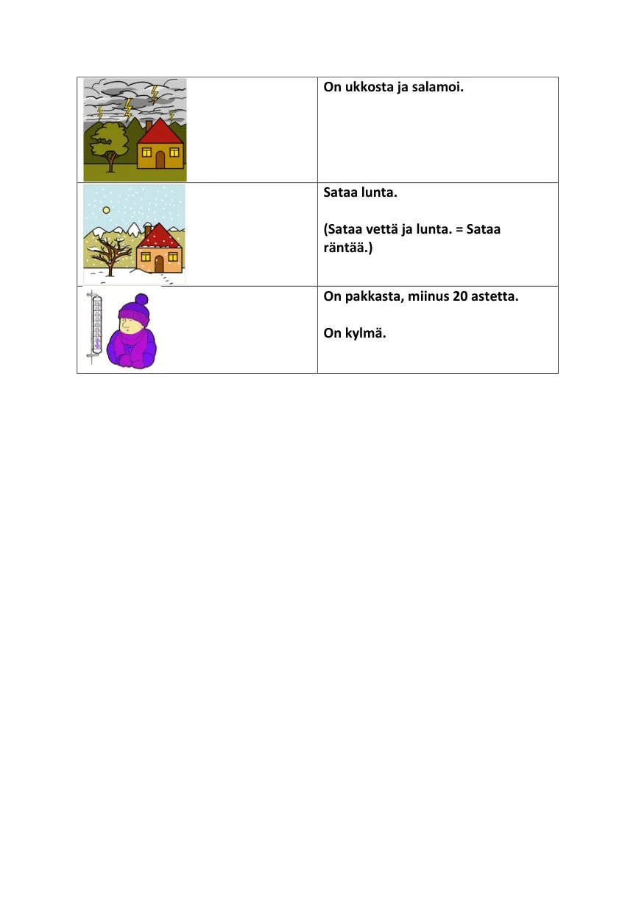


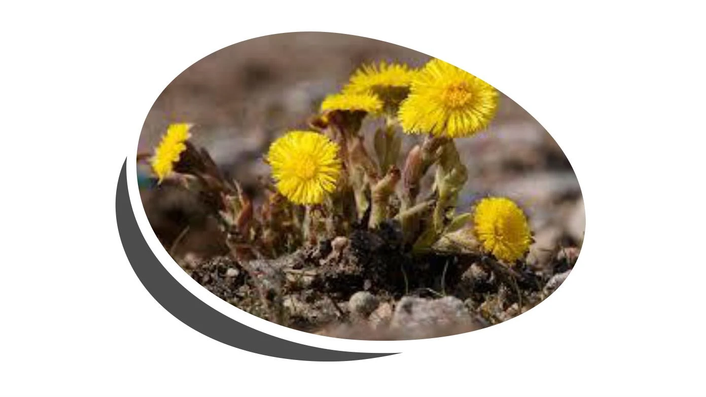


| Suomi | 中文 | English 说明 |
|---|---|---|
| sää | 天气 | Weather: Millainen sää on? |
| ilma | 天、空气 | Air or weather; interchangeable with sää in small talk. |
| Millainen … on? | ……怎么样？ | What kind of … is it? |
| aurinkoinen | 晴朗的 | Nominative adjective with sää: On aurinkoinen sää. |
| aurinkoista | 晴朗（部分格谓语） | Partitive predicate without a subject: On aurinkoista. |
| sateinen / sateista | 下雨的 | Rainy; the -inen form agrees with sää, the -ista form stands alone. |
| pilvinen / pilvistä | 多云的 | Cloudy. |
| tuulinen / tuulista | 有风的 | Windy. |
| sumuinen / sumuista | 有雾的 | Foggy. |
| sataa | 下雨 / 下雪 | Impersonal verb, only 3rd person singular, no subject. |
| lumi → lunta | 雪（部分格） | Sataa lunta = it is snowing. |
| vesi → vettä | 水（部分格） | Sataa vettä = it is raining. |
| räntä → räntää | 雨夹雪 | Sataa räntää = it is sleeting. |
| rae → rakeita | 冰雹 | Sataa rakeita = it is hailing. |
| pakkasta | 零下、严寒 | On pakkasta = it is freezing. |
| helle | 酷暑 | On helle = it is very hot (over 25 °C). |
| talvella, kesällä | 冬天、夏天 | Seasons take the adessive -lla. |
| tammikuussa | 一月（内格） | Months take the inessive -ssa. |
解：第一句用名词结构：Tänään on aurinkoinen sää. 也可以用省略主语的形容词结构：Tänään on aurinkoista. 第二句：On plus kahdeksantoista astetta.
要点：18 = kahdeksantoista（8 + toista）；astetta 是部分格，因为温度是量。
Kesässä sataa paljon vettä.解：两处错。季节不用 -ssa，改为 kesällä。整句：Kesällä sataa paljon vettä.
思路迁移：看到「季节 + 格」先查是不是 -lla；看到 sataa 后面的名词先查是不是部分格（vettä 正确，lunta、räntää 同理）。
Milloin olet syntynyt?，设定生日是 1999 年 11 月 3 日。解：月份用 -ssa：marraskuussa。年份用 vuonna 1999（vuonna = vuosi 的样格，固定说法）。完整答句：Olen syntynyt marraskuussa vuonna 1999.
要点：olen syntynyt 是「出生」的固定完成形式，作为整块记住即可，第 12 讲会说明它的构成来源。
Syksyllä sataa usein vettä. Minä asun omakotitalossa.解：第一句：季节 -lla（syksyllä）+ 无人称动词（sataa）+ 频率副词（usein）+ 部分格宾语（vettä）。第二句：内格（omakotitalossa = 独栋房子里），因为「住在某建筑内部」用 -ssa。
对比：季节 -lla 与建筑 -ssa 在同一段里并存，正说明芬兰语的格由名词的语义类别决定，不由汉语的「在」决定。
- 把四季与十二个月分别写成 -lla 与 -ssa 形式，各造一句
Milloin …?的答句。 - 用三种天气结构各写一句：名词句（sää）、省略主语句（部分格）、动词句（sataa / tuulee / paistaa）。
- 翻译：「冬天下很多雪，我每天晚上去桑拿。」
- 改错：
Kesässä on lämmin sää./On sateinen./Sataa lumi./On pakkanen. - 写一段 4 句的短文：说明你最喜欢的季节、那个季节的天气、你在那个季节做什么。
答案与思路
1. 季节：talvella, keväällä, kesällä, syksyllä；月份：tammikuussa … joulukuussa。答句示例：Kesällä minä uin järvessä. / Joulukuussa on paljon lunta.
2. 名词句：On tuulinen sää. 部分格句：On pilvistä. 动词句：Ulkona tuulee paljon. 或 Aurinko paistaa.
3. Talvella sataa paljon lunta, ja käyn saunassa joka ilta. 注意 lunta 部分格、joka ilta 不加格（joka 后面的时间词用原形）。
4. Kesässä → kesällä；On sateinen. → On sateinen sää. 或 On sateista.；Sataa lumi. → Sataa lunta.；On pakkanen. → On pakkasta.
5. 示例：Minun lempivuodenaika on syksy. Syksyllä on viileä ja sateista. Minä kävelen metsässä ja haravoin lehtiä. Illalla luen kirjaa kotona. 自检每句的时间词是否用了正确的格。
Millainen sää on? 的两套答句、sataa + 部分格。听力与口语都直接考这些短语。sataa 后面忘掉部分格：sataa lumi、sataa vesi 都错。sataa 加主语：Se sataa、Taivas sataa 都不成立。Sataa kissoja ja koiria、Sataa rahaa 这类惯用语解释「sataa 表示大量落下」的语义机制。天气与时间表达清单
说天气三步
- 选结构：有 sää 用主格形容词；无主语用部分格形容词；有动作动词直接用第三人称单数
- 形容词部分格：-inen → -ista/-istä
- 温度：plus / miinus + 数词 + astetta
- 降水：sataa + vettä / lunta / räntää / rakeita
说时间两步
- 季节与时段的词先换成 -lla：kesällä、illalla、aamulla
- 月份换 -ssa：tammikuussa、huhtikuussa
- 星期换 -na：maanantaina（第 3 讲）
| 源文件 | 位置 | 覆盖知识点 |
|---|---|---|
| 03_Tunti 2/1_Milloin, Vuodenajat ja kuukaudet.pdf | p1–p4 | 四季 -lla、天气句型、十二个月 -ssa、季节活动段落 |
| 03_Tunti 2/2_Keskustele Kuukaudet.pdf | p1 | 看图造句任务：Mikä kuukausi / vuodenaika on? Mitä ihmiset tekevät? |
| 03_Tunti 2/3_Millainen sää on.pdf | p1 | 天气问答卡标题与口语任务形式 |
| 03_Tunti 2/4_Sataa.pdf | p2–p6 | sataa 的变位与限定用法、部分格搭配、六条惯用语 |
| （补充） | 2.2、2.5 | 形容词谓语部分格的理据、-lla 与 -ssa 的语义分工属解释性拓展 |
| （跳过） | — | 3_Millainen sää on 的 p2–p12 为纯图片页，无文字语言点；图片素材不入讲义 |
第 3 讲 · 钟点、星期与 Milloin 时间格
Telling the Time, Weekdays and Time Cases 第 1 章 自我介绍与日常时间
本节定位
第三讲把第 2 讲的时间格补完整：季节用 -lla、月份用 -ssa，这一讲再加两类——星期用 -na、钟点用 -lta/-ltä。四类合起来，才算把 Milloin? 这个问句答全。
同时它引入本课第一个「读法规则」：芬兰语有两套报时系统（传统与数字），传统系统的 puoli（半点）逻辑与汉语、英语都不同，是最容易在听力题里失分的地方，本讲会专门拆开讲。
学完本节你应当能够：
- 用三种问法问时间，并按传统与数字两种方式读出任意时刻
- 解释
puoli yksi为什么是 12:30，不把它读成 1:30 - 把星期写成 -na 形式、把钟点写成 -lta 形式，并用它们回答
Milloin? - 在时间句里加时段限定（aamulla、illalla、yöllä）区分同名的十二小时制时刻
- 说出日期与星期的书写规范，包括芬兰语不用大写这一点
3.1 三种问时间的说法
问「现在几点」有三种说法，语气与场景不同：Mitä kello on?（最常用）、Paljonko kello on?（口语，偏「多少」）、Kuinka paljon kello on?（更完整、略正式）。三者的答句结构相同，都以 Kello on … 或口语的 Se on … 开头。
注意 kello 有两个意思：一是「钟、表」（名词），二是报时句里的固定成分（Kello on viisi = 五点了）。作为时间单位「小时」时它是 tunti：kaksi tuntia = 两小时。报点用 kello，计时长用 tunti。
3.2 数字时间（digitaalinen aika）
数字时间按「小时 + 分钟」直接读，分钟读成两位数：12.34 读作 Kello on kaksitoista kolmekymmentäneljä；整点读作 Kello on kolmetoista (nolla-nolla)（13:00）。这种读法在火车站、机场、电视节目表里最常见。
| 数字写法 | 数字时间读法 | 说明 |
|---|---|---|
| 13:00 | Kello on kolmetoista (nolla-nolla). | 整点直接读小时，可补 nolla-nolla |
| 21:17 | Kello on kaksikymmentäyksi seitsemäntoista. | 小时 + 分钟两个数 |
| 5:25 | Kello on viisi kaksikymmentäviisi. | 小时不加「零」 |
| 17:30 | Kello on seitsemäntoista kolmenkymmentä. | 分钟 30 读 kolmenkymmentä |
| 9:45 | Kello on yhdeksän neljäkymmentäviisi. | 分钟 45 读 neljäkymmentäviisi |
| 11:55 | Kello on yksitoista viisikymmentäviisi. | 分钟 55 读 viisikymmentäviisi |
kolmetoista … yhdeksäntoista；20 以上按 kaksikymmentäyksi 这类复合数连写。注意 24 小时制里 21 读 kaksikymmentäyksi，不是 yhdeksäntoista 加别的。3.3 传统时间（perinteinen aika）：yli 与 vailla
传统系统以「下一个整点」或「上一个整点」为参照，用两个介词性词：yli（过）与 vailla / vaille（差）。规则如下：
规则一（过半点之前）：分钟 + yli + 当前小时。12:10 = kymmenen yli kaksitoista；12:15 = viisitoista yli kaksitoista，也可说 vartin yli kaksitoista。
规则二（过半点之后）：剩余分钟 + vailla / vaille + 下一个小时。12:40 = kaksikymmentä vailla yksi（差二十分一点）；12:45 = varttia vailla yksi 或 viisitoista vailla yksi。
规则三（半点）：puoli + 下一个小时。12:30 = puoli yksi。这是全课最反直觉的一条：芬兰语的 puoli yksi 直译是「一半的一点」，意思是「朝着一点走了一半」，即 12:30，不是 1:30。
规则四（整点）：Kello on (tasan) yksi，tasan 表示「整」。
| 时刻 | 传统读法 | 关键点 |
|---|---|---|
| 12:00 | Kello on (tasan) kaksitoista. | 整点 |
| 12:10 | kymmenen yli kaksitoista | yli + 当前小时 |
| 12:15 | viisitoista yli kaksitoista / vartin yli kaksitoista | vartti = 一刻钟 |
| 12:30 | puoli yksi | puoli + 下一个小时 |
| 12:40 | kaksikymmentä vailla yksi | vailla + 下一个小时 |
| 12:45 | varttia vailla yksi / viisitoista vailla yksi | 两种说法都常见 |
| 11:55 | viisi vailla kaksitoista | 差五分十二点 |
| 5:25 | kaksikymmentäviisi yli viisi | yli + 当前小时 |
| 9:45 | varttia vailla kymmenen | 差一刻十点 |
| 17:30 | puoli kuusi | puoli + kuusi = 5:30 |
| 21:17 | seitsemäntoista yli yhdeksän | yli + 当前小时 |
puoli yksi 理解成「十二点半」。凡是听到 puoli，先取后面那个数，减一，再想「那个小时的半点」。同理 puoli kuusi = 5:30，puoli kymmenen = 9:30。vailla 与 vaille 是同一词的两种形态，材料注明 vailla = vaille，两者都可使用；口语里 vaille 更常见。vartti（一刻钟）的部分格是 varttia，属格是 vartin，所以「一刻过」有两种说法：vartin yli 与 varttia yli。
3.4 加时段限定：区分同名时刻
十二小时制里 12:30 与 00:30 都读 puoli yksi，靠时段词区分：Kello on puoli yksi päivällä（中午十二点半）／Kello on puoli yksi yöllä（夜里十二点半）。常用时段词：
| 时段词 | 含义 | 例句 |
|---|---|---|
| aamulla | 早上 | Kello on viisi aamulla. |
| päivällä | 白天 / 中午 | Kello on puoli yksi päivällä. |
| aamupäivällä | 上午 | Kello on kymmenen aamupäivällä. |
| iltapäivällä | 下午 | Kello on viisi iltapäivällä. |
| illalla | 晚上 | Kello on yhdeksän illalla. |
| yöllä | 夜里 | Kello on puoli yksi yöllä. |
这四个词全部是 -lla 形式，与第 2 讲的季节同理：把时段看作「时间表面」。
3.5 时间单位与换算
sekunti秒；minuutti分；tunti小时；vuorokausi / päivä一天；viikko一周。60 sekuntia = minuutti；60 minuuttia = tunti；24 tuntia = vuorokausi；7 päivää = viikko。kuukausi月；vuosi年；vuosikymmen十年。
注意数量表达：kaksi tuntia、kolme päivää、viisi minuuttia —— 2 以上的数词后面接部分格单数，这与第 1 讲的 kaksikymmentä vuotta 一致。
3.6 Milloin 的四类时间格
把这一讲与第 2 讲合起来看，Milloin? 的答句按名词类别分成四种后缀，这是本课程时间表达的总纲：
| 问什么 | 用的格 | 例子 | 记忆锚点 |
|---|---|---|---|
| 钟点（几点） | -lta/-ltä | yhdeltä, kahdelta, kolmelta, kuudelta, kymmeneltä | 「从某个钟点起」→ 从格 |
| 星期（周几） | -na/-nä | maanantaina, tiistaina, keskiviikkona, torstaina, perjantaina, lauantaina, sunnuntaina | 「作为那一天」→ 样格 |
| 月份（几月） | -ssa/-ssä | tammikuussa … joulukuussa | 「在月份内部」→ 内格 |
| 季节（哪个季节） | -lla/-llä | keväällä, kesällä, syksyllä, talvella | 「在时间表面」→ 上格 |
| 一天中的时段 | -lla/-llä | aamulla, päivällä, illalla, yöllä | 同上 |
| 周末 / 工作日 | -na / -lla | viikonloppuna；arkena | viikonloppu 用 -na；arki 用 -na |
钟点的 -lta 形式要逐个记住，因为会发生辅音交替与词形变化：
| 数字 | Milloin 形式 | 备注 |
|---|---|---|
| 1 | yhdeltä | yksi 的特殊词干 yhde- |
| 2 | kahdelta | kaksi → kahde- |
| 3 | kolmelta | kolme + lta |
| 4 | neljältä | neljä + ltä |
| 5 | viideltä | viisi → viide- |
| 6 | kuudelta | kuusi → kuude- |
| 7 | seitsemältä | seitsemän + ltä |
| 8 | kahdeksalta | kahdeksan + lta |
| 9 | yhdeksältä | yhdeksän + ltä |
| 10 | kymmeneltä | kymmenen + ltä |
| 11 | yhdeltätoista | 11 = yksi + toista，词干仍 yhde- |
| 12 | kahdeltatoista | 12 = kaksi + toista |
三个问法在语义上略有差别：Milloin syöt lounasta?（什么时候吃午饭，可答钟点、也可答时段）、Mihin aikaan syöt lounasta?（几点吃，要求钟点）、Monelta / Moneltako syöt lounasta?（几点，最口语，答句就是 -lta 形式）。
3.7 星期的写法与缩写
七个星期词与缩写：maanantai(MA)、tiistai(TI)、keskiviikko(KE)、torstai(TO)、perjantai(PE)、lauantai(LA)、sunnuntai(SU)。全部小写；缩写只在表格、课表里用，句子里要写全。
问「今天星期几」用 Mikä päivä nyt on?，答 Nyt on tiistai（主格，因为是在「指认」哪一天）。问「星期几做某事」用 Milloin …? 或 Minä päivänä …?，答句用 -na：Suomen tunti on tiistaina。
注意区分 päivä 的两个用法：Mikä päivä on?（今天星期几）与 Minä päivänä?（在哪一天）。前者问「哪一天（星期）」，后者问「具体哪一天」。
3.8 日期与语序
日期写作「日. 月份的部分格」：14. helmikuuta（2 月 14 日），读作 neljästoista helmikuuta。月份在此用部分格，因为日期是「月的一部分」。年份用 vuonna 1999。完整日期：3. marraskuuta 1999。
句子里时间词的位置比较自由：可以句首（Maanantaina minä käyn salilla）也可以句尾（Minä käyn salilla maanantaina）。句首位置通常用来强调时间，书面语更常见。
puoli kolmetoista 是错的。传统系统只用 1–12 的小时数，13 以上只出现在数字时间读法里。kello viideltä 与 Kello on viisi 混淆。前者是「五点时（做事）」，后者是「现在五点」。前者必带 -lta，后者不带。yli 就往回取当前小时，听到 vailla / vaille 或 puoli 就往前取下一个小时。先定方向，再算分钟，最后核对时段词。数字时间按「小时 + 分钟」两数直读：17.30 是 seitsemäntoista kolmenkymmentä。传统时间用三个钥匙：yli（过）取当前小时，vailla/vaille（差）取下一个小时，puoli 也取下一个小时但在其前减一——puoli yksi 是 12:30 而非 1:30，puoli kuusi 是 5:30，听到 puoli 先减一最稳。vartti（一刻）两形：vartin yli 与 varttia vailla。传统式只用 1–12 的小时数，puoli kolmetoista 错。报点用 kello（Kello on viisi），计时长用 tunti（kaksi tuntia），两者不可换。Milloin 四类格收拢成表：钟点 -lta（yhdeltä, kahdelta）、星期 -na（tiistaina）、月份 -ssa、季节与时段 -lla（aamulla, illalla）。日期写 14. helmikuuta，月份用部分格，因为是一月中的一部分。
芬兰语时间表达两套并行：正式（数字+时间词序）kello kolme 三点；口语（分+方向）viisi yli kolme 三点过五分、kymmenen vaille neljä 差十分四点。半点口语用 puoli neljä = 三点半（注意是「下半」逻辑：puoli neljä 指 3:30 不是 4:30，中国学生最常错）。写作业用正式式，口语听力练口语式。
原版图页（源 PDF 插图页）
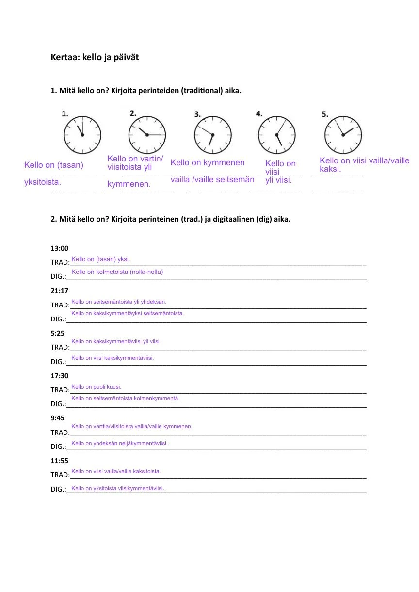
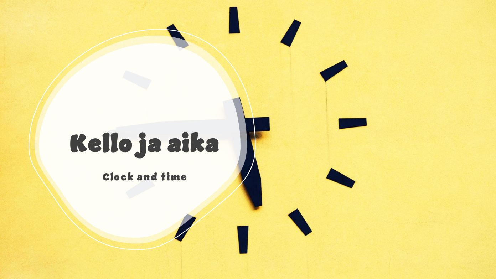


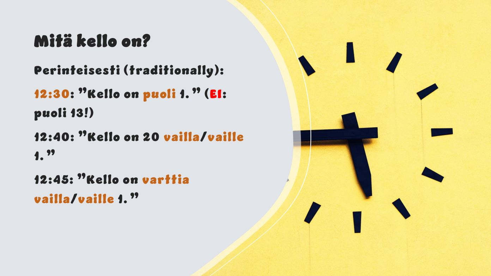
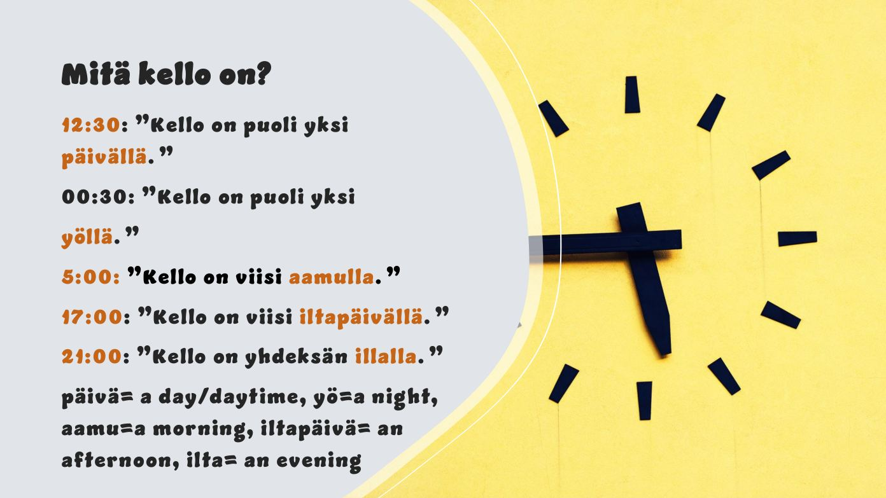
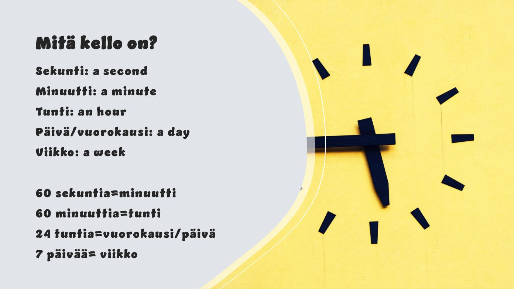

听力与视频材料（本地可播）
preload="none" 表示打开页面不会自动下载，点播放才开始加载。听力技巧：第一遍抓大意，第二遍跟读，第三遍听写关键词。| Suomi | 中文 | English 说明 |
|---|---|---|
| Mitä kello on? | 现在几点？ | What time is it? Also Paljonko kello on? |
| digitaalinen aika | 数字时间 | Digital reading: 12.34 = kaksitoista kolmekymmentäneljä. |
| perinteinen aika | 传统时间 | Traditional reading with yli, vailla and puoli. |
| yli | 过 | Minutes past the hour: viisi yli kuusi = 6:05. |
| vailla / vaille | 差 | Minutes to the next hour: kymmenen vailla seitsemän = 6:50. |
| vartti | 一刻钟 | Quarter of an hour: vartin yli / varttia vailla. |
| puoli | 半点（指向下一小时） | puoli yksi = 12:30, not 1:30. |
| tasan | 整 | Kello on tasan yksi = exactly one o’clock. |
| aamulla, päivällä, illalla, yöllä | 早上、白天、晚上、夜里 | Parts of the day take -lla. |
| maanantaina | 周一（样格） | Weekdays take -na: tiistaina, keskiviikkona. |
| yhdeltä, kahdelta | 一点、两点（从格） | Clock time in answers to Milloin takes -lta. |
| kuukausi | 月 | Month; kuukaudessa = in a month. |
| vuorokausi | 一昼夜 | 24 tuntia = vuorokausi. |
| viikonpäivä | 星期 | Weekday; the seven names are written in lower case. |
| tunti | 小时 | Hour as a duration: kaksi tuntia. |
| Mihin aikaan? | 几点？ | Asks for a clock time: Mihin aikaan syöt? |
解：传统：puoli kuusi（朝着六点走了一半 → 5:30），若要限定可说 puoli kuusi iltapäivällä。数字：Kello on seitsemäntoista kolmenkymmentä。
易错点：不要读成 puoli seitsemän（那是 6:30），也不要读 puoli seitsemäntoista。
解：45 分已经过了半点，按规则要往下一个整点（10 点）数差多少：差 15 分。所以是 varttia vailla kymmenen 或 viisitoista vailla kymmenen。
判断口诀：分钟 ≤ 30 用 yli + 当前小时；分钟 > 30 用 vailla + 下一小时；正好 30 用 puoli + 下一小时。
Milloin sinä heräät?，设定 6:40 起床。解：6:40 的分钟大于 30，用 vailla 加下一个小时：差 20 分七点 → Herään kaksikymmentä vailla seitsemän。也可加时段：Herään kaksikymmentä vailla seitsemän aamulla。
语法点：答句的动词用第一人称（herään），时间短语放在句尾，时间词本身不再加 -lta，因为 vailla 结构已经表示「差多少到几点」。
解：第一句：Tiistaina olen kampuksella.（星期 -na，地点 -lla，kampusi → kampuksella 有 k→ks 的变化）。第二句：Suomen tunti on yhdeksästä kahteentoista.
要点：表示时间段「从几点到几点」用 -sta … -hVn（elative + illative）：yhdeksästä（从九点）、kahteentoista（到十二点）。这与单点时刻的 -lta 不同，材料正文只给了单点，属衔接性拓展。
- 用传统时间读出：7:15、11:40、14:30、18:55、22:05。
- 用数字时间读出：8:30、13:00、16:45、19:10。
- 把七个星期写成 -na 形式，并用其中三个各造一句
Milloin …?的答句。 - 翻译：「我每天早上七点起床，晚上十一点睡觉。」
- 改错：
Kello on puoli kolmetoista./Kello on viisi yli kaksitoista（想表达 11:55）/Menen nukkumaan kello yksitoista.
答案与思路
1. 7:15 vartin yli seitsemän；11:40 kaksikymmentä vailla kaksitoista；14:30 puoli kolme（下午两点半）；18:55 viisi vailla seitsemän；22:05 viisi yli kymmenen（晚上）。
2. 8:30 kahdeksan kolmenkymmentä；13:00 kolmetoista (nolla-nolla)；16:45 kuusitoista neljäkymmentäviisi；19:10 yhdeksäntoista kymmenen。
3. maanantaina, tiistaina, keskiviikkona, torstaina, perjantaina, lauantaina, sunnuntaina。答句示例：Minä urheilen maanantaina ja torstaina. / Suomen tunti on keskiviikkona. / Käyn salilla lauantaina.
4. Herään joka päivä seitsemältä aamulla ja menen nukkumaan yhdeltätoista illalla. 注意两个钟点都用 -lta，「每天」用 joka päivä（joka 后不加格）。
5. 三处：puoli kolmetoista → puoli yksi（12:30）或按需 puoli kaksi；11:55 应说 viisi vailla kaksitoista；kello yksitoista → yhdeltätoista。
yli / vailla / puoli 三件套、星期 -na 与钟点 -lta 的形式、Milloin? 四类时间格的分工。听力题几乎必出报时。puoli 指向下一个小时：puoli yksi = 12:30，写反是最常见的失分点。puoli neljätoista 不成立。maanantaissa、maanantailla 都错，应为 maanantaina。-sta … -hVn 表达时间段（yhdeksästä kahteentoista），并解释它与单点 -lta 的语义差别。报时与时间格清单
读任意时刻四步
- 先判分钟段：≤ 30 用 yli，= 30 用 puoli，> 30 用 vailla
- yli：分钟 + yli + 当前小时
- puoli：puoli + 下一小时
- vailla：差值 + vailla + 下一小时
- 需要时补时段词 aamulla / päivällä / illalla / yöllä
时间格四选一
- 钟点 → -lta：yhdeltä、kahdelta
- 星期 → -na：tiistaina、viikonloppuna
- 月份 → -ssa：huhtikuussa
- 季节与时段 → -lla：kesällä、illalla
| 源文件 | 位置 | 覆盖知识点 |
|---|---|---|
| 04_Tunti 3/1_Kertaa kello ja päivät.docx | 全篇 4 题 | 传统与数字时间书写练习、星期缩写 MA–SU、六类 Milloin 问答 |
| 04_Tunti 3/2_VASTAUKSET- Kello ja päivät.pdf | p1–p2 | 12 组时刻的标准答案、星期全名、-lta/-na/-ssa 答句范例 |
| 04_Tunti 3/3_kello.pdf | p2–p6 | 三种问时间、数字时间、传统时间 yli/vailla/vartti/puoli、时段词、时间单位 |
| 04_Tunti 3/4_Viikonpäivät jne.pdf | p2–p4 | 七个星期、十二个月、四季、芬兰语不大写 |
| 04_Tunti 3/5_Milloin.pdf | p2–p6 | Milloin 的四类答句：钟点 -lta、星期 -na、时段 -lla、月份 -ssa、季节 -lla |
| 04_Tunti 3/6_Puhu Milloin_.html | 全篇 | 口语问句模板：Milloin syöt / heräät / menet nukkumaan / urheilet |
| （补充） | 3.8 | 日期写法与 -sta … -hVn 时间段表达为衔接性拓展，原文只给单点时刻 |
| （跳过） | — | 1_Kertaa kello ja päivät 的表格式空行属练习版面，无新增语言点 |
第 4 讲 · 将来表达与周末计划
Expressing the Future and Making Plans 第 1 章 自我介绍与日常时间
本节定位
第四讲回答一个初学者必问的问题：芬兰语的「将来时」在哪？答案是没有独立的将来时，将来由「现在时 + 时间词」共同表达。这一讲因此同时是语法课（时间副词系统）和句型课（tulla + -maan）。
它还把第 3 讲的时间格真正用起来：ensi viikolla、ensi maanantaina、viikonloppuna 全部是前面学过的 -lla / -na 形式，只是前面多了一个 ensi（下一个）。
学完本节你应当能够：
- 解释为什么
Huomenna ostan ruokaa已经是将来句，并列出十个以上的将来时间词 - 用
tulla + -maan/-mään结构表达「确定会做」的语气，并正确构造 -ma 形式 - 回答
Mitä teet illalla / huomenna / viikonloppuna / ensi viikolla?并给出两句以上计划 - 区分移动动词搭配的地点格（
menen salille、menen kauppaan、käyn salilla） - 用
ajattelin、minun pitää等短语补充计划与义务的表达
4.1 芬兰语没有将来时
材料的第一句就是结论：Finnish language doesn’t have a separate tense for future actions. Instead, we use the present tense. 芬兰语只有现在时与过去时两套时间形式（过去时在本课程只以个别词形出现，见第 6、12 讲），将来完全靠现在时加时间状语。
同一句现在时可以指现在，也可以指将来，区别只在时间词：
| 句子 | 含义 | 时间指向 |
|---|---|---|
| Tänään ostan ruokaa. | 今天我买菜。 | 现在 / 今天 |
| Huomenna ostan ruokaa. | 明天我将买菜。 | 将来 |
| Ensi viikolla menen salille. | 下周我去健身房。 | 将来 |
| Illalla katson elokuvan. | 晚上我要看一部电影。 | 将来（今天晚些） |
| Joka päivä käyn koulussa. | 我每天去学校。 | 习惯性，跨现在与将来 |
4.2 将来时间词系统
下面是材料给出的将来时间词，全部可以直接放在句首或句尾：
| 时间词 | 含义 | 构成说明 |
|---|---|---|
| tänään | 今天 | 时间副词，不变格 |
| huomenna | 明天 | -na 形式（样格），与星期同理 |
| myöhemmin | 稍后、以后 | 比较级形式的副词 |
| ensi maanantaina | 下周一 | ensi + 星期 -na |
| ensi viikolla | 下周 | ensi + viikko 的 -lla |
| ensi vuonna | 明年 | ensi + vuosi 的 -na |
| ensi kerralla | 下次 | ensi + kerta 的 -lla |
| ensi viikonloppuna | 下个周末 | ensi + viikonloppu 的 -na |
| jatkossa | 今后、往后 | jatko 的 -ssa，固定副词 |
| tulevaisuudessa | 在未来 | tulevaisuus 的 -ssa |
| illalla | 晚上 | ilta 的 -lla |
| viikonloppuna | 周末 | viikonloppu 的 -na |
| ylihuomenna | 后天 | yli + huomenna |
注意 ensi 与 viime 的对立：ensi viikolla（下周）／viime viikolla（上周）。ensi 本身不变格，格加在后面的名词上，这是「前修饰语不变、中心词变格」的典型例子（第 9 讲属格部分会再遇到同类结构）。
还有一个细节：huomenna 与 tänään 是副词，不带格词尾；而 ensi maanantaina、ensi viikolla 是「修饰语 + 变格名词」的组合。写作时不要写成 ensi viikko 当时间状语，必须变格。
4.3 tulla + -maan/-mään：强调式的将来
除了「现在时 + 时间词」，还有一种更有把握、更强调的将来表达：tulla 的现在时 + 主动作动词的 -maan/-mään 形式。材料把它描述为 more pressuring way to tell that something will happen，即「肯定会、我保证会」。
结构分两步：
- 把
tulla按人称变位：tulen, tulet, tulee, tulemme, tulette, tulevat - 把主动作动词变成 -ma/-mä 形式，再加
-an/-än的 illative 词尾，得到-maan/-mään - 主动作动词的人称由
tulla承担，后面那个形式不再变人称
材料给的六个转换例子正好覆盖六类动词，可以当作构造模板：
| 原形 | -maan / -mään 形式 | 构造过程 |
|---|---|---|
| ostaa | ostamaan | 词干 osta- + maan |
| juoda | juomaan | 词干 juo- + maan（第二类去 -da） |
| kävellä | kävelemään | 词干 kävele- + mään（第三类加 -e） |
| haluta | haluamaan | 词干 halua- + maan（第四类，注意不是 halaamaan） |
| tarvita | tarvitsemaan | 词干 tarvitse- + maan（第五类加 -se） |
| vanheta | vanhenemaan | 词干 vanhene- + maan（第六类加 -ne） |
| mennä | menemään | 词干 mene- + mään |
| tehdä | tekemään | 词干 teke- + mään |
例句：Tulen ostamaan lahjan.（我一定会买礼物。）／Hän tulee tarvitsemaan lisää.（他肯定会需要更多。）／Me tulemme kävelemään paljon.（我们一定会走很多路。）
Tulen ostaa（把主动作留原形）；二是 Minä tulen ostan（给主动作也变了人称）。记住：只有 tulla 变位，第二个动词永远是 -maan 形式。语用提醒：这个结构语气偏重，日常对话里用得不多。多数情况单纯用现在时更自然：Huomenna ostan lahjan 已经足够。写作或口语考试里，一两句 tulen … -maan 能显示语法掌握度，但通篇使用会显得生硬。
4.4 计划与安排的常用短语
材料里的词汇表给了几个谈计划的高频短语，值得整块记住：
Mitä teet illalla?—— 你晚上做什么？（tehdä的第二人称单数teet）En mitään ihmeellistä.—— 没什么特别的。（否定句 + 部分格mitään）ajattelin pysyä kotona—— 我打算待在家（ajattelin是「我想过 / 我打算」，过去形式但表委婉的现在意图）minun pitää tehdä koulutehtäviä—— 我得做课程作业（pitää表义务，主语用属格minun）menen salille—— 我去健身房（sali的 -lle）lähden kävelylle—— 我出去散步（kävely的 -lle）menen baariin—— 我去酒吧（baari的 -hVn）konserttiin—— 去音乐会（illative）kääntyä—— 转弯；Kuulostaapa hienolta!—— 听起来不错啊！（-pa加强语气）
其中 minun pitää + 动词原形 是「必须」的最常用说法，与 täytyy 同义。注意主语用属格：minun pitää、sinun pitää、hänen pitää。
4.5 移动动词与地点格：去、在、从
谈计划离不开「去哪」。芬兰语的移动动词对格很敏感，三个方向对应三类后缀：
| 方向 | 格 | 例子 | 动词 |
|---|---|---|---|
| 去某地（进入） | -hVn / -Vn（illative） | menen kauppaan, menen salille, menen baariin, menen kotiin | mennä, lähteä, tulla |
| 在某地（内部） | -ssa/-ssä（inessive） | olen kaupassa, käyn salilla（注意 sali 用 -lla） | olla, käydä, asua |
| 在某地（表面 / 活动） | -lla/-llä（adessive） | olen salilla, olen mökillä, käyn salilla | olla, käydä |
| 从某地离开 | -sta/-stä（elative） | tulen kaupasta, lähden kotoa | tulla, lähteä |
特别注意 käydä（去一下、访问）后面接 -ssa 或 -lla，表示「去某处办事 / 参加活动」：käyn salilla（我去健身）、käyn kaupassa（我去趟商店）、käyn saunassa（我去桑拿）。而 mennä 强调「去」这个动作本身，常用 illative：menen kauppaan。
另外 koti（家）的 illative 是不规则的 kotiin，elative 是 kotoa：Menen kotiin（我回家）、Tulen kotoa（我从家里来）。这两个形式必须单独记。
4.6 否定的将来与「不做」
否定式与现在时否定相同：en + 动词词干。Huomenna en mene salille, minä lepään.（明天我不去健身，我休息。）注意否定的宾语若出现，同样要部分格：En osta ruokaa tänään.
材料里有一个很实用的否定答句 En mitään ihmeellistä：mitään 是 mitä 的部分格（否定句要求），ihmeellistä 是形容词部分格，与 mitään 一致。
4.7 写作任务：用现在时写「下周」
材料的家庭作业要求写「下周我做什么」，每天两件事，明确要求 Käytä preesensiä ilmaisemaan futuuria（用现在时表达将来）。这类写作有三条硬要求：
- 每天的时间词必须用 -na 形式：
maanantaina, tiistaina, keskiviikkona, torstaina, perjantaina, lauantaina, sunnuntaina - 每天至少两个动词，且动词要按人称变位（第一人称单数 -n）
- 若出现宾语，判断该用总格还是部分格（第 10 讲详述），拿不准时优先部分格
示例段落：Maanantaina minä menen kouluun ja opiskelen suomea. Tiistaina käyn salilla ja luen kirjaa. Keskiviikkona minä tapaan ystävän ja syömme pizzaa.
ensi viikko 作时间状语（缺格）：应为 ensi viikolla。tulla + -maan 当成唯一将来式，所有句子都套：日常用现在时更自然，tulen tekemään 只在强调确定性时用。meen（menen）、tuun（tulen）、teen（teen）这类缩短形式，听力里听到不要当成新词。芬兰语没有独立将来时：Huomenna ostan ruokaa 已经是「明天我要买菜」，动词仍是现在时，将来靠时间词判断——看到现在时先别译「正在」，先找 huomenna / ensi viikolla / illalla / tulevaisuudessa。时间词本身要带格：ensi 不变，格加在中心词上，所以 ensi viikolla、ensi maanantaina 才对，ensi viikko 不能作状语。强调式 tulla + -maan/-mään 只有 tulla 变位：Tulen ostamaan lahjan，主动作永远是 -maan 形式，不要再给它加人称；语气偏重，日常多用现在时更自然。移动动词对格敏感：menen kauppaan（入格）、käyn salilla（上格，「去某处办事」）、tulen kaupasta（出格），koti 的不规则形 kotiin / kotoa 单独记。义务句 minun pitää tehdä koulutehtäviä 的主语用属格，与 haluta + 原形 不同。
原版图页（源 PDF 插图页）


听力与视频材料（本地可播）
preload="none" 表示打开页面不会自动下载，点播放才开始加载。听力技巧：第一遍抓大意，第二遍跟读，第三遍听写关键词。| Suomi | 中文 | English 说明 |
|---|---|---|
| preesens | 现在时 | The present tense also expresses the future. |
| huomenna | 明天 | Tomorrow; an adverb, no case ending. |
| ensi viikolla | 下周 | ensi + viikko in the adessive. |
| ensi maanantaina | 下周一 | ensi + weekday in the essive. |
| myöhemmin | 稍后 | Later. |
| tulevaisuudessa | 在未来 | In the future. |
| jatkossa | 今后 | From now on; a fixed adverb. |
| tulla + -maan | 将要（强调） | Tulen ostamaan = I will definitely buy. |
| ostamaan | 去买（-maan 形式） | The -ma form of ostaa, used after tulla. |
| menemään | 去（-maan 形式） | The -ma form of mennä. |
| ajattelin | 我打算 | ajattelin pysyä kotona = I was thinking of staying home. |
| minun pitää | 我必须 | Obligation with the genitive subject: minun pitää tehdä. |
| salille | 去健身房 | Allative of sali: menen salille. |
| kotiin | 回家 | Irregular illative of koti; kotoa = from home. |
| ostoksille | 去买东西 | mennä ostoksille = to go shopping. |
| konserttiin | 去音乐会 | Illative of konsertti. |
解：普通式：Huomenna ostan ruokaa ja menen salille. 强调式：Huomenna tulen ostamaan ruokaa ja menemään salille.
要点：ruokaa 是部分格（买的是「一些食物」）；salille 是 -lle，因为 sali 被视为「活动场所」。强调式里两个主动作都变 -maan，只有 tulen 变位。
Käyn joka päivä koulussa. / Ensi kerralla tulen ajoissa. / Illalla katson elokuvan.解：第一句是习惯性（跨现在与将来），依据是 joka päivä。第二句是将来，依据是 ensi kerralla 与强调式 tulen。第三句是将来（今晚），依据是 illalla。
注意：katson elokuvan 用总格宾语（-n），表示「看完整部」；若说 katson elokuvaa 则是「在看、没看完」，这是第 10 讲的部分格与总格对立。
haluta 的 -maan 形式并造句「我肯定会想要更多」。解：haluta 属第四类，词干是 halua-（不是 hala-），加 -maan 得 haluamaan。句：Minä tulen haluamaan lisää.
易错点：受 halata（拥抱 → halaan）干扰，容易写成 halaamaan，那是「来拥抱」的意思。
Mitä teet viikonloppuna?，写三句，其中一句用 pitää 表义务。解：Lauantaina minä käyn salilla ja tapaan ystäviä. / Sunnuntaina minun pitää tehdä koulutehtäviä. / Illalla katson elokuvan kotona.
核对：星期 -na、minun pitää 主语属格、koulutehtäviä 部分格复数、elokuvan 总格。
- 列出十个将来时间词，并用其中五个各造一句计划句。
- 把下列动词变成 -maan/-mään 形式：ostaa、juoda、kävellä、tarvita、vanheta、mennä、tehdä。
- 翻译：「下周我会开始学芬兰语，并且每天听芬兰广播。」
- 改错：
Ensi viikko minä menen salille./Huomenna minä tulen ostaa ruokaa./Minä pitää tehdä kotitehtävät. - 写一段 5 句的「下周计划」，每天至少一个动词，最后一句用否定式说明哪天不做什么。
答案与思路
1. 示例十个：tänään, huomenna, ylihuomenna, illalla, viikonloppuna, ensi viikolla, ensi maanantaina, ensi vuonna, myöhemmin, tulevaisuudessa。造句：Ensi viikolla minä aloitan uuden kurssin.
2. ostamaan, juomaan, kävelemään, tarvitsemaan, vanhenemaan, menemään, tekemään。检查点：第四类 haluta/tarvita 类是否保留了原来的元音（tarvitse-）。
3. Ensi viikolla minä aloitan suomen opiskelun ja kuuntelen suomalaista radiota joka päivä. 第一句动作可用 tulen aloittamaan 强化；joka päivä 不加格。
4. 三处：ensi viikko → ensi viikolla；tulen ostaa → tulen ostamaan；minä pitää → minun pitää。
5. 示例：Maanantaina minä menen kouluun ja opiskelen suomea. Tiistaina käyn salilla. Keskiviikkona tapaan ystävän. Torstaina minun pitää tehdä koulutehtäviä. Perjantaina en mene baariin, minä lepään kotona.
tulla + -maan 的构造。tulla + -maan 里给第二个动词也变人称：tulen ostamaan 对，tulen ostan 错。ensi 后面的名词忘变格：ensi viikko、ensi kuukausi 都缺格。menen salille（去）与 olen salilla（在）不能互换。tulen ostamaan 与 ostan 的语用差别（承诺 / 确定性 vs 中性叙述），并在写作中按语境选择。谈计划清单
造句四步
- 先定时间词，并检查它的格：下周 -lla、周一 -na、周末 -na
- 动词用现在时并按人称变位
- 检查宾语：否定或部分动作 → 部分格；完整动作 → 总格
- 需要强调确定性时改用
tulen + -maan
移动三问
- 去哪 → illative：kauppaan、kotiin、baariin、salille
- 在哪 → inessive / adessive：kaupassa、salilla、mökillä
- 从哪来 → elative：kaupasta、kotoa
| 源文件 | 位置 | 覆盖知识点 |
|---|---|---|
| 05_Tunti 4/4_futuuri, korjattu.pdf | p1–p3 | 现在时 = 将来、八个将来时间词、Tänään/Huomenna 对照 |
| 05_Tunti 4/5_EXTRA, futuuri, korjattu.pptx | slide 2–3 | tulla + -maan/-mään 结构、六个动词转换、两句范例 |
| 05_Tunti 4/1_KOTITEHTÄVÄ … Sanasto, mitä teet viikonloppuna.docx | 全篇 | 周末计划词汇：tehdä、ajattelin、pitää tehdä、mennä salille、lähteä kävelylle、konserttiin |
| 05_Tunti 4/3_PUHU PARILLE.html | 全篇 7 问 | 口语问句模板：Mitä tekee illalla / viikonloppuna、Missä opiskelevat |
| 05_Tunti 4/6_KOTITEHTÄVÄ … ensi viikolla.docx | 全篇 | 写作任务要求：用现在时表将来、星期 -na 逐日安排 |
| （补充） | 4.5 | illative / inessive / adessive 三向对照表属归纳性拓展，原文只给例句 |
| （跳过） | — | 材料中的图片与对话插图不含语言点 |
第 2 章 动词系统与爱好 3 讲 章节页 →
第 5 讲 · 现在时与第一类动词
Present Tense and Verb Type 1 第 2 章 动词系统与爱好
本节定位
从这一讲开始进入动词体系。Tunti 5 只做一件事：把第一类动词（-a/-ä 结尾）的现在时肯定式、否定式和辅音交替（astevaihtelu）讲透。第一类动词占芬兰语常用动词的绝大多数，掌握它就能开口说大部分日常动作。
这一讲也是整套课程的方法论奠基：后面第 7 讲把六类动词一次讲完时，用的正是本讲的三个工具——去词尾得词干、加人称词尾、判强弱级。
学完本节你应当能够：
- 按六个主语人称正确变位任意第一类动词，并说明每个人称词尾的来源
- 用
ei的六个人称形式构成否定句，且不误用eivät搭配单数主语 - 判断一个第一类动词在变位时是否发生辅音交替，以及哪个人称用强级
- 背出 kk→k、pp→p、tt→t、k→∅、p→v、t→d 等主要交替对，并给例词
- 解释为什么
hän puhuu是两个 u 而minä puhun只有一个
5.1 人称代词与「动词要跟着变」
材料开篇就点明：Finnish verbs don’t always look the same. We call this conjugation. 芬兰语动词必须与人称一致，这一点与英语只有第三人称加 -s 不同，芬兰语六个人称各有词尾。
| 人称 | 单数 | 复数 |
|---|---|---|
| 第一人称 | minä = I | me = we |
| 第二人称 | sinä = you | te = you（复数 / 敬称） |
| 第三人称 | hän = she/he | he = they |
hän 不分性别，既可指她也可指他；te 既可指「你们」，也可用于对一位长辈或客户的敬称（类似法语 vous）。口语里 hän 常说成 se，he 常说成 ne，考试书面语仍用 hän / he。
5.2 第一类动词的变位规则
规则只有一句：去掉不定式末尾的 -a/-ä，得到词干，再加人称词尾。材料写作 –a/ä pois (-a/ä off)。
puhua → 词干 puhu-；asua → 词干 asu-；然后：
| 人称 | 词尾 | puhua | asua | yrittää |
|---|---|---|---|---|
| minä | -n | puhun | asun | yritän |
| sinä | -t | puhut | asut | yrität |
| hän | 长元音（词干元音双写） | puhuu | asuu | yrittää |
| me | -mme | puhumme | asumme | yritämme |
| te | -tte | puhutte | asutte | yritätte |
| he | -vat / -vät | puhuvat | asuvat | yrittävät |
第三人称单数是唯一「不加辅音词尾」的人称，它靠延长词干末元音表示：puhu + u = puhuu，asu + u = asuu，yritä + ä = yrittää。这也解释了为什么 hän 后面常出现双元音。
第三人称复数 -vat/-vät 的选择由元音和谐决定：词干里有 a、o、u 时用 -vat（puhuvat、asuvat、ostavat）；词干里只有 ä、ö、y 时用 -vät（yrittävät、kysyvät、ymmärtävät）。e 与 i 是中性的，看词干其他元音决定。
5.3 否定式：ei + 词干
材料给了否定式的「两个配料」：否定动词 ei 的变位形式 + 动词词干（不带人称词尾）。
| 人称 | 否定词 | puhua 否定 | asua 否定 |
|---|---|---|---|
| minä | en | en puhu | en asu |
| sinä | et | et puhu | et asu |
| hän | ei | ei puhu | ei asu |
| me | emme | emme puhu | emme asu |
| te | ette | ette puhu | ette asu |
| he | eivät | eivät puhu | eivät asu |
关键认识：否定句里主动词永远只有一种形式（词干），人称信息全部由 ei 承担。所以 ei puhu 里的 puhu 与 hän puhuu 的长元音不同 —— 否定式不拉长。
材料还给了一个非常实用的「反推词干」技巧：先把动词变成肯定式第一人称单数，再去掉 -n。minä leikin → leiki → en leiki。这样即使不确定词干，也能保证否定式正确。
这个技巧之所以有效，是因为第一人称单数的词尾 -n 是唯一一个「纯粹外加」的辅音词尾，去掉它不会影响词干内部结构（包括已经发生的辅音交替）。
5.4 辅音交替（astevaihtelu / KPT change）总则
材料对辅音交替的定义是：Sometimes when Finnish words are conjugated or suffixes are added to them the word itself slightly changes. 发生条件是词里含 K、P、T 这三个「危险字母」，或含其中一个的辅音组合。名词与动词都受影响。
术语：vahva = strong（强级）、heikko = weak（弱级）。材料给的判据很直白：In weak version of the verb core, there is less of K, P or T —— 弱级里 K/P/T 更少或消失。
| 交替对（强 → 弱） | 例词 | 说明 |
|---|---|---|
| kk → k | nukkua → nukun | 双写 k 变单 k |
| pp → p | kaappi → kaapin | 双写 p 变单 p |
| tt → t | tyttö → tytön | 双写 t 变单 t |
| k → ∅ | jalka → jalan；Turku → Turussa | k 直接消失 |
| p → v | leipä → leivän；tavata → tapaan | p 变 v；反向时 v → p |
| t → d | katu → kadun；Lahti → Lahdessa | t 变 d |
| nt → nn | antaa → annan | nt 变 nn |
| nk → ng | kenkä → kengän；Helsinki → Helsingissä | nk 变 ng |
| lt → ll | ilta → illan | lt 变 ll |
| rt → rr | ymmärtää → ymmärrän | rt 变 rr |
| mp → mm | kampa → kamman | mp 变 mm |
| lk → l | kulkea → kuljen | lk 变 l |
| rk → r | arki → arjen | rk 变 r |
| ht → hd | lähteä → lähden | ht 变 hd |
5.5 第一类动词里谁用强级、谁用弱级
这是本讲最重要的操作规则：第一类动词变位时，hän 与 he 用强级，其余四个人称用弱级（材料原文：In verbtype 1, weak version of verb is used with all other pronouns but hän and he）。
| 人称 | nukkua 的变位 | 级别 |
|---|---|---|
| minä | nukun | 弱（kk → k） |
| sinä | nukut | 弱 |
| hän | nukkuu | 强 |
| me | nukumme | 弱 |
| te | nukutte | 弱 |
| he | nukkuvat | 强 |
为什么这样分？可以用音节结构解释：-n、-t、-mme、-tte 都以辅音开头，把词干音节「关住」（闭音节），闭音节要求弱级；而 hän 的词尾是元音延长、he 的词尾 -vat 以元音开头，音节保持开放，所以保留强级。这条解释同样适用于名词属格（第 9 讲）。
否定式中主动词用词干，而词干本身通常就是弱级形式：en nuku、et nuku、ei nuku、emme nuku、ette nuku、eivät nuku。材料用 katua 示范了带交替的否定式：katua → kadu，故 en kadu、et kadu、ei kadu。
5.6 第一类动词常用词表
材料的动词表列了 25 个第一类动词，是口语与写作的高频词库。下面按语义分组，并给出第一人称单数形式（便于直接造句）：
| 动词 | 含义 | minä 形式 | 备注 |
|---|---|---|---|
| puhua | 说、讲 | puhun | puhua suomea |
| sanoa | 说（某句话） | sanon | sanoa jotain |
| kysyä | 问 | kysyn | kysyä kysymys |
| ymmärtää | 理解 | ymmärrän | rt → rr 交替 |
| tietää | 知道 | tiedän | t → d 交替 |
| asua | 住 | asun | asua Lahdessa |
| istua | 坐 | istun | istua tuolilla |
| seisoa | 站 | seison | seisoa jonossa |
| katsoa | 看 | katson | katsoa elokuva / elokuvaa |
| lukea | 读 | luen | lukea kirjaa |
| kirjoittaa | 写 | kirjoitan | tt → t |
| ostaa | 买 | ostan | ostaa ruokaa |
| maksaa | 付钱 | maksan | maksaa kortilla |
| odottaa | 等 | odotan | odottaa bussia |
| etsiä | 找 | etsin | etsiä avainta |
| harrastaa | 爱好、从事 | harrastan | harrastaa tanssia |
| matkustaa | 旅行 | matkustan | matkustaa junalla |
| rakastaa | 爱 | rakastan | rakastaa sinua |
| nauraa | 笑 | nauran | nauraa ääneen |
| itkeä | 哭 | itken | itkeä ilosta |
| tanssia | 跳舞 | tanssin | tanssia tangoa |
| laulaa | 唱歌 | laulan | laulaa karaokea |
| ajaa | 开车、骑 | ajan | ajaa pyörällä |
| saunoa | 洗桑拿 | saunon | saunoa joka ilta |
| kalastaa | 钓鱼 | kalastan | kalastaa järvellä |
| televisiota | （看电视的搭配） | — | katsoa televisiota |
最后一行 televisiota 不是动词，而是材料特意列出的搭配：katsoa televisiota（看电视），宾语用部分格，因为「看电视」被视为持续、非整体的活动。
材料还给了两条写作要求：Kirjoita 10 lausetta. Käytä jokaisessa lauseessa yhtä alla olevista verbeistä. Muista taivuttaa. Muista KPT-vaihtelu.（写 10 句，每句用一个动词，记得变位与辅音交替。）范例是 Me saunomme lauantaina.（我们周六洗桑拿）——注意 saunoa 的 me 形式是 saunomme，不是 saunomme 之外的什么特殊形式，规则照常。
5.7 元音和谐与前缀词尾的选择
芬兰语的词尾有前后两套：后元音版（a、o、u 类）与前元音版（ä、ö、y 类）。一个词内部通常只出现一套。规则是：
- 词干里若有 a、o、u 中任意一个 → 词尾用后元音版：
-vat、-a、-ssa。 - 词干里只有 ä、ö、y（以及中性的 e、i）→ 词尾用前元音版：
-vät、-ä、-ssä。 - 例：
puhuvat（有 u）、yrittävät（只有 ä/i）、kysyvät（只有 y）、ymmärtävät（ä）。
这条规则解释了为什么 yrittää 的 hän 形式是 yrittää（ä + ä），而 puhua 是 puhuu（u + u）。复合词按最后一个构词成分决定和谐：kirjoittaa（o 为主）用后元音。
5.8 拼写与发音细节
- 双字母表示长音：
puhuu的两个 u 都要读长；tulee的 ee 是长 e。 - ä 与 a 是不同音位：
yrittää与yrittää中的 ä 不能写成 a。 - ö 与 o 不同：
tyttö、kylmä。 - y 是圆唇前元音，接近汉语「ü」但更松：
kysyä、yrittää。
hän puhu 少一个 u。第三人称单数必须双写词干末元音。he puhuu。第三人称复数要 -vat/-vät：he puhuvat。minä puhuu。第一人称单数是 -n：puhun。口诀「一 n 二 t，三拉长，四 mme，五 tte，六 vat/vät」覆盖第一类动词全部词尾。hän puhuu 双 u 是因为第三人称单数不加辅音词尾、改为拉长词干末元音；minä puhun 只有一个 u。he 的 -vat 还是 -vät 看元音和谐：词干有 a/o/u 用 -vat（asuvat），只有 ä/ö/y 用 -vät（kysyvät）。否定式 ei 也变位（en, et, ei, emme, ette, eivät），后面只接裸词干（en puhu）；词干不确定就先变 minä 再去掉 -n。辅音交替 KPT 的强弱别用反：第一类里 hän 与 he 保留强级（nukkuu, nukkuvat），其余四人称弱级（nukun，kk→k），因为后接辅音词尾把音节关住了。常见对子 kk:k、pp:p、tt:t、k:∅、p:v、t:d、nk:ng、rt:rr。ymmärtää→ymmärrän、tietää→tiedän 是考试常挖空的词。
原版图页（源 PDF 插图页）


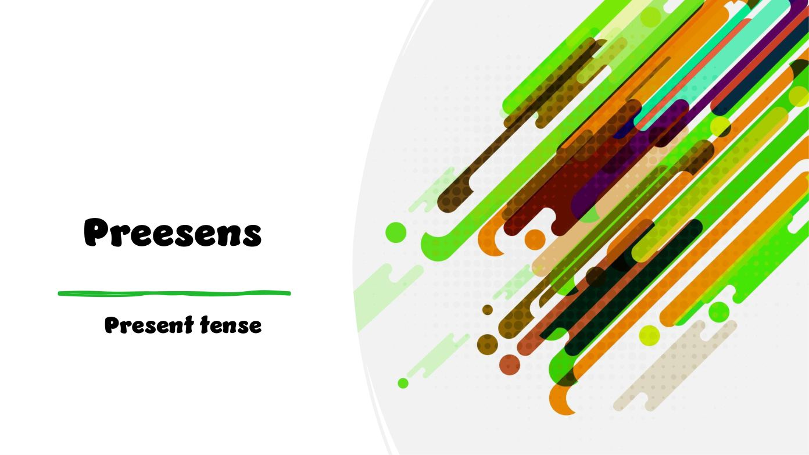

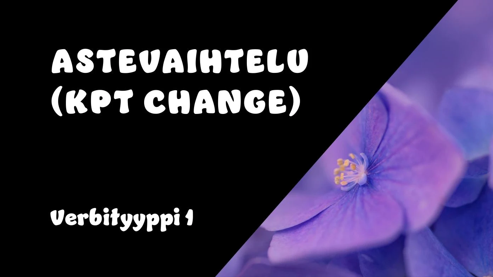
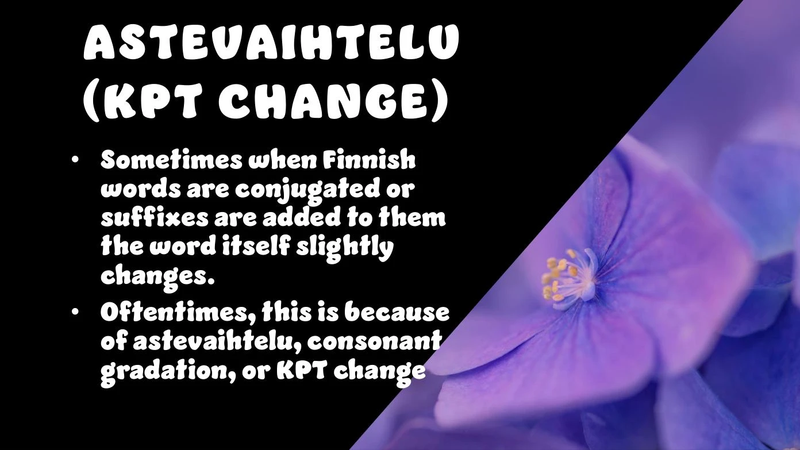
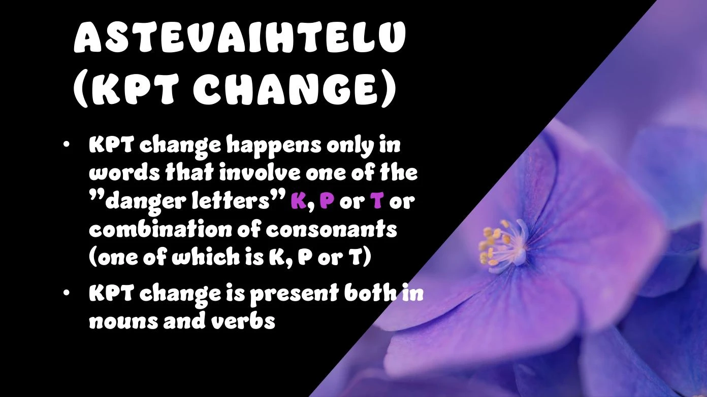
| Suomi | 中文 | English 说明 |
|---|---|---|
| puhua | 说、讲 | Type 1 verb; stem puhu-. |
| puhun | 我说 | 1st person singular ending -n. |
| puhuu | 他/她说 | 3rd person singular lengthens the final vowel. |
| puhuvat | 他们说 | 3rd person plural ending -vat. |
| en puhu | 我不说 | Negative: ei + verb stem, no personal ending on the verb. |
| astevaihtelu | 辅音交替 | Consonant gradation, the KPT change. |
| vahva aste | 强级 | Strong grade: more K, P or T. |
| heikko aste | 弱级 | Weak grade: less K, P or T. |
| kk → k | 双写 k 变单 k | nukkua → nukun, but hän nukkuu. |
| pp → p | 双写 p 变单 p | kaappi → kaapin. |
| tt → t | 双写 t 变单 t | tyttö → tytön. |
| k → ∅ | k 消失 | jalka → jalan; Turku → Turussa. |
| p → v | p 变 v | leipä → leivän. |
| t → d | t 变 d | katu → kadun; Lahti → Lahdessa. |
| vartalo | 词干 | The stem that personal endings are attached to. |
| yrittää | 尝试 | Type 1 with tt → t: minä yritän. |
ostaa（买）的六个人称，并标出强弱级。解：词干 osta-。minä ostan（弱，st 保留）、sinä ostat、hän ostaa（长元音）、me ostamme、te ostatte、he ostavat。
说明：ostaa 不含 K/P/T 交替对，所以六个形式都没有强弱差别；但词尾规律完全一致。若换成 maksaa（付），hän 形式 maksaa 仍不交替，而 lukea 的 k 在 minä 形式 luen 中消失（k → ∅）。
解：juoda 属第二类，但否定式规则相同：en juo。整句：Minä en juo kahvia, mutta minun mies juo kahvia joka päivä.
要点：否定句主动词用词干 juo；宾语 kahvia 部分格（否定句要求）。肯定句 juo kahvia 也用部分格，因为咖啡是不可数名词（第 10 讲）。
ymmärtää 在 he 形式里是否交替，并写出六个形式。解：含 rt 组合，强级 rt、弱级 rr。he 用强级：he ymmärtävät（保持 rt）。其余人称弱化：minä ymmärrän、sinä ymmärrät、me ymmärrämme、te ymmärrätte。hän 用强级并拉长：hän ymmärtää。
核对：六个形式里，只有 hän 与 he 保留 rt，其余都是 rr。
He ei puhu suomea. / Minä puhuu suomea. / Hän nukun hyvin.解：第一句 ei 应改 eivät（he 对应 eivät）：He eivät puhu suomea. 第二句第一人称应为 puhun：Minä puhun suomea. 第三句第三人称应为 nukkuu：Hän nukkuu hyvin.
共性：三句都是人称与词尾不匹配。否定句要同时检查「否定词的人称」和「主动词用词干」两件事。
- 变位
nukkua、kirjoittaa、ymmärtää的六个人称，并标出强弱级。 - 把下列句子改成否定句：
Minä asun Oulussa./Hän ostaa ruokaa./He puhuvat suomea. - 写出下列动词的第一人称单数：
katsoa、lukea、odottaa、etsiä、ajaa、saunoa、tietää、ymmärtää。 - 翻译：「我们周六洗桑拿，然后看电视。」
- 用五个第一类动词各写一句关于你日常生活的句子，至少两句含辅音交替。
答案与思路
1. nukkua：nukun / nukut / nukkuu / nukumme / nukutte / nukkuvat（弱、弱、强、弱、弱、强）。kirjoittaa：kirjoitan / kirjoitat / kirjoittaa / kirjoitamme / kirjoitatte / kirjoittavat（tt 只在 hän/he 保留）。ymmärtää：ymmärrän / ymmärrät / ymmärtää / ymmärrämme / ymmärrätte / ymmärtävät。
2. Minä en asu Oulussa. / Hän ei osta ruokaa. / He eivät puhu suomea. 注意宾语在否定句里仍为部分格（ruokaa、suomea）。
3. katson, luen, odotan, etsin, ajan, saunon, tiedän, ymmärrän。lukea → luen 是 k → ∅ 交替；tietää → tiedän 是 t → d；ymmärtää → ymmärrän 是 rt → rr。
4. Me saunomme lauantaina ja katsomme televisiota. 两个动词都按 me 变位，televisiota 部分格。
5. 示例：Minä juon kahvia aamulla.（juoda 属第二类，仅示意）／Minä luen kirjaa illalla.（lukea，k → ∅）／Hän puhuu suomea hyvin.（puhua，强级 + 长元音）／Me odotamme bussia.／He ymmärtävät minua.（ymmärtää，强级）。
ei 的六个人称与否定式词干、KPT 交替方向（hän/he 强、其余弱）。动词填空是本课程最稳定的题型。hän 形式忘记双写词干末元音：hän puhu。he 用 ei 而非 eivät：he ei puhu 错。minä nukkuun 当正确，或把 hän nukuu 当正确。第一类动词变位清单
变位五步
- 确认是 -a/-ä 结尾的第一类动词
- 去掉 -a/-ä 得词干
- 按人称加词尾：n / t / 长元音 / mme / tte / vat-vät
- 判断有无 K/P/T 交替：除 hän、he 外都要弱化
- 检查元音和谐：a o u 用后元音词尾，ä ö y 用前元音词尾
否定两步
- 按人称选 en / et / ei / emme / ette / eivät
- 主动词只留词干（可用「第一人称去 -n」反推）
| 源文件 | 位置 | 覆盖知识点 |
|---|---|---|
| 06_Tunti 5/1_Fi2, preesens.pdf | p2–p6 | 人称代词表、第一类动词肯定变位、否定式 ei + 词干、去 -n 反推词干技巧 |
| 06_Tunti 5/2_Verbejä, tyyppi1.pdf | p1 | 25 个第一类动词词表，含 katsoa televisiota、ajaa pyörällä 等搭配 |
| 06_Tunti 5/3_Astevaihtelu.pdf | p2–p5 | 辅音交替定义、K/P/T 触发条件、nukkua 强弱对照、weak/strong 术语 |
| 06_Tunti 5/4_KOTITEHTÄVÄ … Kirjoita 10 lausetta, VT1.docx | 全篇 | 写作要求：每句用一个动词、必须变位、必须体现 KPT |
| （补充） | 5.4、5.7 | 14 组交替对与元音和谐规则表为归纳性拓展，原文只给 kk/pp/tt 与 nukkua 一例 |
| （跳过） | — | preesens.pdf 的版面装饰与讲义封面不含语言点 |
第 6 讲 · 爱好、动名词与访谈任务
Hobbies, Verbal Nouns and Interview Tasks 第 2 章 动词系统与爱好
本节定位
第六讲把动词与词汇接到「生活内容」上：你喜欢什么、小时候练过什么、以后想学什么。语法上它引出两条重要线索——harrastaa 后面接部分格宾语，以及把动作变成名词（elokuvan katsominen、musiikin kuuntelu）。
这一讲还第一次出现完成体形式 olet harrastanut。本课程不系统讲过去时与完成体，但这类形式在口语任务里反复出现，所以本讲把它作为「识别级」内容讲清构成，能听懂、能仿说即可。
学完本节你应当能够：
- 说出二十个以上爱好名词，并区分「运动项目」与「动作名词」两类表达
- 用
Harrastan + 部分格说出三个自己的爱好，并正确否定En harrasta … - 回答现在、童年、未来三个时间层的爱好问句，并用
olen harrastanut、haluan harrastaa作答 - 把动词短语改写成名词短语（
katson elokuvaa→elokuvan katsominen） - 用礼貌开场完成一次六人访谈，并汇报结果
6.1 爱好词汇：两类名词
材料的爱好表混合了两类词，先分清类别，后面变格才不会乱：
| 类别 | 例子 | 特点 |
|---|---|---|
| 运动 / 游戏项目 | jalkapallo（足球）, koripallo（篮球）, jääkiekko（冰球）, golf, tennis, sulkapallo（羽毛球）, keilaus（保龄球） | 多为具体名词，作宾语时通常用部分格 |
| 身体活动 | pyöräily（骑车）, uinti（游泳）, hiihto（滑雪）, retkeily（徒步）, ulkoilu（户外活动）, kuntosali（健身房） | 多为 -u/-y 或 -ilu 结尾的动作名词 |
| 艺术 / 手工 | tanssi（舞蹈）, teatteri（戏剧）, maalaus（绘画）, piirtäminen（画画）, käsityö（手工）, kokkaus（烹饪） | 动作名词居多，也可指活动本身 |
| 音乐 | musiikki（音乐）, musiikin kuuntelu（听音乐）, pianon soitto（弹钢琴）, kitaran soitto（弹吉他） | 「听 / 弹」用属格 + 动作名词 |
| 观看类 | elokuvan katsominen（看电影） | 属格 + -minen 结构 |
注意最后两类不是单个名词，而是「属格 + 动作名词」的短语：musiikin kuuntelu 直译是「音乐的听」，pianon soitto 是「钢琴的弹」，elokuvan katsominen 是「电影的看」。芬兰语用属格标出动作的对象。第 9 讲会讲属格，这里先当成固定短语记住。
6.2 harrastaa + 部分格
材料的口语卡明确标注了答句格式：Harrastan … + -a/-ä，例 Harrastan tanssia.（我爱好跳舞）。这个 +a/-ä 就是部分格。原因与第 1 讲的「说语言」相同：爱好是一种持续、非整体的活动，宾语取部分格。
| 爱好 | harrastaa 的宾语形式 | 说明 |
|---|---|---|
| tanssi | tanssia | i 结尾 + a |
| jalkapallo | jalkapalloa | o 结尾 + a |
| uinti | uintia | i 结尾 + a |
| hiihto | hiihtoa | o 结尾 + a |
| judo | judoa | o 结尾 + a |
| kuntosali | kuntosalia | i 结尾 + a |
| valokuvaus | valokuvausta | us 结尾 + ta |
| käsityö | käsityötä | ö 结尾 + tä |
| musiikki | musiikkia | i 结尾 + a |
| lukeminen | lukemista | -nen 结尾 → -sta |
否定式：En harrasta jalkapalloa.（我不踢足球。）否定句里宾语本来就是部分格，所以词形不变，只是动词变成 en harrasta。
与 harrastaa 常混用的还有 pelata（玩球类、游戏）与 tehdä（做）。区别在于：harrastaa 强调「长期爱好」，pelata 强调具体玩的行为：Harrastan jalkapalloa（我爱好足球）／Pelaan jalkapalloa joka viikko（我每周踢球）。两者后面都接部分格。
6.3 三个时间层的爱好问句
材料的三问是本讲最值得背下来的句型组，因为它把现在、过去、将来放在一起：
| 问句 | 含义 | 答句模板 |
|---|---|---|
| Mitä harrastat (nyt)? | 你现在爱好什么？ | Harrastan … + 部分格 |
| Mitä olet harrastanut lapsena? | 你小时候练过什么？ | Olen harrastanut … + 部分格 |
| Mitä haluat harrastaa tulevaisuudessa? | 你将来想爱好什么？ | Haluan harrastaa … + 部分格 |
lapsena 是 lapsi 的样格（-na），意为「作为孩子时、小时候」；tulevaisuudessa 是「在未来」，第 4 讲已出现。这两个时间词分别把句子推向过去与将来。
第二问的答句用了 olen harrastanut。这是完成体（perfect）形式：olla 的现在时 + 主动词的过去分词 -nut/-nyt。构成为：动词词干 + -nut（后元音）或 -nyt（前元音）。harrastaa → harrastanut、tanssia → tanssinut、pelata → pelannut。
Olen harrastanut …、Oletko harrastanut …?、Olen asunut Suomessa kaksi vuotta 这类句子，并仿说出 2–3 个常见动词的完成体（harrastanut、ollut、asunut、opiskellut）。第三问的 haluat harrastaa 是「情态动词 + 不定式」结构：haluan（我想要）后面直接接动词原形，不接 -maan 形式。Haluan harrastaa judoa.（我想练柔道。）注意与第 4 讲的 tulen harrastamaan 区分：tulla 后用 -maan，haluta 后用原形。
6.4 把动作变成名词：三种手段
材料里的爱好词大量是「动作名词」，掌握三种构词手段就能自己造：
| 手段 | 例子 | 构成 |
|---|---|---|
| -minen（最通用） | elokuvan katsominen, piirtäminen, lukeminen, pelaaminen, uiminen | 动词词干 + -minen；作主语或宾语时 -nen 变 -se-（katsomista） |
| -u / -y（动作过程） | uinti, hiihto, pyöräily, retkeily, ulkoilu, tanssi, maalaus, kokkaus | 常由动词词干加 -u/-y 或 -ilu/-aus 构成 |
| -us / -os（结果名词） | valokuvaus, ostos, kokemus | 词干 + -us/-os |
| 复合短语（属格 + 名词） | musiikin kuuntelu, pianon soitto, elokuvan katsominen | 对象用属格，动作名词在后 |
最常见的还是 -minen。它的变格很规律：作主语时 Elokuvan katsominen on hauskaa（看电影很有趣）；作宾语时 -nen 变 -se- 再加部分格 Harrastan elokuvan katsomista（我爱好看电影）。
Harrastan elokuvan katsominen 是错的（宾语位置需要部分格 katsomista）；Harrastan katsoa elokuvaa 语法上能懂但不地道，规范说法是 Harrastan elokuvan katsomista 或直接用动词 Katson elokuvia。6.5 频率与程度副词
谈爱好离不开频率，材料在阅读段落与练习里给了这些词：
usein经常；joskus有时；aina总是；ei koskaan从不。joka päivä每天；joka viikko每周；kerran viikossa一周一次；kaksi kertaa viikossa一周两次。paljon很多；vähän一点；tarpeeksi足够。
注意 kerran viikossa 里 viikossa 是内格，表示「在一周之内（发生一次）」；kertaa 是 kerta 的部分格，因为前面有数词（第 10 讲规则）。
6.6 访谈任务的完整脚本
材料的访谈作业要求采访六个人，并给了一段开场白：Anteeksi, saanko kysyä kolme kysymystä? Tehtävä on minun suomen kurssille.（打扰一下，我可以问三个问题吗？这是我芬兰语课的任务。）这句话本身就是很好的句型素材：
Anteeksi—— 打扰一下（也可用于道歉）。Saanko kysyä …?—— 我可以问……吗？（saada的第一人称 + -ko，礼貌请求）Tehtävä on minun suomen kurssille—— 任务是为我的芬兰语课（kurssille是 -lle，表示「为……之用」）。
正式提问前先确认对方身份：Kuka sinä olet?（你是谁？）。注意这里用 kuka 而不是 mikä，因为问的是人。若问名字则用 Mikä sinun nimi on?。
汇报结果时把第三人称用起来：Pernilla harrastaa ratsastusta.（佩尼拉爱好骑马。）Tomas ja Sadiq harrastavat jalkapalloa.（两人用 harrastavat，复数主语配第三人称复数）。
6.7 常见错误与自检
Harrastan tanssi. 缺部分格。应为 Harrastan tanssia.Minun harrastus on jalkapallo. 这句话语法上成立（「我的爱好是足球」），但课堂上更常用动词句。若用名词句，主语与表语都要主格，不要给表语加部分格。Haluan harrastaa judoa 写对，但 Haluan harrastamaan judoa 是错的（haluta 后接原形，不接 -maan）。Kiitos paljon vastauksista!（非常感谢你的回答），其中 vastauksista 是 vastaus 的复数出格，属固定搭配，整句背下来即可。harrastaa 后接部分格，因为爱好是持续、非整体的活动：Harrastan tanssia / jalkapalloa / uintia，否定 En harrasta jalkapalloa 里宾语本就是部分格，词形不变。与 pelata 的分工是「长期爱好」对「具体在玩」：Harrastan jalkapalloa 对 Pelaan jalkapalloa kaksi kertaa viikossa，两者都带部分格。动作名词化有两条路：-minen 最通用，作宾语时 -nen 变 -se- 再加部分格（elokuvan katsominen → Harrastan elokuvan katsomista），对象用属格；-u/-y 或 -us 构成 uinti, hiihto, valokuvaus。三个时间层靠词形区分：Harrastan uintia nyt / Olen harrastanut voimistelua lapsena（lapsena 是样格「小时候」）/ Haluan harrastaa hiihtoa tulevaisuudessa。注意 haluta 后接原形而非 -maan，Haluan harrastamaan 错；完成体 olen harrastanut 只需识别与仿说。频率 kerran viikossa 里 viikossa 是内格、kertaa 是部分格。
原版图页（源 PDF 插图页）

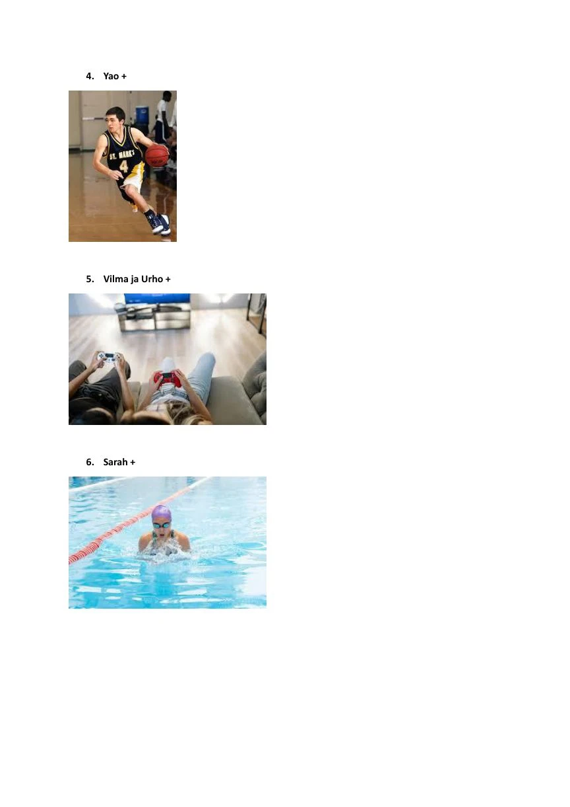
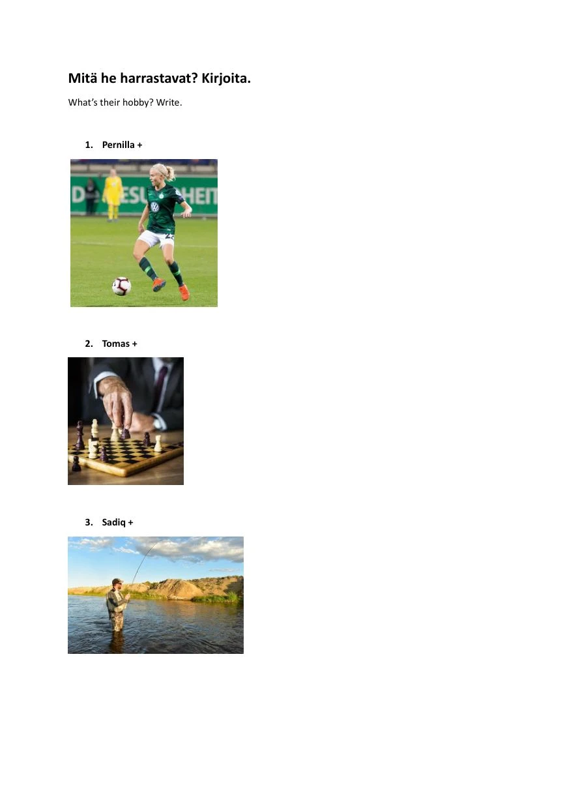
| Suomi | 中文 | English 说明 |
|---|---|---|
| harrastaa | 爱好、从事 | Harrastan tanssia = I do dance as a hobby. |
| harrastus | 爱好（名词） | A hobby as a thing: Minun harrastus on uinti. |
| tanssia | 跳舞（部分格） | Partitive object required by harrastaa. |
| jalkapallo → jalkapalloa | 足球 | Ball games take the partitive as object. |
| uinti → uintia | 游泳 | Action noun; partitive uintia. |
| hiihto → hiihtoa | 滑雪 | Action noun in -to. |
| elokuvan katsominen | 看电影 | Genitive object + -minen verbal noun. |
| musiikin kuuntelu | 听音乐 | Genitive + action noun kuuntelu. |
| pianon soitto | 弹钢琴 | Genitive + soitto. |
| lapsena | 小时候 | Essive of lapsi: as a child. |
| tulevaisuudessa | 在未来 | Inessive of tulevaisuus. |
| olen harrastanut | 我（曾经）爱好过 | Perfect: olla + -nut participle. |
| haluan harrastaa | 我想爱好 | haluta takes the plain infinitive. |
| pelata | 玩（球类） | Pelaan jalkapalloa kaksi kertaa viikossa. |
| usein, joskus | 经常、有时 | Frequency adverbs. |
| kerran viikossa | 一周一次 | kerran + viikossa (inessive). |
解：Olen harrastanut voimistelua lapsena. / Harrastan uintia nyt. / Haluan harrastaa hiihtoa tulevaisuudessa.
核对：三句宾语都是部分格（voimistelua、uintia、hiihtoa）；三句动词分别是完成体、现在时、情态 + 原形。
Katson elokuvaa illalla. 改写成以动名词作宾语的句子。解：对象 elokuva 变属格 elokuvan，动词 katsoa 变动名词 katsominen，作宾语时再变部分格 katsomista。整句：Harrastan elokuvan katsomista illalla.
更自然：Minun harrastus on elokuvien katsominen.（我的爱好是看电影，复数对象用 elokuvien）。两种都可，关键是属格 + -minen 的结构不能丢。
Mitä sinä harrastat?，要求用 pelata 与 harrastaa 各一句，并说明差别。解：Harrastan jalkapalloa ja sählyä.（我爱好足球和软式曲棍球）/ Pelaan jalkapalloa kaksi kertaa viikossa.（我一周踢两次足球。）
差别：harrastaa 说「这是长期爱好」，pelata 说「具体在玩」，后者常配频率短语。两句的宾语都用部分格。
Minä harrastan valokuvausta ja minä haluan harrastamaan judoa.解：第一句正确（valokuvaus → valokuvausta 是 -us 结尾加 -ta）。第二句错在 harrastamaan，haluan 后要接原形：Minä haluan harrastaa judoa.
规律：haluta、osata、voida 后接原形；tulla、mennä、lähteä 后接 -maan。这是两组情态 / 移动动词的分工。
- 写出十个爱好名词的芬兰语，并给每个加上
harrastaa所需的部分格形式。 - 用现在、童年、将来三种时态各写一句关于自己的爱好。
- 把下列句子改写成「属格 + 动名词」结构：
Kuuntelen musiikkia./Soitan pianoa./Piirrän kuvia. - 翻译：「我每周游两次泳，但我不喜欢跑步。」
- 写一段 5 句的访谈汇报：三个人各自爱好什么、频率如何、其中一人小时候练过什么。
答案与思路
1. 示例：jalkapallo → jalkapalloa；uinti → uintia；hiihto → hiihtoa；tanssi → tanssia；kuntosali → kuntosalia；valokuvaus → valokuvausta；käsityö → käsityötä；musiikki → musiikkia；teatteri → teatteria；keilaus → keilausta。
2. 示例：Harrastan uintia nyt. / Olen harrastanut tanssia lapsena. / Haluan harrastaa kiipeilyä tulevaisuudessa.
3. musiikin kuuntelu / pianon soitto / kuvien piirtäminen（复数对象用 kuvien）。若作宾语则动名词再变部分格：Harrastan musiikin kuuntelua.
4. Uin kaksi kertaa viikossa, mutta en pidä juoksemisesta. 「不喜欢跑步」用 pitää + -sta（第 11 讲），juokseminen 的 -sta 形式是 juoksemisesta。
5. 示例：Pernilla harrastaa ratsastusta kolme kertaa viikossa. Tomas pelaa jalkapalloa joka viikko. Sadiq on harrastanut judoa lapsena. He harrastavat myös ulkoilua. 注意第三人称单数与复数动词的一致性。
harrastaa + 部分格、三种时间层的问句与答句、属格 + -minen 的名词化结构。口语考试与写作都可能直接调用这些句型。Harrastan tanssi 缺部分格，是最常见的一处丢分。haluan harrastamaan 混用 -maan 与不定式。elokuvan katsominen 里忘掉属格：elokuva katsominen 不成立。Olen harrastanut … lapsena，并解释 -nut/-nyt 与元音和谐的关系。谈爱好清单
三时问答
- 现在：
Mitä harrastat?→Harrastan + 部分格 - 童年：
Mitä olet harrastanut lapsena?→Olen harrastanut + 部分格 - 将来：
Mitä haluat harrastaa tulevaisuudessa?→Haluan harrastaa + 部分格
名词化三步
- 找出动作对象，变属格（elokuva → elokuvan）
- 动词变 -minen / -u / -us 形式（katsoa → katsominen）
- 整体作宾语时，-nen 变 -se- 再加部分格（katsomista）
| 源文件 | 位置 | 覆盖知识点 |
|---|---|---|
| 07_Tunti 6/1_harrastukset.pdf | p1 | 二十余个爱好名词，含 elokuvan katsominen、musiikin kuuntelu、pianon soitto 三类名词化 |
| 07_Tunti 6/2_PUHU PARILLE.html | 全篇 3 问 | harrastaa + 部分格、三时间层问答模板、完成体 olen harrastanut |
| 07_Tunti 6/3_FI2, haastattelu harrastukset.docx | 全篇 | 访谈任务脚本：Anteeksi, saanko kysyä kolme kysymystä? 与三列表格 |
| 07_Tunti 6/4_Haastattelun tulokset.html | 全篇 | 汇报结果的表格框架与第三人称表述 |
| 07_Tunti 6/5_KOTITEHTÄVÄ … Mitä he harrastavat.pdf | p1–p2 | 六人爱好填写练习，用于练习第三人称单数/复数 |
| （补充） | 6.4、6.5 | 三种名词化手段的分类与频率副词清单为归纳性拓展，原文只给词表 |
| （跳过） | — | harrastukset.png 等插图不含语言点 |
第 7 讲 · 六类动词系统
The Six Verb Types 第 2 章 动词系统与爱好
本节定位
第七讲是全课程语法密度最高的一讲：把芬兰语六类动词的识别、词干推导、肯定与否定变位一次讲完。前六讲只用到第一类（-a/-ä）与零散的第二、三、四类形式（juoda、tulla、halata），这一讲把它们整理成一张可查的表。
材料明确写了三件事：类型按不定式结尾判定；每一类有固定的去尾加词尾规则；第三、四类要特别注意辅音交替的方向与第一类不同。把这三件事记牢，遇到生词也能现场推出变位。
学完本节你应当能够：
- 看到任意不定式，在 5 秒内判出它属于六类中的哪一类
- 按类型规则推导词干，并写出六个人称的肯定形式
- 写出六类动词的否定式，并说明为什么否定式只用一个词干
- 解释第三、四类的交替方向与第一类「hän/he 强级」的差别
- 处理
olla、mennä、nähdä、tehdä等高频不规则动词
7.1 为什么要分类型：识别靠结尾
芬兰语动词不能像英语那样「加 -s / -ed」通用处理，因为不同结尾的动词要去掉不同的尾巴。材料的分类标准只有一条：看不定式最后几个字母。
| 类型 | 不定式结尾 | 代表动词 |
|---|---|---|
| 第 1 类 | -a / -ä（前面是元音） | lukea, puhua, sanoa, ostaa, kirjoittaa, kysyä, yrittää, tietää, ymmärtää |
| 第 2 类 | -da / -dä | saada, juoda, tuoda, jäädä, tupakoida, syödä, luoda, imuroida |
| 第 3 类 | -la/-lä, -ra/-rä, -na/-nä, -sta/-stä | olla, tulla, ajatella, kävellä, panna, mennä, surra, nousta, ratkaista, opiskella, kuunnella, pestä |
| 第 4 类 | -ata/-ätä（也有 -uta, -ota, -eta, -itä） | avata, pelata, tavata, luvata, määrätä, kadota, halata, herätä, siivota |
| 第 5 类 | -ita/-itä | tarvita, valita, mainita, häiritä, hallita, merkitä |
| 第 6 类 | -eta/-etä（罕用） | vanheta, kylmetä, paeta, suureta, kyetä |
判断时的顺序很重要：先看是不是 -da/-dä（第 2 类），再看是不是 -sta/-stä（第 3 类），然后才看 -ta/-tä（第 4、5、6 类的分界）。因为 nousta 结尾是 -sta，属第 3 类，不能误判成第 4 类。
-ita/-itä 前面通常是单元音 i（tarvita、valita、häiritä）→ 第 5 类；-eta/-etä 表示「变成……」（vanheta、kylmetä、paeta）→ 第 6 类；其余 -ata/-ätä（前面是 a/ä 或辅音）→ 第 4 类。7.2 词干推导规则
材料对每一类都给了「Sääntö」（规则），可以直接抄成操作指令：
| 类型 | 规则 | 例：不定式 → 词干 |
|---|---|---|
| 第 1 类 | 去掉 -a / -ä | puhua → puhu；yrittää → yritä |
| 第 2 类 | 去掉 -da / -dä | juoda → juo；syödä → syö |
| 第 3 类 | 去掉 -la/-lä、-ra/-rä、-na/-nä、-sta/-stä，再加 -e | tulla → tule；mennä → mene；nousta → nouse |
| 第 4 类 | 去掉 -ta / -tä，再加 -a / -ä | halata → halaa；herätä → herää；tavata → tapaa |
| 第 5 类 | 去掉 -a / -ä，再加 -se | tarvita → tarvitse；valita → valitse |
| 第 6 类 | 去掉 -ta / -tä，再加 -ne | vanheta → vanhene；kylmetä → kylmene |
第 3 类的「加 -e」是本讲最容易被忽略的一步。以 tulla 为例：去掉 -la 得 tul，加 -e 得 tule-，然后加人称词尾得 tulen, tulet, tulee, tulemme, tulette, tulevat。如果不加 -e，就会写出 tuln 这种不存在的形式。
第 4 类的「加 -a/-ä」同样容易漏：halata 去掉 -ta 得 hala，再加 -a 得 halaa-，故 halaan（我拥抱）。只写 halan 是错的。
7.3 六类完整变位表
下面这张表把六类的肯定变位放在一起对照。注意每类的第三人称单数形态都不同：第 1、4 类是长元音，第 2 类不加长音，第 3、5、6 类是 -ee。
| 人称 | puhua (1) | juoda (2) | tulla (3) | halata (4) | tarvita (5) | vanheta (6) |
|---|---|---|---|---|---|---|
| minä | puhun | juon | tulen | halaan | tarvitsen | vanhenen |
| sinä | puhut | juot | tulet | halaat | tarvitset | vanhenet |
| hän | puhuu | juo | tulee | halaa | tarvitsee | vanhenee |
| me | puhumme | juomme | tulemme | halaamme | tarvitsemme | vanhenemme |
| te | puhutte | juotte | tulette | halaatte | tarvitsette | vanhenette |
| he | puhuvat | juovat | tulevat | halaavat | tarvitsevat | vanhenevat |
再补充材料里给的例词对照，方便按例类推：
| 动词 | minä | hän | he | 交替 |
|---|---|---|---|---|
| ommella (3) | ompelen | ompelee | ompelevat | ll → l |
| kerrata (4) | kertaan | kertaa | kertaavat | rr → r |
| yrittää (1) | yritän | yrittää | yrittävät | tt → t 只在弱级人称 |
| nukkua (1) | nukun | nukkuu | nukkuvat | kk → k 只在弱级人称 |
| olla (3) | olen | on | ovat | 不规则，单独记 |
| mennä (3) | menen | menee | menevät | nn → n |
| nousta (3) | nousen | nousee | nousevat | st → s |
| pestä (3) | pesen | pesee | pesevät | st → s |
| ajatella (3) | ajattelen | ajattelee | ajattelevat | tt → t |
| surra (3) | suren | suree | surevat | rr → r |
| panna (3) | panen | panee | panevat | nn → n |
| opiskella (3) | opiskelen | opiskelee | opiskelevat | ll → l |
| kuunnella (3) | kuuntelen | kuuntelee | kuuntelevat | nn → n |
| tavata (4) | tapaan | tapaa | tapaavat | v → p |
| luvata (4) | lupaan | lupaa | lupaavat | v → p |
| kadota (4) | katoan | katoaa | katoavat | d → t |
| siivota (4) | siivoan | siivoaa | siivoavat | 不交替 |
| herätä (4) | herään | herää | heräävät | t → ∅ |
| valita (5) | valitsen | valitsee | valitsevat | se 词干 |
| häiritä (5) | häiritsen | häiritsee | häiritsevät | se 词干 |
| paeta (6) | pakenen | pakenee | pakenevat | ne 词干 |
| kylmetä (6) | kylmenen | kylmenee | kylmenevät | ne 词干 |
7.4 否定式：六类共用一套规则
材料把否定式的做法与肯定式并列给出，结论是六类完全一样：ei 的变位形式 + 词干。也就是说，只要词干推对了，否定式不需要额外规则。
| 类型 | 词干 | 否定（minä） | 否定（hän） | 否定（he） |
|---|---|---|---|---|
| 1 puhua | puhu | en puhu | ei puhu | eivät puhu |
| 2 juoda | juo | en juo | ei juo | eivät juo |
| 3 tulla | tule | en tule | ei tule | eivät tule |
| 4 halata | halaa | en halaa | ei halaa | eivät halaa |
| 5 tarvita | tarvitse | en tarvitse | ei tarvitse | eivät tarvitse |
| 6 vanheta | vanhene | en vanhene | ei vanhene | eivät vanhene |
否定动词的六个人称：en, et, ei, emme, ette, eivät。这是唯一需要死记的否定词形组，且与第 5 讲一致。
材料还特别给了第 4 类的否定示范：halata → halaa，故 en halaa, et halaa, ei halaa, emme halaa, ette halaa, eivät halaa；kerrata → kertaa，故 en kertaa 等。注意这里否定式与第一人称肯定式同形（halaan 与 halaa 只差一个 n），不要混。
7.5 反向交替：第三、四类的特别注意
材料在两处加了同一句提醒：Muista käänteinen astevaihtelu! Infinitive is weak (heikko), conjugation strong (vahva)（记得反向交替！不定式与变位的强弱关系与第一类相反）。它的实际含义是：第三、四类的强级出现在不定式本身，变位形式反而取弱级；而第一类恰好相反，强级只留给 hän 与 he。
| 类型 | 不定式形态 | 变位形态（第一 / 第三人称） | 强弱关系 |
|---|---|---|---|
| 第 1 类 nukkua | nukkua（kk） | nukun（k）/ nukkuu（kk） | 强级只在 hän/he |
| 第 3 类 tulla | tulla（ll） | tulen（l）/ tulee（l） | 强级在不定式，变位取弱级 |
| 第 3 类 nousta | nousta（st） | nousen（s）/ nousee（s） | 同上 |
| 第 3 类 mennä | mennä（nn） | menen（n）/ menee（n） | 同上 |
| 第 4 类 herätä | herätä（t） | herään（无 t）/ herää（无 t） | 变位丢失 t，等同弱化 |
| 第 4 类 tavata | tavata（v） | tapaan（p）/ tapaa（p） | 变位反而出现强级 p |
为什么会有这种差别？因为第一类的词干在不定式里看不到交替信息（nukkua 的 kk 只在词干内部），要靠人称词尾的音节结构判断强弱；而第三、四类的不定式结尾本身就含交替对（-lla、-sta、-ta），去掉词尾时交替已经发生，变位形式直接继承交替后的结果。
tulla / ommella / mennä / nousta / pestä / surra / panna / ajatella 八个第三类例子基本覆盖了常见交替。7.6 高频不规则动词
有几组动词形式特殊，必须整块记：
| 动词 | 含义 | minä | hän | he | 说明 |
|---|---|---|---|---|---|
| olla | 是、在 | olen | on | ovat | hän 形式不延长词干元音 |
| mennä | 去 | menen | menee | menevät | 第三类，nn → n |
| tehdä | 做 | teen | tekee | tekevät | 词干 teke-，属第二类变体 |
| nähdä | 看见 | näen | näkee | näkevät | hd → k |
| käydä | 去一下、访问 | käyn | käy | käyvät | d → ∅ |
| tietää | 知道 | tiedän | tietää | tietävät | 第一类，t → d |
| ymmärtää | 理解 | ymmärrän | ymmärtää | ymmärtävät | 第一类，rt → rr |
| tupakoida | 吸烟 | tupakoin | tupakoi | tupakoivat | 第二类 -oida |
特别提醒 olla：hän on 只有一个 o，与其他第一类动词的「双写词干元音」完全不同；he ovat 也不是 ovat 之外的什么形式。这两处是笔试题的高频陷阱。
7.7 分类练习的解题流程
材料的配对作业给了一串动词要求归入六类：HÄIRITÄ, HALATA, SYÖDÄ, UNOHTAA, SUURETA, ASUA, NOUSTA, HERÄTÄ, PELATA, TARVITA, TUODA, SANOA, PANNA, TUPAKOIDA, LAKATA, KANTAA, YMMÄRTÄÄ, SURRA, VANHETA, VALITA, VISKATA, OSTAA, KÄVELLÄ, KYETÄ, RAKASTAA, HALLITA, LYÖDÄ, OPISKELLA, JUODA, PAETA, MERKITÄ, PURRA, SIIVOTA, PESTÄ, PUHUA, LUODA。
- 读结尾：-da/-dä → 第 2 类（syödä, tuoda, juoda, lyödä, luoda, tupakoida）
- 结尾 -sta/-stä → 第 3 类（nousta, pestä）；-la/-lä、-ra/-rä、-na/-nä → 第 3 类（olla 类、surra、purra、panna）
- 结尾 -ita/-itä → 第 5 类（häiritä, tarvita, valita, hallita, merkitä）
- 结尾 -eta/-etä → 第 6 类（suureta, vanheta, paeta, kyetä）
- 其余 -ata/-ätä、-ota、-uta → 第 4 类（halata, herätä, pelata, lakata, viskata, siivota）
注意几个容易误判的：unohtaa 结尾是 -aa（第一类）；kantaa 也是第一类；opiskella、kävellä 是第三类；sanoa、asua、ostaa、rakastaa、puhua 是第一类。
tarvita 当第四类：en tarvia 错，应为 en tarvitse。en tul、hän tullee 都错。六类动词按不定式结尾判型：1 类 -a/-ä（puhua）、2 类 -da/-dä（juoda）、3 类 -la/-na/-ra/-sta（tulla, mennä, nousta）、4 类 -ata/-ätä（halata, tavata）、5 类 -ita/-itä（tarvita）、6 类 -eta/-etä（vanheta）。词干推导各有一步易漏：3 类去尾后加 -e（tulla→tule-，否则会造出 tuln），4 类去 -ta 后加 -a/-ä（halata→halaa-），5 类加 -se（tarvita→tarvitse-），6 类加 -ne。第三人称单数形态因类而异：1、4 类拉长元音（puhuu, halaa），2 类不加长（juo），3、5、6 类用 -ee（tulee, tarvitsee, vanhenee）。否定式六类通用 ei + 词干。交替方向要分清：第一类强级在 hän/he，第三、四类相反——不定式强、变位弱（nous(a)→nousen，st→s）。高频不规则 olla→olen/on/ovat、tehdä→teen/tekee、nähdä→näen/näkee 需整块记。
原版图页（源 PDF 插图页）
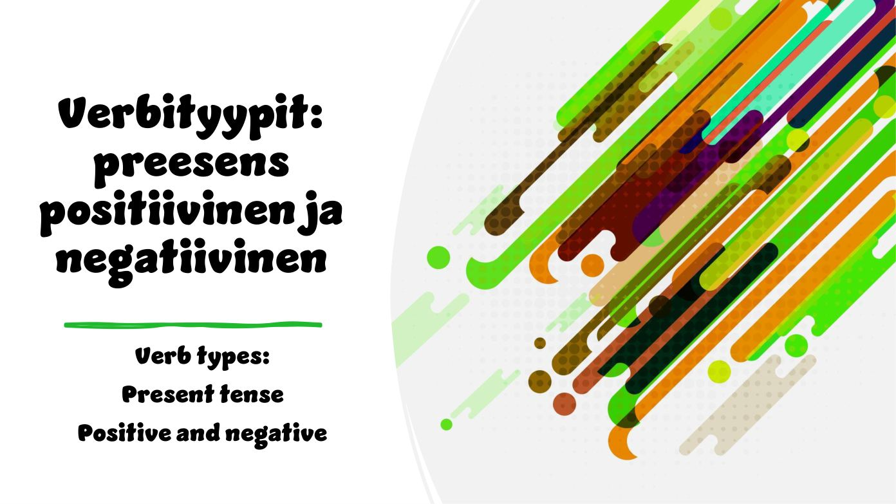
| Suomi | 中文 | English 说明 |
|---|---|---|
| verbityyppi | 动词类型 | Six verb types defined by the infinitive ending. |
| infinitiivi | 不定式 | The dictionary form: puhua, juoda, tulla. |
| vartalo | 词干 | The stem that endings are added to. |
| -a / -ä | 第一类结尾 | Type 1: drop -a/-ä, e.g. puhua → puhu-. |
| -da / -dä | 第二类结尾 | Type 2: drop -da/-dä, e.g. juoda → juo-. |
| -la / -na / -ra / -sta | 第三类结尾 | Type 3: drop the ending and add -e, e.g. tulla → tule-. |
| -ata / -ätä | 第四类结尾 | Type 4: drop -ta/-tä and add -a/-ä, e.g. halata → halaa-. |
| -ita / -itä | 第五类结尾 | Type 5: drop -a/-ä and add -se, e.g. tarvita → tarvitse-. |
| -eta / -etä | 第六类结尾 | Type 6: drop -ta/-tä and add -ne, e.g. vanheta → vanhene-. |
| juon | 我喝 | Type 2: juoda → juo- + n. |
| tulen | 我来 | Type 3: tulla → tule- + n. |
| tarvitsen | 我需要 | Type 5: tarvita → tarvitse- + n. |
| vanhenen | 我变老 | Type 6: vanheta → vanhene- + n. |
| käänteinen astevaihtelu | 反向交替 | Types 3 and 4: the infinitive carries the strong grade. |
| olla → on, ovat | 是（第三人称） | Irregular: no lengthened vowel, no -vat. |
| eivät | 他们不 | Negative verb for the 3rd person plural. |
opiskella（学习）属于哪一类？写出六个人称。解：结尾 -lla，属第 3 类。去 -la 加 -e 得词干 opiskele-。六个人称：opiskelen, opiskelet, opiskelee, opiskelemme, opiskelette, opiskelevat。
交替：ll → l，所以变位形式只有一个 l，不定式有两个 l。否定：en opiskele。
tavata 与 herätä 变位，并说明两者交替方向为何不同。解：tavata（第 4 类）→ 词干 tapaa-：tapaan, tapaat, tapaa, tapaamme, tapaatte, tapaavat，其中 v → p 是「变位出现强级」。herätä（第 4 类）→ 词干 herää-：herään, heräät, herää, heräämme, heräätte, heräävät，其中 t 完全消失。
说明：同类动词也可能走向不同方向，所以第 4 类的交替必须按词记。材料用 halata → halaan、kerrata → kertaan 两组示范了「丢 t」与「rr → r」两种。
Hän ei tarvitse 与 Hän ei tarvitsee；He ei opiskele。解：第一组 Hän ei tarvitse 正确，否定式用词干，不加第三人称的元音延长（tarvitsee 是肯定式）。第三句错在 ei：he 对应 eivät，应为 He eivät opiskele。
核心：否定式只有两层结构——否定词负责人称，主动词只负责词干。任何「主动词也变人称」的写法都错。
解：Huomenna me emme mene kouluun, me opiskelemme kotona.
核对：mennä 第三类，否定 emme mene；opiskella 第三类，肯定 me 形式 opiskelemme；kouluun 是 illative（去某处）；kotona 是 essive（在家，固定说法）。
- 判断类型并写出词干：
puhua、juoda、mennä、halata、tarvita、vanheta、nousta、valita、paeta、siivota。 - 变位
tulla、tarvita、vanheta的六个人称（肯定与否定各一组）。 - 改错：
Minä tarvia apua./Hän ei tul./He ei puhu./Me opiskellemme. - 翻译：「他不会说芬兰语，但他每天都在学。」
- 从材料配对作业里选 12 个动词，按六类分组（每类至少一个）。
答案与思路
1. puhua（1，puhu-）、juoda（2，juo-）、mennä（3，mene-）、halata（4，halaa-）、tarvita（5，tarvitse-）、vanheta（6，vanhene-）、nousta（3，nouse-）、valita（5，valitse-）、paeta（6，pakene-）、siivota（4，siivoa-）。
2. tulla：tulen / tulet / tulee / tulemme / tulette / tulevat；en / et / ei / emme / ette / eivät tule。tarvita：tarvitsen / tarvitset / tarvitsee / tarvitsemme / tarvitsette / tarvitsevat；en tarvitse 等。vanheta：vanhenen / vanhenet / vanhenee / vanhenemme / vanhenette / vanhenevat；en vanhene 等。
3. tarvia → tarvitsen；ei tul → ei tule；He ei puhu → He eivät puhu；opiskellemme → opiskelemme。
4. Hän ei puhu suomea, mutta hän opiskelee sitä joka päivä. 注意 sitä 是 se 的部分格（指代 suomea）。
5. 示例：1 类 puhua、ostaa；2 类 juoda、tuoda；3 类 mennä、nousta；4 类 halata、herätä；5 类 tarvita、valita；6 类 vanheta、paeta。
PILATA、mennä、ostaa）是本课程最固定的题型。en tul、hän hala。-sta 结尾的动词判成第四类：nousta 是第三类。olla 的 hän / he 形式：on、ovat，既不延长也不加 -vat。六类动词操作清单
判类型三步
- 先查 -da/-dä → 第 2 类
- 再查 -la/-lä、-ra/-rä、-na/-nä、-sta/-stä → 第 3 类
- 然后按 -ita（5 类）、-eta（6 类）、-ata（4 类）、其余 -a/-ä（1 类）分流
写形式三步
- 按类型规则得词干（第 3 类加 -e，第 5 类加 -se，第 6 类加 -ne，第 4 类加 -a/-ä）
- 加人称词尾：n / t / 长元音或 -ee / mme / tte / vat-vät
- 否定式只留词干，人称交给 en / et / ei / emme / ette / eivät
| 源文件 | 位置 | 覆盖知识点 |
|---|---|---|
| 08_Tunti 7/1_verbit + astevaihtelu.docx | 全篇 | 六类定义与规则、第三类加 -e、第四类加 -a、反向交替提醒、LAULAA/ANTAA/SYÖDÄ/LUODA/TULLA/KUUNNELLA/HERÄTÄ/LEIKATA/MAINITA/HÄIRITÄ/KYLMETÄ 练习表 |
| 08_Tunti 7/2_Verbityypit, pos+neg.pdf | p2–p4 | 六类代表动词、六类肯定与否定完整变位（含 ommella、kerrata、halata、vanheta） |
| 08_Tunti 7/3_PARITYÖ Mikä verbityyppi_.html | 全篇 36 词 | 分类练习词表与操作指令 |
| （补充） | 7.3、7.6 | 不规则动词表（olla、tehdä、nähdä、käydä、tietää）为归纳性拓展，原文只在例句中出现 |
| （跳过） | — | 1_verbit 中的手写填空横线为练习版面，答案已在讲义表格中给出 |
第 3 章 食物、格与部分格 3 讲 章节页 →
第 8 讲 · 食物词汇与购物场景
Food Vocabulary and Shopping 第 3 章 食物、格与部分格
本节定位
第八讲是词汇量最大的一讲，也是第一次把「格」放进真实场景里用：在商店里问「鸡蛋在哪」，答句要用内格（kylmäaltaassa）；说「两袋胡萝卜」要用部分格复数（porkkanoita）；说「蔬菜货架」要用属格复数（vihannesten）。
它同时为第 9、10 讲的格系统做预备：本讲出现的 kananmunat（主格复数）、porkkanoita（部分格复数）、perunoiden（属格复数）正好是三种复数形式的样本，先见词形，再学规则。
学完本节你应当能够：
- 说出六类以上食物词汇共四十个词，并区分可数名词与不可数名词
- 在商店里用
Missä teillä on …?问位置，并听懂kylmäaltaassa、samassa hyllyssä这类答句 - 为可数名词造出主格复数、部分格复数、属格复数三种形式
- 正确使用
ostoksilla、kaupassa、kassalla等购物场景固定说法 - 读懂乳制品包装上的
rasvaton / kevyt / laktoositon等标记
8.1 食物词汇：按类别记
材料的词汇表与厨房图词表加起来约七十个词。按类别分组记忆，比按字母背效率高得多。
| 类别 | 词汇 | 中文 |
|---|---|---|
| 水果 hedelmä | banaani, omena, appelsiini, sitruuna, päärynä, viinirypäle | 香蕉、苹果、橙子、柠檬、梨、葡萄 |
| 浆果 marja | mansikka, kirsikka, vadelma, mustikka, puolukka, lakka/hilla | 草莓、樱桃、覆盆子、蓝莓、越橘、云莓 |
| 蔬菜 kasvis / vihannes | sipuli, valkosipuli, porkkana, peruna, paprika, tomaatti, kurkku, salaatti | 洋葱、大蒜、胡萝卜、土豆、彩椒、番茄、黄瓜、生菜 |
| 面包与糕点 | patonki, ruisleipä, vaalea leipä, karjalanpiirakka, sämpylä, pulla, kakku, piirakka, munkki, keksi | 法棍、黑麦面包、白面包、卡累利阿派、小圆面包、甜面包、蛋糕、派、甜甜圈、饼干 |
| 米面与粥 | puuro, keitto, spagetti/makaroni, riisi, jauho | 粥、汤、意面、米、面粉 |
| 肉与鱼 | makkara, nakki, naudanliha, sianliha, kana/broileri, kala, jauheliha, kinkku | 香肠、小香肠、牛肉、猪肉、鸡肉、鱼、肉馅、火腿 |
| 乳制品 | maito, juusto, voi, margariini, jogurtti, rahka, kermavaahto, viili, piimä, kananmuna | 牛奶、奶酪、黄油、人造黄油、酸奶、凝乳、奶油、酸牛奶、酪乳、鸡蛋 |
| 饮料 | vesi, mehu, kahvi, tee, olut, siideri, limsa, kaakao, punaviini, valkoviini, kivennäisvesi | 水、果汁、咖啡、茶、啤酒、苹果酒、汽水、可可、红葡萄酒、白葡萄酒、矿泉水 |
| 调味与甜食 | sokeri, suola, pippuri, öljy, ketsuppi, hillo, suklaa, karkki, jäätelö | 糖、盐、胡椒、油、番茄酱、果酱、巧克力、糖果、冰淇淋 |
| 餐具 | lasi, servetti, lautanen, lusikka, haarukka, veitsi, kuppi, muki, kulho | 杯子、餐巾、盘子、勺子、叉子、刀、茶杯、马克杯、碗 |
| 厨房 | jääkaappi, kylmäallas, hylly, kassa | 冰箱、冷藏柜、货架、收银台 |
三个上位词要会区分：hedelmä（水果）、marja（浆果）、kasvis / vihannes（蔬菜）。herkku 是「美味 / 珍馐」，leivonnainen 是「糕点类」，两个词在食品包装上常见。
8.2 可数与不可数：决定用哪种格
食物名词分两类，这直接决定「买 / 吃」时用哪种形式：
| 类型 | 例子 | 常见形式 |
|---|---|---|
| 可数（能一个个数） | kananmuna, porkkana, peruna, omena, sämpylä, pizza | 单数主格 / 部分格单数 / 部分格复数：kananmuna, kananmunaa, kananmunia |
| 不可数（液体、粉末、糊状） | vesi, maito, kahvi, tee, riisi, jauho, sokeri, öljy, jäätelö, liha | 通常只用部分格单数：vettä, maitoa, riisiä, jauhoa |
所以「我喝水」是 Juon vettä，「我吃一个鸡蛋」是 Syön kananmunan（总格，整颗吃完），「我吃些鸡蛋」是 Syön kananmunia（部分格复数）。这三句的差别正是第 10 讲要展开的「部分格与总格对立」。
8.3 购物对话：逐句拆解
材料的购物场景是一段真实对话，每句都有可复用的句型：
| 原句 | 中文 | 语法点 |
|---|---|---|
| Hei anteeksi! | 你好，打扰一下！ | 口语招呼 + 礼貌打断 |
| Missä teillä on kananmunat? | 你们这儿鸡蛋放在哪？ | teillä 是 te 的 -lla 形式，表「你们店里」；kananmunat 主格复数 |
| Ne ovat kylmäaltaassa. | 它们在冷藏柜里。 | ne 指复数物；kylmäallas → kylmäaltaassa（内格，ssa 前有 t→∅ 类变化） |
| Tarvitsetko jotain muuta? | 还需要别的吗？ | tarvita 第五类 + -ko；jotain 部分格 |
| Ei mitään, kiitos. | 不用了，谢谢。 | mitään 否定句里的部分格 |
| Missä porkkanat ovat? | 胡萝卜在哪？ | 复数主语配 ovat |
| Ne ovat samassa hyllyssä. | 在同一个货架上。 | hylly → hyllyssä（内格） |
| Missä jäätelö on? | 冰淇淋在哪？ | 不可数名词用单数 on |
| Jäätelö on kylmäaltaassa. | 冰淇淋在冷藏柜里。 | 单数主语配 on |
| Kiitos tuhannesti! | 万分感谢！ | tuhannesti 是 tuhat 的副词化形式 |
| Mukavaa iltaa! | 晚上愉快！ | 祝愿句用部分格 iltaa |
这段对话有两个观察值得记住。第一，复数主语用 ovat，单数主语用 on，即使问的是「在哪」也一样：Missä kananmunat ovat? / Missä jäätelö on?。第二，teillä（你们这儿）与 minulla（我这儿）同属 -lla 系列，表示「在某人 / 某店这里」，这是第 1 讲存在句的延伸。
8.4 三种复数形式：主格、部分格、属格
材料在词表里特意标出了三种复数，用括号提示词形：
| 单数 | 主格复数 | 部分格复数 | 属格复数 |
|---|---|---|---|
| kananmuna | kananmunat | kananmunia | kananmunien |
| porkkana | porkkanat | porkkanoita | porkkanoiden |
| peruna | perunat | perunoita | perunoiden |
| vihannes | vihannokset | vihannoksia | vihannesten |
| omena | omenat | omenoita | omenoiden |
| sämpylä | sämpylät | sämpylöitä | sämpylöiden |
三条规律可以先记住：
- 主格复数：单数词干 +
-t（kananmuna → kananmunat）。这是最规则的一种。 - 部分格复数：以 a/ä 结尾的词常变
-oita/-öitä（porkkana → porkkanoita），以 i 结尾常加-eja（tuoli → tuoleja），以 o/ö/u/y 结尾常加-ja/-jä（koulu → kouluja）。 - 属格复数：常见
-(j)en、-den、-ten三种（perunoiden、vihannesten、kananmunien）。
材料在 Ruokaostoksilla 词表里用括号标注了这些形式，是有意提醒：在商店里说话，最常用的是部分格复数（Ostan porkkanoita），而不是主格复数。主格复数只用于「这些胡萝卜（作为整体主语）」：Porkkanat ovat tuoreita（胡萝卜是新鲜的）。
8.5 购物场景的地点格
在店里描述位置，几乎全用内格 -ssa/-ssä，因为商品在容器、柜子、货架「里面」：
kaupassa—— 在商店里（kauppa → kaupassa，pp → p）。kylmäaltaassa—— 在冷藏柜里（kylmäallas → kylmäaltaassa）。hyllyssä—— 在货架上（hylly → hyllyssä）。samassa hyllyssä—— 在同一个货架上。vieressä—— 在旁边（后置词用法，需属格：maidon vieressä）。kassalla—— 在收银台（kassa用 -lla，因为「在柜台前」是表面关系）。täällä—— 在这里（副词）。
注意 kassalla 与 kassassa 的差别：前者是「在收银台那儿（结账）」，后者字面是「在收银机里面」，日常只用前者。这类「建筑 / 设施用 -lla」的习惯与第 4 讲的 salilla 一致。
8.6 购物相关动词与短语
| 短语 | 含义 | 说明 |
|---|---|---|
| ruokaostoksilla | 在买食品 | ostoksilla 是复数 adessive，固定说法 |
| mennä ostoksille | 去买东西 | -lle 表方向：hän menee ostoksille |
| käydä salilla | 去健身房 | hän käy salilla，注意 käydä 后接 -lla |
| kuitenkin | 然而、还是 | 转折副词 |
| hänelle | 给他 / 她 | hän 的 -lle 形式 |
| vieras | 客人 | 名词；也可作形容词「陌生的」 |
| tietää | 知道 | hän ei tiedä 否定式 |
| missä asiat ovat | 东西在哪里 | asiat 复数主语 + ovat |
| kananmunat | 鸡蛋（复数） | 主格复数 |
| vihannes (vihannesten) | 蔬菜（属格复数） | 用于「蔬菜货架」等复合表达 |
| vieressä | 在旁边 | 需属格修饰：kananmunien vieressä |
| Ei mitään! | 没什么 / 不用谢 | 否定句固定答语 |
| Tarvitsetko jotain muuta? | 还需要别的吗？ | 店员标准问句 |
| Kiitos tuhannesti! | 万分感谢 | 口语强化感谢 |
| Mukavaa iltaa! | 晚上愉快 | 告别祝愿 |
这段词表里还有两个语法点值得单独看：käydä salilla 与 mennä ostoksille 展示了同一动词族的方向对立（-lla 表「在某活动 / 场所」，-lle 表「朝某活动去」）；vieressä 则要求前面的名词用属格，属第 9 讲的后置词搭配。
8.7 乳制品标签与饮食标记
材料在乳制品栏给了四个包装常用词，购物时非常实用：
rasvaton—— 脱脂（fat free）。kevyt—— 低脂（low fat）。täysmaito—— 全脂奶。laktoositon—— 无乳糖。
第 11 讲还会补充餐厅菜单上的饮食标记 G / VL / L / M / V，本讲先记住这四个乳制品词即可，它们都以 -ton/-tön（「无……」）或形容词形式出现。
8.8 常见错误
kaksi kananmunat 错，应为 kaksi kananmunaa（2 以上接部分格单数）。maitoja 在商店里几乎不用，说「一些牛奶」是 maitoa。Missä kananmunat on? 单复数不一致，应为 ovat。Missä X on / ovat?；答位置 → X on / ovat + 内格；被问还需什么 → Ei mitään, kiitos。三句就能完成一次购物。食物分可数与不可数，直接决定格：不可数的 maito, vesi, riisi, jäätelö 通常只用部分格单数（Juon maitoa）；可数的 kananmuna 三形并立——kananmunat（主格复数）、kananmunia（部分格复数）、kananmunien（属格复数）。数词 2 以上仍接部分格单数：kaksi kananmunaa，不是 kaksi kananmunat。购物对话三句撑全场：问 Missä teillä on kananmunat?（teillä 是 -lla「你们店里」，鸡蛋主格复数）、答 Ne ovat kylmäaltaassa（内格，复数主语配 ovat）、收 Ei mitään, kiitos。商品在柜子货架「里面」用内格 hyllyssä、kaupassa（pp→p），但在收银台用 kassalla（设施用上格，同 salilla）。kylmäallas→kylmäaltaassa 有词干交替。乳制品标签 rasvaton（脱脂）、kevyt（低脂）、laktoositon（无乳糖）购物时实用。
真实超市高频表达：找东西 Missä maito on?（牛奶在哪）；称重 Täytyy punnittua（需要自己称——蔬果区自己打印价签）；结账 Viivakoodi tänne（条码放这里）、Pussi maksaa（袋子收费，自备或买）；自助收银 Itsepalvelukassa。芬兰超市周日也开门、晚上 21–23 关门，节日前会提前挤爆——把这几句和营业时间一起记，第二天就能用。
原版图页（源 PDF 插图页）

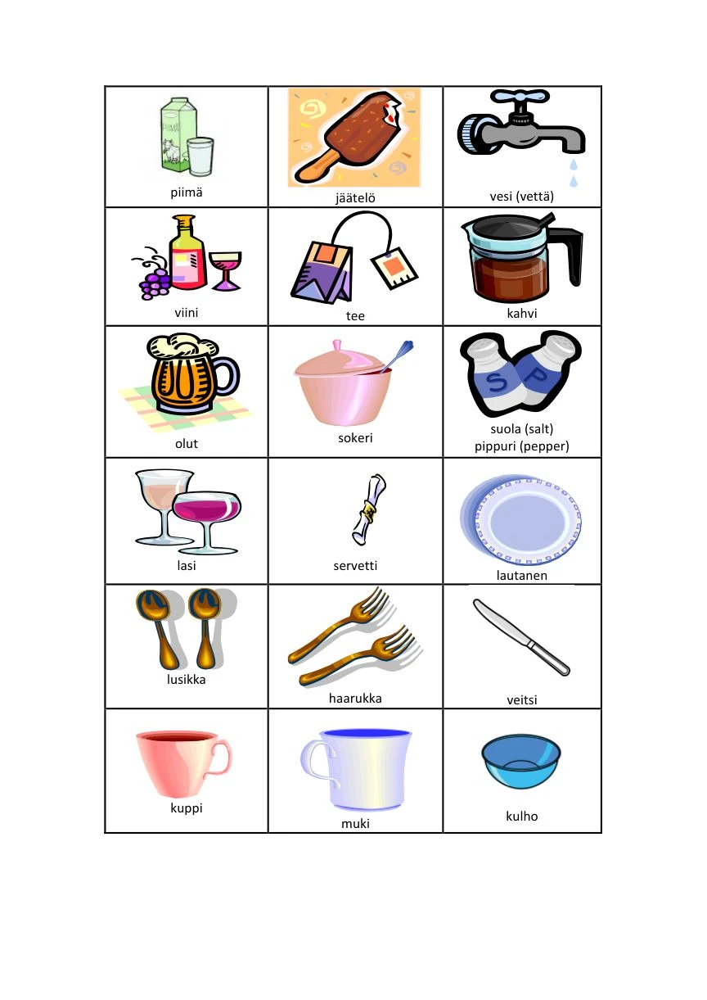

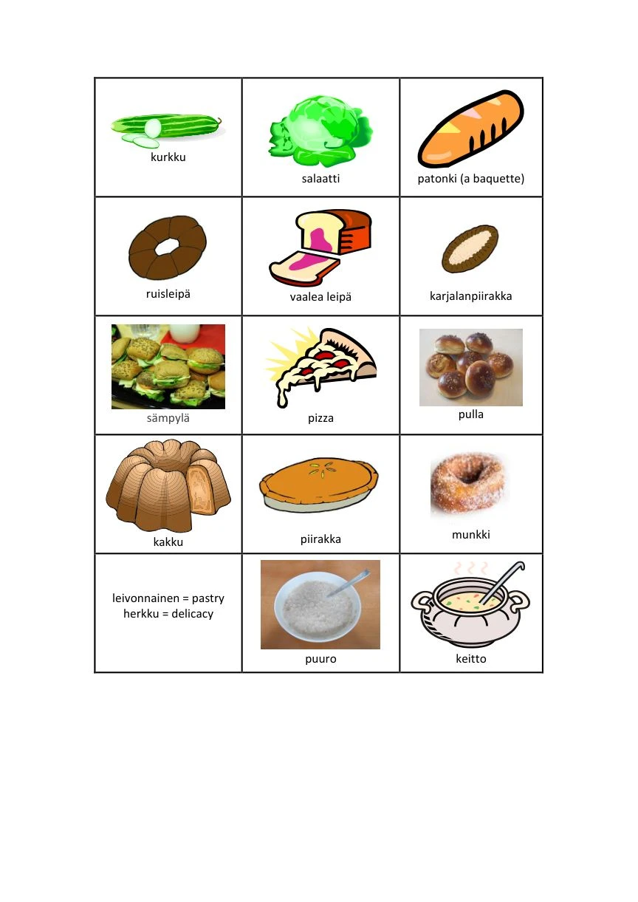


听力与视频材料（本地可播）
preload="none" 表示打开页面不会自动下载，点播放才开始加载。听力技巧：第一遍抓大意，第二遍跟读，第三遍听写关键词。| Suomi | 中文 | English 说明 |
|---|---|---|
| ruoka | 食物 | Food; partitive ruokaa after eating verbs. |
| ruokaostoksilla | 在买食品 | Doing grocery shopping; ostoksilla is a fixed plural adessive. |
| hedelmä | 水果 | Fruit as a category. |
| marja | 浆果 | Berry; mansikka, mustikka, vadelma. |
| vihannes | 蔬菜 | Vegetable; genitive plural vihannesten. |
| maito | 牛奶 | Uncountable: maitoa. |
| leipä | 面包 | leipää in the partitive. |
| kananmuna | 鸡蛋 | kananmunat (nom. pl.), kananmunia (part. pl.). |
| porkkana | 胡萝卜 | porkkanoita in the partitive plural. |
| peruna | 土豆 | perunoiden in the genitive plural. |
| jäätelö | 冰淇淋 | jäätelöä, partitive only. |
| kylmäallas | 冷藏柜 | kylmäaltaassa = in the cold cabinet. |
| hylly | 货架 | hyllyssä (inside the shelf) or hyllyllä (on the shelf). |
| kassa | 收银台 | kassalla = at the checkout. |
| ostos | 购物、购买物 | mennä ostoksille = to go shopping. |
| laktoositon | 无乳糖 | Lactose free; G, VL, L, M, V are diet labels. |
| rasvaton | 脱脂 | Fat free; kevyt = low fat. |
解：Minä ostan kaupassa porkkanoita, perunoita ja kananmunia.
核对：porkkana → porkkanoita（a → oita）；peruna → perunoita；kananmuna → kananmunia（a → ia，因为词干以 n 结尾的复合词按 muna 变化）。三个宾语都是部分格复数，因为买的是「一些」，不是全部库存。
解：Juusto on kylmäaltaassa. 若要更具体：Juusto on kylmäaltaan toisella hyllyllä.（奶酪在冷藏柜第二层货架上。）
语法点：kylmäaltaan 是属格（修饰 hylly），hyllyllä 是 -lla，因为「在某一层货架的表面」用上格；而「在货架内部空间」用 hyllyssä。两种说法都对，取决于把货架看成面还是空间。
Ostan kaksi porkkanaa 与 Ostan kaksi porkkanaa ja yhden sipulin 的格。解：两句的 porkkanaa 都是部分格单数，因为数词 2 后面接部分格单数。第二句的 sipulin 是总格（属格形），因为数词 1 后面接主格 / 总格，不用部分格。
规则：1 → 主格（或总格宾语 -n）；2 以上 → 部分格单数；不定量 → 部分格。这是第 10 讲的核心之一。
Missä on kananmunat? Ne on kylmäaltaassa.解：两处：kananmunat 是复数，谓语应为 ovat；答句同样。改后：Missä kananmunat ovat? Ne ovat kylmäaltaassa.
延伸：若问单个物品 Missä maito on?，答 Se on kylmäaltaassa（se 指单数物）。代词的数必须跟名词一致。
- 把下列食物按「水果 / 蔬菜 / 乳制品 / 肉鱼 / 主食」分类，各写出至少四个芬兰语词。
- 写出
porkkana、peruna、kananmuna、omena的主格复数、部分格复数、属格复数。 - 翻译对话：「打扰一下，牛奶在哪里？」「在冷藏柜里，奶酪旁边。」「谢谢！」
- 改错：
Ostan kolme porkkanat./Missä jäätelö ovat?/Juon maito. - 写一段 5 句的购物清单说明：你要买什么、各买多少、为什么。
答案与思路
1. 水果：omena, banaani, appelsiini, päärynä；蔬菜：porkkana, peruna, sipuli, tomaatti；乳制品：maito, juusto, jogurtti, voi；肉鱼：kana, kala, makkara, jauheliha；主食：leipä, riisi, makaroni, puuro。
2. porkkana：porkkanat / porkkanoita / porkkanoiden；peruna：perunat / perunoita / perunoiden；kananmuna：kananmunat / kananmunia / kananmunien；omena：omenat / omenoita / omenoiden。
3. Anteeksi, missä maito on? — Se on kylmäaltaassa, juuston vieressä. — Kiitos! 注意 juuston 属格（后置词 vieressä 要求）。
4. kolme porkkanat → kolme porkkanaa；jäätelö ovat → jäätelö on（不可数）；Juon maito → Juon maitoa。
5. 示例：Minä menen kauppaan. Ostan maitoa, leipää ja kuusi kananmunaa. Ostan myös porkkanoita ja perunoita. En osta karkkia, koska se on kallista. Kaikki maksaa noin kaksikymmentä euroa.
Missä … on / ovat 的单复数一致、部分格复数的用法。kaksi omenat 错，应为 kaksi omenaa。maitoja、vesiä 在购物语境下不自然。Missä kananmunat on? 单复数不一致。hyllyssä 与 hyllyllä 的语义差别（空间内 vs 表面上），并解释 kassalla 为何用 -lla。购物场景清单
问与答
- 问位置：
Missä X on?（单数）/Missä X:t ovat?（复数） - 答位置：
X on / X:t ovat + 内格（kylmäaltaassa、hyllyssä） - 被问还需什么：
Ei mitään, kiitos或Kyllä, kiitos
数量与格
- 1 个 → 主格 / 总格：yhden sipulin
- 2 个以上 → 部分格单数：kaksi porkkanaa
- 不确定多少 → 部分格复数：porkkanoita
- 不可数 → 部分格单数：maitoa、jauhoa
| 源文件 | 位置 | 覆盖知识点 |
|---|---|---|
| 09_Tunti 8/1_Kotitehtävä … Ruokaostoksilla.docx | 全篇 26 词条 | 购物对话关键词：ruokaostoksilla、ostoksille、kuitenkin、vieressä、kylmäallas、kassa、tarvitsetko jotain muuta |
| 09_Tunti 8/3_PUHU PARILLE Ruokaostoksilla.html | 全篇 6 问 | 对话理解题：Jutta 做什么、东西在哪里、谁帮忙 |
| 09_Tunti 8/4_Ruokasanasto2022.pdf | p1–p4 | 食物词汇全表：水果、浆果、蔬菜、面包糕点、肉鱼、乳制品及四个乳制品标签、餐具 |
| 09_Tunti 8/5_Ruokakuvat.pdf | p1–p2 | 厨房与冰箱词表：jääkaappi、kylmäallas 相关词、饮料与调味品 |
| （补充） | 8.4 | 三种复数的规律化总结属归纳性拓展，原文只以括号形式给出词形 |
| （跳过） | — | Ruokakuvat 与 Ruokasanasto 的图片本身不含语言点，仅作词汇索引 |
第 9 讲 · 格系统与属格
The Case System and the Genitive 第 3 章 食物、格与部分格
本节定位
第九讲第一次把「格」当成系统讲。前面八讲已经零散用过 -sta、-ssa、-lla、-na、-lta、-hVn，这一讲先用一张总表把它们归位，再把主格与属格讲透——尤其是属格里的辅音交替方向，这是从第 5 讲延续下来的同一套机制。
属格之所以重要，是因为它不只表示「谁的」：Annan mies（安娜的丈夫）、suomen tunti（芬兰语课）、kahvin vieressä（咖啡旁边）、elokuvan katsominen（看电影）都是属格。第 6 讲的名词化结构在这里得到解释。
学完本节你应当能够：
- 说出芬兰语主要格的数量与分工，并给每个格一个例词
- 为主格单数造出属格单数，正确处理元音结尾、辅音结尾与辅音交替三种情况
- 背出六个人称代词的属格形式，并说出对应的口语缩短形式
- 为主格单数造出属格复数（-en / -den / -ten 三类）
- 在正式语体里加所有格后缀（kirjani、kirjasi、kirjamme），并知道口语通常不加
9.1 芬兰语的格：为什么必须系统学
材料第一句就给了一个数字：In Finnish language, we have 15 noun cases. 十五个格听起来可怕，但它们的构造高度规则：绝大多数格 = 词干 + 格词尾，而词干本身只有强、弱两种形态。
| 格 | 问什么 | 词尾 | 例：talo（房子） | 例：kirja（书） |
|---|---|---|---|---|
| nominatiivi 主格 | kuka? mikä? | —（单数）；-t（复数） | talo | kirja |
| genetiivi 属格 | kenen? minkä? | -n | talon | kirjan |
| akkusatiivi 宾格 | kenet? minkä? | -n（单数同属格） | talon | kirjan |
| partitiivi 部分格 | ketä? mitä? | -a/-ä, -ta/-tä, -tta/-ttä | taloa | kirjaa |
| essiivi 样格 | minä?（作为什么） | -na/-nä | talona | kirjana |
| translatiivi 转变格 | miksi?（变成什么） | -ksi | taloksi | kirjaksi |
| inessiivi 内格 | missä? | -ssa/-ssä | talossa | kirjassa |
| elatiivi 出格 | mistä? | -sta/-stä | talosta | kirjasta |
| illatiivi 入格 | mihin? | -hVn / -Vn | taloon | kirjaan |
| adessiivi 上格 | millä? | -lla/-llä | talolla | kirjalla |
| ablatiivi 离格 | miltä? | -lta/-ltä | talolta | kirjalta |
| allatiivi 向格 | mille? | -lle | talolle | kirjalle |
| abessiivi 缺格 | ilman mitä? | -tta/-ttä | talotta | kirjatta |
| komitatiivi 伴随格 | minkä kanssa? | -ine-（仅复数） | taloineen | kirjoineen |
| instruktiivi 工具格 | millä keinolla? | -in（多复数） | taloin | kirjoin |
本课程重点在五个格：主格、属格、部分格（本讲与第 10 讲）、内格 / 出格（第 1、8 讲）、上格 / 向格 / 从格（第 2、3、4 讲）。其余格只作识别，不必主动产出。
9.2 主格：词典形式与复数 -t
主格单数就是词典里的形式：kissa、opiskelija、kirja。主格复数加 -t：kissat、opiskelijat、kirjat。材料指出主格用来回答大部分基本问题：
| 问句 | 答句 | 说明 |
|---|---|---|
| Mikä se on? | Se on kirja. | 问事物用 mikä |
| Kuka asuu täällä? | Täällä asuu opiskelija. | 问人用 kuka |
| Mitkä nämä ovat? | Nämä ovat kirjat. | 复数用 mitkä |
| Ketkä asuvat täällä? | Täällä asuvat opiskelijat. | 复数人称 ketkä |
两句答句的语序值得注意：Täällä asuu opiskelija 把地点放句首、动词居中、主语在末——这是芬兰语常见的「存在句」语序，主语是新的信息。若主语是人称代词则语序正常：Hän asuu täällä。
9.3 属格单数的构成
属格词尾是 -n，意为「……的」。构成分三种情况：
| 情况 | 规则 | 例子 |
|---|---|---|
| 元音结尾 | 直接加 -n | kissa → kissan；Ella → Ellan；tyttö → tytön |
| 辅音结尾 | 先加 -i-，再加 -n | Jasmin → Jasminin；Eliot → Eliotin；Oscar → Oscarin |
| 含 K/P/T（强弱交替） | 强级词干变弱级，再加 -n | kukka → kukan；kuppi → kupin；paita → paidan |
材料给的交替例子很典型，可以当作一组必背样本：
| 主格（强） | 属格（弱） | 交替 |
|---|---|---|
| kukka | kukan | kk → k |
| kuppi | kupin | pp → p |
| tyttö | tytön | tt → t |
| paita | paidan | t → d |
| kenkä | kengän | nk → ng |
| kampa | kamman | mp → mm |
| räntä | rännän | nt → nn |
| kerta | kerran | rt → rr |
| ilta | illan | lt → ll |
| lakka | lakan | kk → k |
| hattu | hatun | tt → t |
| tauko | tauon | k → ∅ |
| kipu | kivun | p → v |
为什么属格一定取弱级？因为属格词尾 -n 是辅音，它把词干最后一个音节「关住」变成闭音节，闭音节要求弱级 —— 这与第 5 讲第一类动词「minä 形式弱化」是同一条机制。属格 = 弱级 + n，这个公式能解释绝大多数名词。
kukkan、kuppin、paytan 类写法都错。看到词里有 k、p、t 就先问「要不要弱化」。9.4 人称代词的属格
代词属格单独记，因为它们不规则：
| 主格 | 属格 | 中文 |
|---|---|---|
| minä | minun | 我的 |
| sinä | sinun | 你的 |
| hän | hänen | 他 / 她的 |
| me | meidän | 我们的 |
| te | teidän | 你们的 |
| he | heidän | 他们的 |
例句：Minun tietokone on uusi.（我的电脑是新的。）Sinun kirja on painava.（你的书很重。）Meidän luokka on kylmä.（我们的教室很冷。）注意属格修饰语不加格变化，格加在被修饰的名词上：minun kirja 作宾语时是 minun kirjan（若用总格）。
疑问代词也有属格：kuka → kenen（谁的），mikä → minkä。问句 Kenen tämä koira on?（这只狗是谁的？）答 Se on minun koira.／Se on minun.（省略名词时属格单独作表语）。
9.5 口语形式：mun、sun、meiän
材料专门用一页讲口语缩短形式，这在真实对话里极其常见：
| 书面 | 口语 | 例句 |
|---|---|---|
| minun | mun | Mun tietokone on uusi. |
| sinun | sun | Sun kirja on painava. |
| meidän | meiän | Meiän luokka on kylmä. |
| teidän | teiän | Teiän auto on hieno. |
| hänen | sen | Sen kirja on tässä. |
| heidän | heiän / niiden | Niiden talo on iso. |
口语里 hän 常说 se，he 常说 ne，所以 sen、niiden 既是代词主格的口语形式，也是属格。考试书面语要写 hänen、heidän，听力里要能听懂 mun、sun。
9.6 正式语体的所有格后缀
书面语（尤其正式文本）会在名词上再加一个与 owner 一致的后缀，此时代词可以不写：
| 人称 | 后缀 | 例句 |
|---|---|---|
| minä | -ni | Minun tietokoneeni on uusi. / Tietokoneeni on uusi. |
| sinä | -si | Sinun kirjasi on painava. / Kirjasi on painava. |
| hän | -nsa / -nsä | Hänen kirjansa on uusi. |
| me | -mme | Meidän luokkamme on kylmä. |
| te | -nne | Teidän autonne on hieno. |
| he | -nsa / -nsä | Heidän talonsa on iso. |
材料给的三个例句正是 Minun tietokoneeni on uusi、Sinun kirjasi on painava、Meidän luokkamme on kylmä。注意加了后缀后，minun 仍可保留（强调），也可省略。
口语里几乎不用后缀，所以第 1 讲的口语卡写的是 Minun nimi on … 而不是 Minun nimeni on …。两种都对，语境不同。
9.7 属格复数
复数属格有三种常见词尾，材料给的是 -(j)en，并提到 -den：
| 类型 | 词尾 | 例子 | 适用 |
|---|---|---|---|
| -(j)en | -en / -jen | kirjojen, koirien, opiskelijoiden（按 i 结尾加 -en） | 最常见 |
| -den | -den | perunoiden, omenoiden, tyttöjen 的变体 tyttöden（少用） | a/ä 结尾的复数常两可 |
| -ten | -ten | lasten, vihannesten, miesten | 部分旧词与 -nen 结尾词 |
三类之间不是随机：以 -nen 结尾的词多用 -sten（nainen → naisten，vihannes → vihannesten）；以 -i 结尾多用 -jen（kirja → kirjojen，koska 复数词干 kirjo- + en）；其余常可用 -den 或 -jen（perunoiden / perunojen 后者少用）。
用法：kirjojen hinnat（书的价格）、opiskelijoiden mielipiteet（学生的意见）、lasten vaatteet（儿童服装）。复数属格作前置修饰，被修饰名词用主格或按句法变格。
9.8 属格的四种典型用法
- 表示拥有：
Tämä salkku on Timon.（这个公文包是蒂莫的。） - 作前置修饰（谁的 / 什么的）：
Annan mies（安娜的丈夫）、meidän ystävä（我们的朋友）、suomen tunti（芬兰语课）、talon katto（房子的屋顶）。 - 作后置词的宾语：
kahvin vieressä（咖啡旁边）、pöydän alla（桌子下面）、sinun kanssa（和你一起）。 - 作动作名词的对象：
elokuvan katsominen（看电影）、musiikin kuuntelu（听音乐）—— 第 6 讲的结构在这里得到解释。
注意属格修饰语本身不变格，变化落在中心词上：Annan miehen（安娜的丈夫，作宾语）、Annan miehelle（给安娜的丈夫）。这条「前修饰语不变、中心词变格」的规则在第 4 讲的 ensi viikolla 已经出现过。
9.9 常见错误
kukkan、kuppin。属格必须弱化。Oscarn 错，应为 Oscarin；Jasminn 错，应为 Jasminin。mun kirja 在考试作文里应写 minun kirjani 或 minun kirja。15 个格里本课程重点五个：主格、属格、部分格、内格/出格、上格/向格/从格；把「问什么」与词尾对上比背名字有用——missé→-ssa、mistä→-sta、mihin→-hVn、millä→-lla、kenen→-n。属格构成三种情况：元音结尾直接加 n（kissan），辅音结尾先加 i（Jasminin, Oscarin），含 K/P/T 要弱化（kukka→kukan、kenkä→kengän、paita→paidan）。公式是「属格 = 弱级 + n」，因为 -n 把词干音节关成闭音节，与第五讲第一类动词 minä 形式弱化同源。代词属格不规则：minun, sinun, hänen, meidän, teidän, heidän，口语 mun/sun/sen 只进听力不进作文。属格复数三类 -en/-jen（kirjojen）、-den（perunoiden）、-ten（lasten, vihannesten）。属格不止「谁的」：还是后置词的宾语（kahvin vieressä）和动作名词的对象（elokuvan katsominen），这解释了第六讲的结构。
原版图页（源 PDF 插图页）

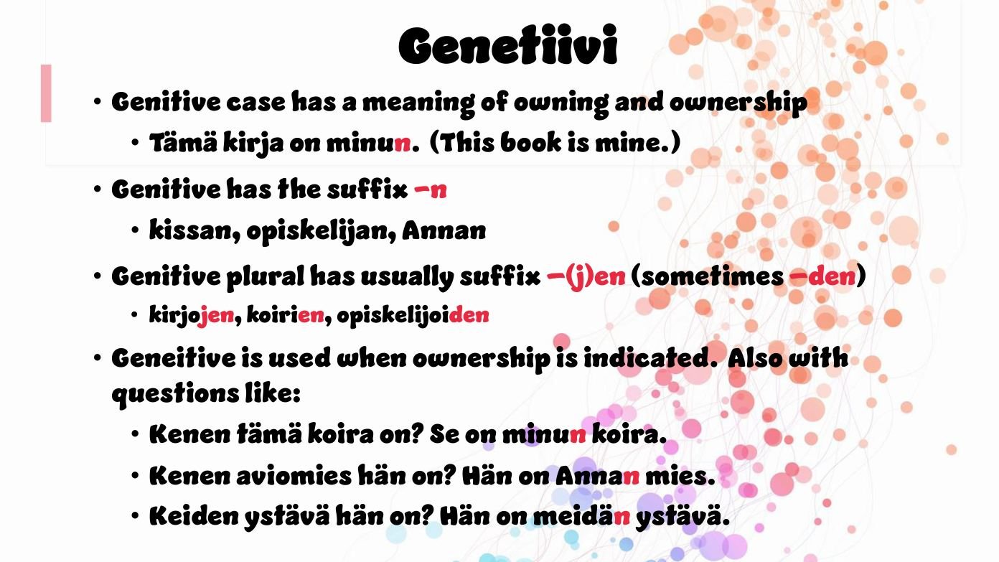
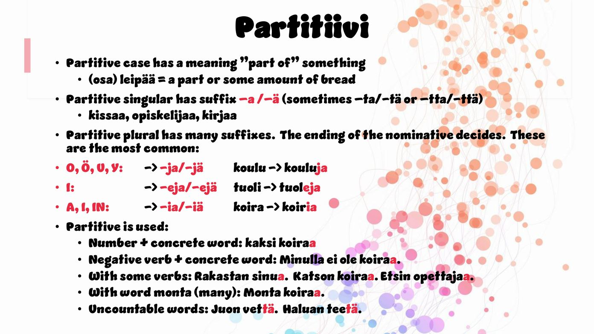

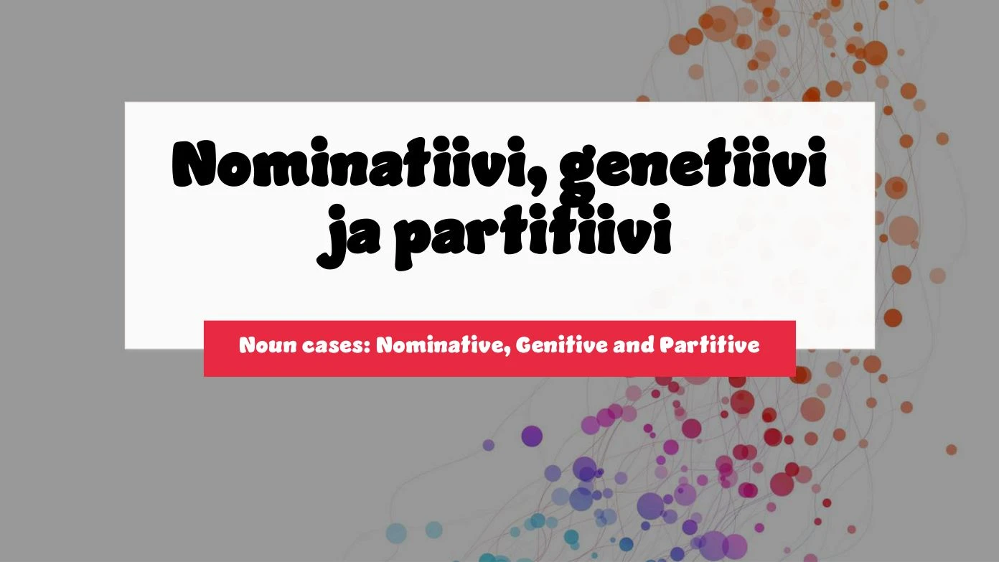


| Suomi | 中文 | English 说明 |
|---|---|---|
| sijamuoto | 格 | Case; Finnish has 15 noun cases. |
| nominatiivi | 主格 | Dictionary form; plural adds -t. |
| genetiivi | 属格 | Possession; ending -n: kissan, Annan. |
| partitiivi | 部分格 | Partial quantity; -a/-ä, -ta/-tä, -tta/-ttä. |
| inessiivi | 内格 | -ssa/-ssä: talossa, Lahdessa. |
| elatiivi | 出格 | -sta/-stä: talosta, Suomesta. |
| illatiivi | 入格 | -hVn: taloon, kauppaan, kotiin. |
| adessiivi | 上格 | -lla/-llä: talolla, salilla. |
| allatiivi | 向格 | -lle: talolle, salille. |
| essiivi | 样格 | -na/-nä: lapsena, maanantaina. |
| translatiivi | 转变格 | -ksi: aamiaiseksi, taloksi. |
| kenen? | 谁的？ | Genitive question word: Kenen tämä koira on? |
| minun, sinun, hänen | 我的、你的、他/她的 | Genitive forms of the personal pronouns. |
| mun, sun, meiän | 我的、你的、我们的（口语） | Colloquial genitive forms. |
| kirjojen | 书的（属格复数） | Genitive plural in -(j)en. |
| kirjani | 我的书 | Possessive suffix -ni in formal written Finnish. |
| naisen | 女人的（属格） | -nen words use the -se- stem: nainen → naisen. |
kissa、kuppi、paita、kenkä、ilta 的属格，并标明交替。解：kissa → kissan（无交替）；kuppi → kupin（pp → p）；paita → paidan（t → d）；kenkä → kengän（nk → ng）；ilta → illan（lt → ll）。
思路：先看有无 k/p/t，有就取弱级词干，再加 -n。无交替时直接加 -n。
解：Timon salkku on uusi. / Annan kirja on painava.
要点：Timo → Timon（元音结尾直接加 n）；Anna → Annan。属格修饰语在前，中心词 salkku、kirja 用主格作主语。
解：Opiskelijoilla on mielipide kirjojen hinnoista.
拆解：opiskelijoilla（学生，-lla 表「有」的主语）＋ on ＋ mielipide（意见）＋ kirjojen（书的，属格复数）＋ hinnoista（关于价格，出格）。整句结构是 X:llä on mielipide Y:stä。
Minun ystävä on kotoisin Saksasta. 在正式书面语中应如何写？口语中呢？解：正式：Minun ystäväni on kotoisin Saksasta. 或省略代词 Ystäväni on kotoisin Saksasta. 口语：Mun ystävä on kotoisin Saksasta.
说明：原句在口语里可以接受，但正式文本应加 -ni。这是「同一句话两套语体」的典型例子，考试按文体要求选择。
- 写出下列词的属格：
kukka、hattu、tauko、kipu、kampa、räntä、kerta、Jasmin、Oscar、Martin。 - 写出六个人称代词的属格，并各造一句
… on uusi / painava / kylmä的判断句。 - 把下列短语译成芬兰语：安娜的丈夫、我们的老师、芬兰语课、咖啡旁边、学生的意见（属格复数）。
- 给
kirja、koira、opiskelija、nainen、peruna造属格复数。 - 改错：
kukkan on kaunis/Oscarn kirja/minun kirja（正式语体）
答案与思路
1. kukan（kk→k）、hatun（tt→t）、tauon（k→∅）、kivun（p→v）、kamman（mp→mm）、rännän（nt→nn）、kerran（rt→rr）、Jasminin（加 i）、Oscarin（加 i）、Martinin（加 i）。
2. minun / sinun / hänen / meidän / teidän / heidän。例句：Minun puhelin on uusi. / Sinun laukku on painava. / Meidän luokka on kylmä.
3. Annan mies / meidän opettaja / suomen tunti / kahvin vieressä / opiskelijoiden mielipide。
4. kirjojen、koirien、opiskelijoiden、naisten（-nen → -sten）、perunoiden。
5. kukka on kaunis → kukan 需弱化：kukan on kaunis 仍不完整，正确句如 Kukan väri on kaunis；Oscarn → Oscarin；minun kirja → minun kirjani。
Kenen? 问答。kukkan、kuppin。Oscarn、Jasminn。mun、sen。属格操作清单
写属格单数四步
- 看词尾：元音结尾直接加 -n；辅音结尾先加 -i- 再加 -n
- 看词内是否有 k/p/t，有则取弱级词干
- 看是否 -nen 结尾：→ -sen（nainen → naisen）
- 落笔后回读一遍，确认没有多写辅音
写属格复数三步
- -nen 结尾 → -sten（naisten、vihannesten）
- i 结尾 → -jen（kirjojen、koirien）
- 其余 → -den 或 -jen（perunoiden、opiskelijoiden）
| 源文件 | 位置 | 覆盖知识点 |
|---|---|---|
| 10_Tunti 9/2_Nominatiivi, genetiivi ja partitiivi.pdf | p2–p6 | 三格定义、主格单复数与四个基本问句、属格 -n 与复数 -(j)en、部分格用法预览、12 词三格对照表、代词三格表 |
| 10_Tunti 9/3_Genetiivi.pdf | p2–p6 | 15 格说明、属格三种构成、辅音交替例词、代词属格、口语形式 mun/sun/meiän、所有格后缀 |
| 10_Tunti 9/8_KOTITEHTÄVÄ … Genetiivi.docx | 全篇 11 行 | 属格填空练习：minä、Jessica、hän、Paavo、te、sinä、Artur、he、me、koira、kuka |
| 13_Kertaa/1_Kertaus FI2.pdf | p3 | 属格与部分格混合复习：minä、hän、kahvi、tyttö、Jemina、Oscar |
| 13_Kertaa/2_Vastaukset, Kertaus FI2.pdf | p3 | 属格答案：hänen、kahvin、tytön、Jeminan、Oscarin 及例句 |
| （补充） | 9.1、9.7 | 15 格总表与属格复数三类词尾的归纳属拓展，原文只提到 15 个格与 -(j)en |
| （跳过） | — | 练习表格中的空行为作答版面 |
第 10 讲 · 部分格的构成与用法
The Partitive: Formation and Use 第 3 章 食物、格与部分格
本节定位
第十讲是全课程语法上最重要的一讲。部分格（partitiivi）在前面九讲里已经反复出现：vuotta（年龄）、vettä（喝水）、tanssia（爱好）、porkkanoita（买胡萝卜）、ei ole kissaa（没有猫）。这一讲把这些散点收成一套完整规则。
它也是芬兰语区别于其他欧洲语言最明显的地方：宾语不只有一种形式。同一个动作，做完与没做完，宾语要用不同的格（katson elokuvan / katson elokuvaa）。这一点直接决定句子的意思，不只是「语法细节」。
学完本节你应当能够：
- 按五条主规则为任意单数名词造出部分格，并处理 -nen、vesi、pieni 等特殊词
- 按三条规律为常见名词造出部分格复数
- 说出部分格五大用法：数词后、否定句、部分格动词后、monta 后、不可数名词
- 区分「部分格宾语」与「总格宾语」在意义上的差别，并按语境选择
- 把一个打乱的词串组成正确的芬兰语部分格句（考试固定题型）
10.1 部分格到底表示什么
材料用一句话概括：Partitive case has a meaning 「part of」 something，例 （osa） leipää = 一块 / 一些面包。所以部分格的核心语义是「一部分、不定量、未完成」。
由此推出两条使用逻辑：
- 量上的一部分：一块面包、一些水、两个鸡蛋 —— 都不是「全部」。
- 动作上未完成：正在看、看着、看了一会儿 —— 动作没有走到终点。
这两条逻辑覆盖了本讲所有用法。凡是句子里出现「不确定多少」或「没做完」，宾语几乎都用部分格。
10.2 部分格单数：五条主规则
材料把构成规则按词尾分成五组，逐组给了大量填空例词。下面把规则与例词一并列出（例词即练习题的标准答案）：
| 规则 | 条件 | 例词 → 部分格 | 说明 |
|---|---|---|---|
| 规则一 | 词尾是元音（e 除外） | kynä → kynää；auto → autoa；läppäri → läppäriä；kirja → kirjaa；kinkku → kinkkua；ruoka → ruokaa；maito → maitoa；leipä → leipää；pizza → pizzaa；jäätelö → jäätelöä；raha → rahaa | 直接加 -a / -ä；注意元音和谐 |
| 规则二 | 词尾是 e | vene → venettä；tietokone → tietokonetta；huone → huonetta；vaate → vaatetta；perhe → perhettä | 加 -tta / -ttä |
| 规则三 | 词尾是 i | bussi → bussia；pankki → pankkia；lasi → lasia；äiti → äitiä；lehti → lehteä；lahti → lahtea；poski → poskea；järvi → järveä | 一般加 -a/-ä；部分词 i → e 再加 -a/-ä |
| 规则四 | 词尾是辅音 | avain → avainta；puhelin → puhelinta；tulostin → tulostinta；lounas → lounasta；sormus → sormusta；pakastin → pakastinta；selain → selainta | 加 -ta / -tä |
| 规则五 | 短词（单音节） | maa → maata；tee → teetä；yö → yötä；työ → työtä | 加 -ta / -tä，避免出现三个相同元音 |
规则三的 i → e 需要单独注意：lehti → lehteä、järvi → järveä、lahti → lahtea、poski → poskea。判据不完全可推，但有一条经验：i 前面的音节含 a、e、ä 等前元音时更容易变成 e；bussi、pankki、lasi 这类则保留 i。
规则五的存在是为了避免三个相同元音连排：maa + a 若写成 maaa 不可读，所以改用 -ta 得 maata。同理 tee → teetä、yö → yötä。
10.3 特殊词尾与例外
材料专门列了「Erikoiset tapaukset」（特殊情况），这些必须整块记：
| 类型 | 例词 → 部分格 | 说明 |
|---|---|---|
| -nen 结尾 | punainen → punaista；nainen → naista；sininen → sinistä；virolainen → virolaista | -nen 变 -sta / -stä |
| -si 结尾的旧词 | vesi → vettä；vuosi → vuotta；kuusi（六）→ kuutta；kuukausi → kuukautta | 去掉 -si，按词干加 -ta/-ttä |
| i 脱落 | pieni → pientä；suuri → suurta；kuori → kuorta | i 去掉后加 -ta/-tä |
| 人名 | David → Davidia；Hamad → Hamadia；Susan → Susania；Alex → Alexia；Mirjam → Mirjamia；Martin → Martinia；Marjut → Marjutia | 辅音结尾的人名先加 -i- 再加 -a/-ä |
-nen 结尾的规律与第 9 讲属格一致：-nen 的词在变格时整体换成 -se- 词干（nainen → naise-），部分格就是 naista，属格是 naisen。记住「-nen → -se-」这一个动作，两类格都能推。
人名规则值得单拎出来：David 结尾是辅音 d，直接加 -a 会得到不可读的 Davida？实际上芬兰语的处理是先加 i：Davidia、Hamadia、Susania。这与第 9 讲属格「辅音结尾加 i 再加 n」是同一个思路。
10.4 部分格复数：三条主要规律
材料给出的是三条最常用规律，并强调「由主格结尾决定」：
| 主格词尾 | 部分格复数词尾 | 例词 |
|---|---|---|
| o, ö, u, y | -ja / -jä | koulu → kouluja；työ → töitä（例外，见下）；halo → haloja |
| i | -eja / -ejä | tuoli → tuoleja；bussi → busseja；pankki → pankkeja |
| a, i, in | -ia / -iä | koira → koiria；kirja → kirjoja（a → o + ja）；kissa → kissoja |
| e | -ita / -itä | huone → huoneita；vaate → vaatteita |
| -nen | -sia / -siä | nainen → naisia；punainen → punaisia |
材料原文只给了前三行（o/ö/u/y → -ja；i → -eja；a/i/in → -ia），后两行是同类词的类推结果，用来补齐实际会遇到的 huoneita、naisia。
注意 a → o + ja 这一小步：kirja → kirjoja、kissa → kissoja、koira → koiria（这里 a 直接变 i + a）。同样是 a 结尾，词干不同结果不同，所以复数部分格也要按词记，遇到新词先查再写。
10.5 部分格的五大用法
材料列出的用法条目是这一讲最该背下来的清单，每条都配了例句：
| 用法 | 例句 | 说明 |
|---|---|---|
| ① 数词 + 具体名词 | kaksi koiraa；kolme munaa；kaksi porkkanaa | 2 以上接部分格单数，不是复数 |
| ② 否定动词 + 具体名词 | Minulla ei ole koiraa.；Tarja ei osta tietokonetta. | 否定句宾语一律部分格 |
| ③ 部分格动词 | Rakastan sinua.；Katson koiraa.；Etsin opettajaa. | 这类动词的宾语习惯用部分格 |
| ④ monta（许多） | Monta koiraa. | monta 后面接部分格单数 |
| ⑤ 不可数名词 | Juon vettä.；Haluan teetä. | 液体、粉末、物质用部分格 |
第 ③ 条需要一份动词清单，材料在复习题里给了足够的样本：auttaa（帮助）、rakastaa（爱）、etsiä（找）、katsoa（看）、odottaa（等）、kuunnella（听）、lukea（读）、pelata（玩）、ostaa（买，否定时）、syödä（吃，部分时）。这些动词的共同点是：动作可以「没完」，或对象本身是「一部分」。
第 ② 条的否定规则要连带注意主语：Minulla ei ole koiraa 里 minulla 不变，只有宾语变。而 Tarja ei osta tietokonetta 里 tietokone → tietokonetta，是 e 结尾加 -tta 的规则二。
10.6 部分格宾语与总格宾语的对立
这是芬兰语语法的核心机制，也是材料没有明说但反复示范的差别。看两组对照：
| 句子 | 含义 | 宾语的格 |
|---|---|---|
| Katson elokuvan. | 我要看完这部电影（整部）。 | 总格 -n |
| Katson elokuvaa. | 我正在看电影（没看完）。 | 部分格 -a |
| Ostan leivän. | 我买（一整个）面包。 | 总格 -n |
| Ostan leipää. | 我买些面包。 | 部分格 -a |
| Syön omenan. | 我把一个苹果吃掉。 | 总格 -n |
| Syön omenaa. | 我在吃苹果（吃着一部分）。 | 部分格 -a |
| Juon maidon. | 我把（那杯）牛奶喝完。 | 总格 -n |
| Juon maitoa. | 我喝（一些）牛奶。 | 部分格 -a |
判断口诀：结果完整 → 总格；过程未完 / 数量不定 → 部分格。此外三种情况永远用部分格：否定句、数词 2 以上、不可数名词。这三条是硬规则，不需要判断语感。
Juon maidon。牛奶不可数，必须是 Juon maitoa。同理 Syön leipää（吃面包）比 Syön leivän（吃掉一整个）更常用于日常描述。10.7 造句练习：语序不变、动词变位、宾语部分格
材料的复习题给了 11 组词，要求「用语序不变、动词变位、宾语用部分格」造出句子。这正好是考试题型，下面给出全部标准答案并标注操作步骤：
| 给定词 | 标准答案 | 关键操作 |
|---|---|---|
| Minä – auttaa – naapuri | Minä autan naapuria. | auttaa 第一类，naapuri → naapuria |
| Sinä – syödä – kana – ja – riisi | Sinä syöt kanaa ja riisiä. | syödä 第二类；两个宾语都部分格 |
| Juoda – sinä – olut? | Juotko sinä olutta? | 疑问句动词加 -ko，olut → olutta |
| He – rakastaa – jäätelö | He rakastavat jäätelöä. | rakastaa 第一类，he → -vat |
| Sanna – etsiä – avain | Sanna etsii avainta. | etsiä 第一类，avain → avainta |
| Tarja – ei ostaa – tietokone | Tarja ei osta tietokonetta. | 否定式 + e 结尾 -tta |
| Te – katsoa – puhelin | Te katsotte puhelinta. | katsoa 第一类，puhelin → puhelinta |
| Me – odottaa – bussi | Me odotamme bussia. | odottaa 第一类，bussi → bussia |
| Minä – ei kuunnella – musiikki | Minä en kuuntele musiikkia. | kuunnella 第三类，musiikki → musiikkia |
| Te – lukea – lehti | Te luette lehteä. | lukea 第一类，lehti → lehteä（i → e） |
| He – ei pelata – jalkapallo | He eivät pelaa jalkapalloa. | pelata 第四类，否定 eivät pelaa |
最后一行值得单独说明：pelata 属第四类，词干 pelaa-，否定式是 eivät pelaa（不是 pelata）。jalkapallo → jalkapalloa 是 o 结尾加 -a。
- 读词串，找出主语 → 定动词 → 判动词类型 → 变位
- 找出宾语，按规则造部分格（元音 / e / i / 辅音 / 短词）
- 检查是否否定句或数词，若是则确认部分格
- 检查语序与原文一致，疑问句记得给动词加 -ko/-kö
10.8 常见错误汇总
kolme muna 错，应为 kolme munaa。huonea 错，应为 huonetta。naista 对，naisena 式的类推错；punainen → punaista。Juon maidon、Ostan leivän（若只想说「买些面包」）。部分格核心语义是「一部分、不定量、未完成」，由此推出五大硬用法：数词 2 以上（kaksi koiraa，接部分格单数）、否定句（Minulla ei ole koiraa）、部分格动词（Rakastan sinua, Etsin avainta）、monta 后（monta koiraa）、不可数名词（Juon vettä）。构成五规则：元音结尾加 -a/-ä（kirjaa, ruokaa），e 结尾加 -tta/-ttä（huonetta, venettä），i 结尾多加 -a 但部分变 e（lehti→lehteä），辅音结尾加 -ta/-tä（avainta, lounasta），短词加 -ta 免三元音连排（maa→maata, yö→yötä）。特殊词整块记：-nen→-sta（naista, punaista）、vesi→vettä, vuosi→vuotta、pieni→pientä、辅音结尾人名先加 i（Davidia）。最关键的对立是宾语：Katson elokuvan（看完这部）对 Katson elokuvaa（正在看）；口诀「结果完整用总格，过程未完或数量不定用部分格」。
宾语格选择看动作是否及于「整体」：整体完成 → 属格（Syön omenan 我把苹果吃完）；部分/进行/未完成 → 部分格（Syön omenaa 我正在吃苹果/吃一部分）。否定句宾语永远部分格（En syö omenaa）。数量词后的宾语也走部分格（ostan kaksi kirjaa）。考试题往往把「进行中」和「将完成」混排，先问完成度再选格。
原版图页（源 PDF 插图页）
| Suomi | 中文 | English 说明 |
|---|---|---|
| partitiivi | 部分格 | The case of partial or indefinite quantity. |
| osa | 部分 | osa leipää = a piece of bread. |
| kaksi koiraa | 两只狗 | Numbers 2+ take the partitive singular. |
| ei ole koiraa | 没有狗 | A negative sentence always takes the partitive object. |
| Juon vettä | 我喝水 | Uncountable nouns stay in the partitive singular. |
| monta | 许多 | monta koiraa — partitive singular after monta. |
| huonetta | 房间（部分格） | Words ending in -e take -tta/-ttä. |
| avainta | 钥匙（部分格） | Words ending in a consonant take -ta/-tä. |
| naista | 女人（部分格） | -nen words take -sta/-stä. |
| vettä | 水（部分格） | Irregular: vesi → vettä. |
| pientä | 小的（部分格） | The i drops: pieni → pientä. |
| porkkanoita | 胡萝卜（部分格复数） | a → oita in the partitive plural. |
| tuoleja | 椅子（部分格复数） | i → eja in the partitive plural. |
| koiria | 狗（部分格复数） | a → ia in the partitive plural. |
| katsomista | 看（动名词部分格） | -minen becomes -mista when it is an object. |
| kokonaisobjekti | 总格宾语 | Total object -n: Katson elokuvan = I watch the whole film. |
huone、avain、vesi、punainen、pieni 造部分格，并说明各自适用哪条规则。解：huone → huonetta（规则二：e 结尾加 -tta）；avain → avainta（规则四：辅音结尾加 -ta）；vesi → vettä（特殊：-si 去掉，双写 t）；punainen → punaista（-nen → -sta）；pieni → pientä（i 脱落加 -tä）。
思路：先看词尾类别，再查特殊表。vesi 与 pieni 不属五条主规则，必须靠记忆表。
解：Ostin kolme munaa ja kaksi maitoa. 若用现在时：Ostan kolme munaa ja kaksi maitoa.
要点：数词 3 与 2 后面都接部分格单数（munaa、maitoa）。maito 本身不可数，部分格 maitoa 兼有「一些牛奶」的意思。
Luen kirjaa 与 Luen kirjan，说明语境差别。解：Luen kirjaa = 我在读一本书（读着，没读完）；Luen kirjan = 我把这本书读完（读完或承诺读完）。
语法：前者部分格宾语，后者总格宾语。回答「你在做什么」用前者；回答「你今天要完成什么」用后者。
Minä en osta tietokone. / Syön kaksi omenat. / Juon vesi.解：三处都要部分格：Minä en osta tietokonetta.（否定）／Syön kaksi omenaa.（数词）／Juon vettä.（不可数）。
共性：三条不同的规则指向同一个结果——部分格。考试里只要看到否定、数词、物质名词，先写部分格再考虑别的。
- 为下列词造部分格单数：
talo、huone、bussi、avain、vesi、nainen、pieni、David、työ。 - 为下列词造部分格复数：
koulu、tuoli、koira、kirja、huone、nainen。 - 把 11 组词串中的任意 5 组造成完整句子（语序不变）。
- 翻译：「我没有车，但我有很多朋友，我每天喝咖啡、读报纸。」
- 判断该用部分格还是总格，并说明理由：
Katson (elokuva)（正在看）/Ostan (leipä)（买一整个）/Juon (maito)（喝一些）。
答案与思路
1. taloa、huonetta、bussia、avainta、vettä、naista、pientä、Davidia、työtä。逐项核对：e → -tta；辅音 → -ta；-si 特殊；-nen → -sta；i 脱落；人名加 i。
2. kouluja、tuoleja、koiria、kirjoja、huoneita、naisia。注意 kirja → kirjoja 是 a → o + ja，koira → koiria 是 a → i + a。
3. 示例：Minä autan naapuria. / Sinä syöt kanaa ja riisiä. / Juotko sinä olutta? / He rakastavat jäätelöä. / Sanna etsii avainta.
4. Minulla ei ole autoa, mutta minulla on monta ystävää. Juon kahvia ja luen lehteä joka päivä. 三个部分格：autoa（否定）、ystävää（monta 后单数）、kahvia 与 lehteä（不可数 / 部分动作）。
5. 正在看 → 部分格 elokuvaa；买一整个 → 总格 leivän；喝一些 → 部分格 maitoa。
huonea、perhea。kaksi koirat。Juon maidon。En osta tietokone。部分格操作清单
造部分格单数五步
- 看词尾：元音（非 e）→ +a/-ä；e → +tta/-ttä；i → +a/-ä（部分 i→e）；辅音 → +ta/-tä；单音节短词 → +ta/-tä
- 查特殊表：-nen → -sta；vesi/vuosi/kuusi/kuukausi；pieni/suuri/kuori
- 人名辅音结尾先加 -i-（David → Davidia）
- 检查元音和谐：a/o/u 用后元音，ä/ö/y 用前元音
判断用不用部分格三问
- 是否否定句？是 → 部分格
- 是否数词 2 以上或 monta？是 → 部分格单数
- 动作是否完成、数量是否确定？否 → 部分格；是 → 总格
| 源文件 | 位置 | 覆盖知识点 |
|---|---|---|
| 10_Tunti 9/2_Nominatiivi, genetiivi ja partitiivi.pdf | p4 | 部分格定义、单数词尾 -a/-ä 与特殊 -ta/-tta、复数三条规律、五大用法（数词、否定、动词、monta、不可数） |
| 10_Tunti 9/4_KATSO videot Partitiivi.html | 全篇 4 个视频任务 | 四条教学视频主题：Minulla ei ole、Verbi + partitiivi、Numero + partitiivi、Ruoka + partitiivi |
| 10_Tunti 9/5_RuokaaJuomaa.pdf | p1 | 食品饮料的部分格对照表：vettä、maitoa、mehua、kahvia、teetä、limsaa、leipää、keittoa、salaattia、keksiä、pullaa、piirakkaa |
| 10_Tunti 9/6_Puhu parille Mitä syöt_ (partitiivi).html | 全篇 4 问 | 餐食问答中的部分格宾语：Syön leipää / jogurttia / salaattia / pizzaa |
| 10_Tunti 9/7_Partitiivin muodostus.docx | 全篇 5 组 30 余词 | 单数部分格五条规则与全部填空答案、-nen / -si / i 脱落 / 人名特殊表 |
| 13_Kertaa/5_PartitiiviLauseita.docx | 全篇 11 组 | 造句题型：语序不变、动词变位、宾语部分格 |
| 13_Kertaa/6_PartitiiviLauseitaVASTAUKSET.docx | 全篇 11 句 | 11 句标准答案，本讲义 10.7 节全部采用 |
| （补充） | 10.4、10.6 | 复数部分格后两行与部分格/总格对立的系统解释属拓展，原文只给零散例句 |
| （跳过） | — | 空白练习表格与图片页 |
第 4 章 场景应用、复习与作业 3 讲 章节页 →
第 11 讲 · 喜好表达、餐食与餐厅场景
Likes, Meals and Eating Out 第 4 章 场景应用、复习与作业
本节定位
第十一讲把「吃」这条线索收口：先讲喜好的表达（pidätkö kahvista?），再讲餐食与过敏（Olen allerginen kalalle），最后进餐厅（Saisinko …?、Pääruoaksi otan …）。三块内容共用两个格：-sta/-stä（喜好）与 -lle（过敏）。
这一讲还引入两类此前未系统出现的材料：餐厅条件式礼貌用语（haluaisit、Saisinko）与《Ystävänpäivä》文化短文里的关系从句（joka talvella lämmittää）。两者都按「识别 + 仿说」要求，不要求主动变形。
学完本节你应当能够：
- 用
pidätkö / tykkäätkö + -sta问答喜好，并正确否定 - 为常见食物与抽象名词造出 -sta/-stä 形式，说明它与部分格的区别
- 用
aamiaiseksi / lounaaksi / illalliseksi / iltapalaksi说清「吃什么当某餐」 - 用
Olen allerginen + -lle、En voi syödä + 部分格说明饮食限制 - 在餐厅完成点单对话，并读懂芬兰语菜单的加料与饮品栏
11.1 pitää 与 tykätä：两个「喜欢」
材料把两个动词并列讲，因为它们意思几乎相同、搭配的格也相同，但变位类型不同：pitää 属第一类，tykätä 属第四类。
| 人称 | pitää（喜欢） | tykätä（喜欢，口语更常用） |
|---|---|---|
| minä | pidän | tykkään |
| sinä | pidät | tykkäät |
| hän | pitää | tykkää |
| me | pidämme | tykkäämme |
| te | pidätte | tykkäätte |
| he | pitävät | tykkäävät |
pitää 的第三人称 pitää 只有一个 t（不是 pitaa 也不是 pittaa）；tykätä 的第三人称 tykkää 是三个 k 两个 ä，拼写要准。
两个动词后面都接 -sta/-stä：
| 问句 | 肯定答句 | 否定答句 |
|---|---|---|
| Pidätkö kahvista? | Joo, pidän kahvista. | Ei, en pidä kahvista. |
| Pidätkö teestä? | Joo, pidän teestä. | Ei, en pidä teestä. |
| Pidätkö kalasta? | Joo, pidän kalasta. | Ei, en pidä kalasta. |
| Pidätkö musiikista? | Joo, pidän musiikista. | Ei, en pidä musiikista. |
| Tykkäätkö suklaasta? | Joo, tykkään suklaasta. | Ei, en tykkää suklaasta. |
| Tykkäätkö kissoista vai koirista? | Tykkään kissoista. | En tykkää kummastakaan. |
| Pidätkö minusta? | Joo, pidän sinusta. | — |
| Pidätkö hänestä? | Joo, pidän hänestä. | — |
注意人称代词的 -sta 形式不规则：minä → minusta、sinä → sinusta、hän → hänestä、me → meistä、te → teistä、he → heistä。这是本讲最容易写错的一组。
11.2 -sta/-stä 格的构成
-sta/-stä 是出格（elatiivi），本义是「从……里面出来」。构成规则比部分格简单：取词干，加 -sta/-stä。难点在于词干本身可能要变。
| 主格 | -sta 形式 | 说明 |
|---|---|---|
| kahvi | kahvista | i 结尾直接用词干 |
| tee | teestä | ee + stä（前元音和谐） |
| kala | kalasta | a 结尾 + sta |
| musiikki | musiikista | kk → k 弱化 |
| suklaa | suklaasta | 长元音保留 |
| kissa | kissasta | 无交替 |
| koira | koirasta | 无交替 |
| vesi | vedestä | si → de（特殊词干） |
| kuppi | kupista | pp → p |
| tyttö | tytöstä | tt → t |
| paita | paidasta | t → d |
| olut | oluesta | 辅音结尾：ut → ue |
| jalkapallo | jalkapallosta | 复合词整体加词尾 |
为什么喜欢用 -sta 而不是部分格？语义解释是：喜欢被视为「从某物那里获得愉悦」，所以用「从」的格。这个解释能帮你记住搭配，不必每次靠背。
Pidän kahvi、Tykkään kala 都错。这两个动词后面必须有 -sta/-stä，不能接主格或部分格。这是本讲丢分最多的一处。与部分格的分工要清楚：Haluan kahvia（我想要一些咖啡，部分格）／Pidän kahvista（我喜欢咖啡，出格）。同一名词因动词不同而换格，这是芬兰语搭配的典型现象。
11.3 餐食词汇与 -ksi 格
材料列出五餐：
| 餐 | 含义 | 「作为某餐吃」的形式 | 时间 |
|---|---|---|---|
| aamiainen | 早餐 | aamiaiseksi | aamulla |
| lounas | 午餐 | lounaaksi | päivällä / kello 11–12 |
| välipala | 加餐、点心 | välipalaksi | iltapäivällä |
| päivällinen / illallinen | 晚餐 | illalliseksi | illalla |
| iltapala | 夜宵 | iltapalaksi | myöhään illalla |
问「你早餐吃什么」是 Mitä syöt aamiaiseksi?，答 Syön aamiaiseksi leipää ja jogurttia。这里的 -ksi 是转变格（translatiivi），表示「变成、作为」——把食物「变成」这一餐。
同类结构还有 Pääruoaksi otan kalaa（主菜我要鱼）、Jälkiruoaksi otan jäätelöä（甜点我要冰淇淋）。-ksi 与 -sta 的差别在于：前者表角色 / 结果，后者表来源。
材料还提到芬兰人的用餐习惯：Generally Finns eat their meals earlier than in southern countries. Breakfast, lunch and dinner are quite large and energy rich. Evening snack is often times very light. 这句话可作为口试里「比较饮食文化」的素材。
11.4 过敏与特殊饮食：-lle 与部分格
材料的问句是 Onko sinulla erikoisruokavalio?（你有特殊饮食吗？）与 Onko sinulla allergioita?（你有过敏吗？）。答法有三套：
| 句型 | 例句 | 语法 |
|---|---|---|
| Minulla on … | Minulla on keliakia. | 疾病名作主格宾语 |
| En voi syödä + 部分格 | En voi syödä lihaa / kalaa / tomaattia / sitruunaa / pähkinää. | 情态动词 voida + 部分格宾语 |
| Olen allerginen + -lle | Olen allerginen kalalle / tomaatille / sitruunalle / pähkinälle. | 形容词 + 向格 -lle |
| Olen … | Olen kasvissyöjä. / Olen vegaani. | 身份名词作表语 |
| Ei, minulla ei ole. | Ei, minulla ei ole allergioita. | 否定句 + 部分格复数 |
-lle 的构成要注意词干变化：kala → kalalle、tomaatti → tomaatille（tt → t）、pähkinä → pähkinälle、sipuli → sipulille、maito → maidolle（t → d）、kana → kanalle。
材料还给了包装上的饮食缩写，阅读菜单必用：
G= gluteeniton（无麸质）；VL= vähälaktoosinen（低乳糖）；L= laktoositon（无乳糖）；M= maidoton（无奶）；V= vegaaninen（纯素）。
特殊饮食的词汇：keliakia（乳糜泻）、laktoosi-intoleranssi（乳糖不耐）、kasvissyöjä（素食者）、vegaani（纯素者）。
11.5 餐厅：从进店到点单
材料的餐厅词汇按对话顺序排列，可以直接当脚本用：
| 服务员 / 顾客用语 | 中文 | 语法点 |
|---|---|---|
| Syömään tulossa? | 来吃饭吗？ | 口语省略问句，tulossa 是 essive |
| Voit valita pöydän. | 你可以选桌子。 | voida 第二人称 + 原形 |
| Tässä ruokalista. | 这是菜单。 | tässä 固定说法 |
| Voinko tuoda jotain juotavaa? | 要我拿点喝的吗？ | voida + -ko；juotavaa 部分格 |
| Mitä haluaisit syödä? | 你想吃什么？ | 条件式 haluaisit，礼貌 |
| Saisinko …? | 我可以要……吗？ | 条件式 saada，最常用礼貌请求 |
| Pääruoaksi otan … | 主菜我要…… | -ksi 表角色 |
| kala → kalaa | 鱼 | 部分格，因为「一些鱼」 |
| uuniperuna → uuniperunaa | 烤土豆 | 部分格 |
| kasviskeitto → kasviskeittoa | 蔬菜汤 | 部分格 |
| talon viini | 店选葡萄酒（house wine） | 属格 + 名词 |
| kuiva valkoviini | 干白葡萄酒 | kuiva → kuivaa（部分格） |
这里出现了本课程第一个条件式（conditional）语境：haluaisit、Saisinko、Voinko。条件式词尾是 -isi-，插在词干与人称词尾之间：halua- + isi + t → haluaisit、saa- + isi + n + ko → saisinko。
Saisinko …?（我可以要……吗）、Mitä haluaisit …?（你想要什么）、Voisitko …?（你能……吗）。餐厅与商店场景直接用。11.6 菜单读法：加料与饮品
材料的菜单是「Suzan pizza ja kebab」，先给一句总说明：Kaikkiin pizzoihin kuuluu pizzamauste ja valkosipuli.（所有披萨都含披萨香料与大蒜。）注意 kuulua（属于、包含）后接 illative：kaikkiin pizzoihin。
Lisätäytteet（加料）栏的词汇：ananas（菠萝）、aurinkokuivattu tomaatti（日晒番茄）、fetajuusto（菲达奶酪）、herkkusieni（蘑菇）、ilmakuivattu kinkku（风干火腿）、jauheliha（肉馅）、kana（鸡肉）、katkarapu（虾）、kebabliha（烤肉）、kinkku（火腿）、mozzarella、oliivi（橄榄）、paprika（彩椒）、pepperoni、punasipuli（红洋葱）、salami、sinihomejuusto（蓝纹奶酪）、tomaatti、tonnikala（金枪鱼）。
Juomat（饮品）栏：Vesi 1 e、Kivennäisvesi 2,50 e、Coca-Cola 2,50 e、Fanta 2,50 e、Olut 5 e、Siideri 6 e。价格读法：2,50 e 读 kaksi euroa viisikymmentä 或 kaksi viisikymmentä；e 是 euro 的缩写。
点单完整示范：Anteeksi, saisinko pizzan? Pääruoaksi otan pizzan ja juomaksi otan vettä. 注意 juomaksi（作为饮料）同样是 -ksi。
11.7 Ystävänpäivä：文化短文与关系从句
材料最后一篇是《Ystävänpäivä》（2 月 14 日）的文化介绍，信息点很密集：
- 在芬兰，这一天献给朋友而不是恋人：
Suomessa ystävänpäivä on omistettu ystäville, ei rakastavaisille。 - 这一节日很新，1980 年代才开始流行：
Juhla on uusi – sen juhlinta alkoi 80-luvulla。 - 如今一些年轻伴侣也按国际的浪漫方式庆祝。
- 它也是热门的求婚日：
Se on suosittu päivä kosia（kosia= 求婚）。 - 传统：卡片、短信、小礼物、外出吃饭、看电影。卡片数量仅次于圣诞。
材料给了一组高价值短语，可以直接用于口语考试：
| 短语 | 中文 | 语法点 |
|---|---|---|
| Minä rakastan sinua. | 我爱你。 | rakastaa + 部分格 sinua |
| Minä tykkään sinusta. | 我喜欢你。 | tykätä + sinusta |
| Minä pidän sinusta. | 我喜欢你。 | pitää + sinusta |
| Minä välitän sinusta. | 我在乎你。 | välittää + 出格 |
| Olet tärkeä / rakas / ihana. | 你很重要 / 亲爱的 / 可爱。 | 形容词作表语用主格 |
| Olet paras ystäväni. | 你是我最好的朋友。 | paras 最高级 + 所有格后缀 |
| Kiitos ystävyydestä! | 谢谢你的友谊！ | ystävyys → ystävyydestä |
| Mennäänkö naimisiin? | 我们结婚吧？ | 被动式 mennään + -ko |
短文里的儿歌有两句关系从句，是很好的识别素材：
Minun ystäväni on kuin villasukka, joka talvella lämmittää.（我的朋友像一只毛袜，在冬天温暖我。）minun ystäväni on kuin niityn kukka, joka saa minut hymyilemään.（我的朋友像一朵草地上的花，让我微笑。）
这里的关系代词是 joka（谁 / 哪个），后面动词用第三人称单数：joka … lämmittää、joka saa。kuin 表「像」；niityn kukka 是属格修饰（草地的花）；saa minut hymyilemään 是「使役 + -maan」结构（让我笑起来）。
材料还列了 hellittelynimet（昵称）：rakas / rakkaani、kulta / kultanen / kultsi、muru / murunen、nuppu、ihana、hani / beibi。构词上最常见的是 -nen 与 -liini 两个后缀：Noora → Nooranen / Nooraliini、Tomi → Tominen / Tomiliini。
材料还提醒：Monet suomalaiset eivät käytä hellittelynimiä paljon tai julkisesti.（很多芬兰人不多用、尤其不在公开场合用昵称。）这是文化差异，口试里可以用来对比。
11.8 常见错误
pidän kahvi / tykkään kala 缺 -sta。minä → minusta（不是 minusta 之外的 minusta），hän → hänestä（不是 hänstä）。Olen allerginen kala 缺 -lle：应为 Olen allerginen kalalle。Mitä syöt aamiainen 缺 -ksi：应为 aamiaiseksi。两个「喜欢」搭配相同、变位类型不同：pitää 第一类（pidän, pitää），tykätä 第四类（tykkään, tykkää），后面都接 -sta/-stä：Pidätkö kahvista?、Tykkään suklaasta。写成 Pidän kahvi 是本讲最大失分点；与部分格的分工是 Haluan kahvia（想要一些）对 Pidän kahvista（喜欢咖啡）。人称代词出格不规则：minusta, sinusta, hänestä, meistä, teistä, heistä。餐食用 -ksi 表「作为某餐」：aamiaiseksi, lounaaksi, illalliseksi，Mitä syöt aamiaiseksi?。过敏用 -lle：Olen allerginen kalalle，或 En voi syödä kalaa（部分格）；饮食缩写 G/VL/L/M/V 分别指无麸质、低乳糖、无乳糖、无奶、纯素。点单礼貌式只认三个固定句：Saisinko …?、Mitä haluaisit …?、Voisitko …?，词干 + -isi- + 人称，不要求系统变位。《Ystävänpäivä》里芬兰情人节献给朋友而非恋人，Minä tykkään sinusta 可顺手用于口试。
听力与视频材料（本地可播）
preload="none" 表示打开页面不会自动下载，点播放才开始加载。听力技巧：第一遍抓大意，第二遍跟读，第三遍听写关键词。| Suomi | 中文 | English 说明 |
|---|---|---|
| pitää | 喜欢 | Type 1; requires -sta/-stä: pidän kahvista. |
| tykätä | 喜欢（口语） | Type 4: tykkään, tykkäät, tykkää. |
| kahvista | 咖啡（出格） | Pidän kahvista = I like coffee. |
| minusta | 我（出格） | Pidätkö minusta? — Do you like me? |
| aamiainen | 早餐 | aamiaiseksi = as breakfast. |
| lounas | 午餐 | lounaaksi = for lunch. |
| illallinen | 晚餐 | illalliseksi = for dinner. |
| iltapala | 夜宵 | iltapalaksi = for supper. |
| erikoisruokavalio | 特殊饮食 | Onko sinulla erikoisruokavalio? |
| keliakia | 乳糜泻 | Minulla on keliakia. |
| laktoosi-intoleranssi | 乳糖不耐 | Minulla on laktoosi-intoleranssi. |
| allerginen | 过敏的 | Olen allerginen kalalle (allative). |
| kasvissyöjä | 素食者 | Olen kasvissyöjä. |
| vegaani | 纯素者 | Olen vegaani. |
| ruokalista | 菜单 | Tässä ruokalista. |
| Saisinko …? | 我可以要……吗？ | Conditional polite request with -isi-. |
| pääruoka | 主菜 | Pääruoaksi otan kalaa. |
| joka | 关系代词 | villasukka, joka talvella lämmittää. |
Pidätkö kalasta? 与 Tykkäätkö suklaasta?，一肯一否。解：Joo, pidän kalasta. / Ei, en tykkää suklaasta.
核对：两个答句都保留 -sta；否定式 en pidä、en tykkää 后仍接 -sta，不能换成部分格。
解：Syön aamiaiseksi leipää ja jogurttia. Syön lounaaksi salaattia ja kanaa.
语法：餐食用 -ksi；食物宾语用部分格（不可数或「一些」）。四个部分格：leipää、jogurttia、salaattia、kanaa。
解：Olen allerginen pähkinälle, joten en voi syödä suklaata.
要点：pähkinä → pähkinälle（-lle）；en voi syödä 后接部分格 suklaata；joten = 所以。
解：Pääruoaksi otan uuniperunaa ja kalaa. / Juomaksi otan vettä.
更礼貌：Saisinko uuniperunaa ja kalaa? Ja vielä vettä, kiitos. 条件式 Saisinko 比 Otan 更客气，两者都能用。
- 变位
pitää与tykätä的六个人称，并各造一句喜欢 / 不喜欢的句子。 - 为下列词造 -sta/-stä 形式：
kahvi、tee、kala、musiikki、suklaa、kissa、olut、vesi。 - 把五餐名称写成 -ksi 形式，并用其中三个造句（
Mitä syöt …?）。 - 翻译：「我不吃鱼，因为我对鱼过敏；但我喜欢蔬菜汤。」
- 写一段 6 句的餐厅对话：服务员问候、给菜单、问想吃什么、顾客点主菜与饮料、道谢。
答案与思路
1. pitää：pidän / pidät / pitää / pidämme / pidätte / pitävät；tykätä：tykkään / tykkäät / tykkää / tykkäämme / tykkäätte / tykkäävät。例句：Pidän kahvista, mutta en pidä teestä.
2. kahvista、teestä、kalasta、musiikista、suklaasta、kissasta、oluesta、vedestä。注意 olut → oluesta（辅音结尾）、vesi → vedestä（si → de）。
3. aamiaiseksi、lounaaksi、välipalaksi、illalliseksi、iltapalaksi。例句：Mitä syöt lounaaksi? — Syön lounaaksi keittoa ja leipää.
4. En syö kalaa, koska olen allerginen kalalle. Mutta pidän kasviskeittosta. 注意 kasviskeitto → kasviskeitosta（tt → t）。
5. 示例：Hyvää iltaa! Syömään tulossa? — Kyllä, kiitos. — Voit valita pöydän. Tässä ruokalista. Mitä haluaisit syödä? — Pääruoaksi otan kalaa ja uuniperunaa. — Voinko tuoda jotain juotavaa? — Saisinko vettä, kiitos.
pitää / tykätä + -sta、-ksi 的餐食表达、allerginen + -lle、餐厅礼貌用语 Saisinko。口语考试几乎必问喜好与饮食。pidän kahvi、tykkään kahvia。minusta、hänestä。aamiainen 不变 -ksi：syön aamiainen。pidän kahvista vs haluan kahvia），并在口语中正确切换。喜好、餐食与点单清单
说喜好三步
- 选动词：pitää（书面）或 tykätä（口语）
- 按人称变位：pidän / tykkään …
- 宾语加 -sta/-stä，否定也保留
点单四步
- 进店：
Syömään tulossa?→Kyllä, kiitos - 要菜单：
Saisinko ruokalistan? - 点主菜：
Pääruoaksi otan + 部分格 - 点饮料：
Juomaksi otan + 部分格
| 源文件 | 位置 | 覆盖知识点 |
|---|---|---|
| 11_Tunti 10/1_Pidätkö.pdf | p2–p5 | pitää（第一类）与 tykätä（第四类）变位、+ -sta/-stä 搭配、八组问答、代词出格 |
| 11_Tunti 10/2_PUHU PARILLE.html | 全篇 12 问 | 口语问答卡：kahvi、tee、suklaa、kala、musiikki、kissat vai koirat |
| 11_Tunti 10/3_Ateriat ja allergiat.pdf | p2–p3 | 五餐词汇与用餐习惯、特殊饮食、En voi syödä + 部分格、Olen allerginen + -lle、G/VL/L/M/V 标记 |
| 11_Tunti 10/4_PUHU PARILLE Mitä syöt_.html | 全篇 6 问 | 餐食问答模板与过敏问答 |
| 11_Tunti 10/5_Ystävänpäivä .pdf | p2–p11 | 情人节文化差异、八条情感短语、昵称与 -nen/-liini 后缀、关系从句 joka、两句谚语 |
| 12_Tunti 11/1_KOTITEHTÄVÄ … Sanasto, Ravintolassa.docx | 全篇 16 条 | 餐厅词汇与句型：ruokalista、pöytä、juotavaa、talon viini、Saisinko、Pääruoaksi otan |
| 12_Tunti 11/3_Pizzeriamenu.pdf | p1–p2 | 菜单读法：pizzamauste、19 种加料、6 种饮品与价格 |
| （补充） | 11.5、11.7 | 条件式 -isi- 的构成与 joka 从句的结构说明属拓展，原文只给用法例句 |
| （跳过） | — | 菜单图片与情人节插图不含语言点 |
第 12 讲 · 复习与考试题型
Revision and Exam Formats 第 4 章 场景应用、复习与作业
本节定位
最后一讲不再引入新语法，而是把十一讲的内容按考试形态重组。材料的复习卷（Kertaus FI2）与考试说明（Kokeet/Exams）正好给出两条线：一条是知识点回扫（时间、日常话题、格、动词），一条是题型训练（变位填空、格转换、造句、听力、口试演示）。
本讲还处理一个现实问题：课程里出现过几个「超出本课语法范围但必须认识」的形式——完成体（olet syntynyt、olet harrastanut）、被动式（syödään、mennään）、条件式（haluaisit、Saisinko）、从句（joka、vaikka）。它们不进入产出考点，但会出现在听力与阅读里，这一讲集中说明构成，避免考场上「见过但认不出」。
学完本节你应当能够：
- 按六个板块自测整门课：时间表达、日常话题、动词变位、格系统、词汇、口语任务
- 完成变位填空、格转换、造句三类笔试题，并说出每类题的检查顺序
- 在听力中区分数字时间与传统时间，抓住
yli / vailla / puoli三个关键词 - 按考试要求准备 5–10 分钟芬兰语演示，并用六个固定问句组织内容
- 识别完成体、被动式、条件式、关系从句四类「超纲但常见」的形式，不误判为生词
12.1 复习地图：六个板块
材料的复习卷把整门课压成三页，结构非常清楚：Ajanilmaukset（时间表达）、Arkielämä（日常生活：爱好、计划、饮食）、Kielioppi（语法：属格与部分格、动词变位）。按这三块再加词汇、听力、口试，就是完整的复习地图。
| 板块 | 要复习什么 | 对应讲次 | 自测方式 |
|---|---|---|---|
| 时间表达 | kello、viikonpäivät、kuukaudet、vuodenajat、Milloin 的四类格 | 第 2、3 讲 | 说出任意时刻的两种读法，写出四季与十二个月的时间格 |
| 日常话题 | 自我介绍、爱好、计划、饮食与过敏 | 第 1、4、6、8、11 讲 | 对每个话题连续说 5 句不卡 |
| 动词 | 六类变位、否定式、KPT | 第 5、7 讲 | 任取一词写出 12 个形式（肯定 6 + 否定 6） |
| 格系统 | 主格、属格、部分格、地点格 | 第 1、8、9、10 讲 | 同一名词写出四种格形式 |
| 词汇 | 食物、爱好、家庭、天气、餐厅 | 第 2、6、8、11 讲 | 按类别默写，每类 10 词 |
| 口语任务 | 访谈、演示、餐厅对话 | 第 6、11、12 讲 | 录音 2 分钟，回听找三处错误 |
12.2 时间表达总复习
时间部分是考试最容易拿分也最容易丢分的区块，因为它全是固定形式。四张表必须能默写：
| 问题 | 答案格式 | 例子 |
|---|---|---|
| Mitä kello on?（数字） | 小时 + 分钟两个数 | Kello on seitsemäntoista kolmenkymmentä. |
| Mitä kello on?（传统） | yli / vailla / puoli 结构 | puoli kuusi / kaksikymmentä vailla seitsemän |
| Mikä päivä nyt on? | 主格 | Nyt on tiistai. |
| Milloin …?（星期） | -na | tiistaina |
| Mikä kuukausi nyt on? | 主格 | Nyt on huhtikuu. |
| Milloin …?（月份） | -ssa | huhtikuussa |
| Mikä vuodenaika nyt on? | 主格 | Nyt on kesä. |
| Milloin …?（季节） | -lla | kesällä |
| Milloin …?（钟点） | -lta | seitsemältä |
| Milloin …?（时段） | -lla | aamulla / illalla |
材料的复习答案给了七个示范答句，可以直接背：Kello on kaksikymmentä vailla kymmenen.／Kello on puoli neljä.／Nyt on tiistai.／Nyt on huhtikuu.／Syön lounasta yhdeltä.／Suomen tunti on tiistaina.／Olen syntynyt huhtikuussa.
12.3 动词复习：PILATA 与课文填空
复习卷的第一道变位题是 PILATA（破坏）。它属第四类（-ata），词干 pilaa-，标准答案如下：
| 人称 | 肯定 | 否定 |
|---|---|---|
| minä | pilaan | en pilaa |
| sinä | pilaat | et pilaa |
| hän | pilaa | ei pilaa |
| me | pilaamme | emme pilaa |
| te | pilaatte | ette pilaa |
| he | pilaavat | eivät pilaa |
第二道是短文填空，讲 Matti 与 Minna 去购物。标准答案与动词类型如下：
| 原文空格 | 答案 | 动词类型与要点 |
|---|---|---|
| Matti ja Minna ___ (mennä) kauppaan. | menevät | 第三类 mennä；复数主语 → -vat |
| He ___ (ostaa) munkkeja. | ostavat | 第一类；复数 → -vat |
| He ___ (ostaa, neg.) karkkia | eivät osta | 复数否定用 eivät + 词干 |
| vaikka Minna ___ (tahtoa). | tahtoo | 第一类 tahtoa，第三人称单数 |
| Kotona Minna ___ (kastella) kukat. | kastelee | 第三类 kastella，ll → l |
| Hän ___ (valita) sopivat kukat. | valitsee | 第五类 valita，-se 词干 |
| Minä ___ (tulla) heille vieraaksi. | tulen | 第三类 tulla，ll → l |
| He ___ (siivota) yhdessä. | siivoavat | 第四类；复数 → -vat |
| Matti ___ (imuroida) ja Minna ___ (pestä) ikkunat. | imuroi / pesee | imuroida 第二类；pestä 第三类 st → s |
这段填空几乎覆盖了全部考点：六类动词里出现了 1、2、3、4、5 类，肯定与否定，单数与复数主语。做完后按「类型 → 词干 → 人称 → 弱化」四步逐格核对，比整体重读有效。
12.4 格系统总复习
把三格放在一起对照，是最有效的复习方式。材料在复习卷里要求「写属格 + 造句」「写部分格」两类练习：
| 主格 | 属格 | 部分格 | 复习卷答案 |
|---|---|---|---|
| minä | minun | minua | Hän on minun ystävä. |
| hän | hänen | häntä | Kissa on hänen. |
| kahvi | kahvin | kahvia | Sokeri on kahvin vieressä. |
| tyttö | tytön | tyttöä | Kirja on tytön. |
| Jemina | Jeminan | Jeminaa | Se on Jeminan talo. |
| Oscar | Oscarin | Oscaria | Olen Oscarin ystävä. |
部分格填空题的原文是购物清单：Ostan kaupasta 3 munaa, 2 porkkanaa, öljyä, sokeria ja jauhoa. Aion leipoa porkkanakakkua. 六个答案分别对应：数词后部分格单数（munaa、porkkanaa）、不可数（öljyä、sokeria、jauhoa）、以及「打算烤一个胡萝卜蛋糕」的部分格宾语（porkkanakakkua，因为 aion + 动词表示意图，宾语取部分格）。
第 9、10 讲的两套规则在这里合流：属格看「谁的」，部分格看「多少 / 是否完成」。复习时建议做一张 4×6 的表，把六个高频名词的四种形式一次写全。
12.5 听力题型：两种时间读法
材料的听力练习（KUUNTELE: Milloin juna lähtee?）分两组：前三题用数字时间，后三题用传统时间。这正是第 3 讲的两套系统：
| 题型 | 题干 | 选项特征 | 解题要点 |
|---|---|---|---|
| 数字时间 | Juna Helsinkiin lähtee … | 8.30 / 9.00 / 9.30 | 听「小时 + 分钟」两个数，注意 8.30 读 kahdeksan kolmenkymmentä |
| 数字时间 | Juna Ouluun lähtee … | 14.15 / 14.55 / 15.05 | 区分 neljätoista viisitoista 与 neljätoista viisikymmentäviisi |
| 数字时间 | Juna Riihimäelle lähtee … | 19.34 / 19.45 / 19.54 | 末位数字是关键：neljä / viisi |
| 传统时间 | Bussi Tampereelle lähtee … | puoli 9 / 20 yli 9 / 20 vaille 9 | puoli 9 = 8.30；yli 与 vaille 方向相反 |
| 传统时间 | Bussi Vaasaan lähtee … | 10 yli 10 / 15 yli 10 / 20 yli 10 | 只差分钟数，听清 kymmenen / viisitoista / kaksikymmentä |
| 传统时间 | Bussi Lappeenrantaan lähtee … | 20 vaille 7 / puoli kahdeksan / 20 yli 7 | puoli kahdeksan = 7.30，与两个 7 点选项要分清 |
听力策略：先判断题干用的是哪种读法（数字时间会出现「点」的停顿，传统时间会出现 yli / vailla / puoli 这些词），再定位关键数字。不要试图记住整句，只抓「小时」「分钟方向」两个信息。
12.6 口试与演示题型
材料的考试说明是一份 5–10 分钟双人或三人演示任务，主题限定在芬兰饮食：
- 形式：小组制作幻灯片（可用 Powerpoint），每人必须参与准备与演讲。
- 语言：必须用芬兰语讲，幻灯片上可加英文辅助，但芬兰语是主体。
- 难度要求：
Don’t try to overdo this. It’s enough to tell the main things in Finnish——说清要点即可，不追求复杂句。 - 评分：1–5 分，按个人给分；两人贡献相当通常同分。
- 场合：只对同组约十名同学与老师演讲。
六个主题（早餐、午餐、晚餐、圣诞、复活节）都配了同一组问句，这组问句就是演示的提纲：
| 问句 | 中文 | 语法点 |
|---|---|---|
| Milloin suomalaiset syövät aamiaista? | 芬兰人什么时候吃早餐？ | 时间格 |
| Missä suomalaiset syövät aamiaista? | 他们在哪里吃？ | 地点格 |
| Kenen kanssa he syövät? | 他们和谁一起吃？ | kenen 属格 + kanssa |
| Mitä aamiaistapoja suomalaisilla on? | 芬兰人有哪些早餐习惯？ | suomalaisilla on（-lla 表拥有） |
| Mitä suomalaiset syövät aamiaiseksi? | 他们早餐吃什么？ | -ksi 餐食格 |
| Onko tämä erilainen sinun maassa? | 这在你的国家不一样吗？ | 比较句 + sinun maassa |
材料还给了一份范例演示《Suomalainen vappuruoka》（芬兰五一二节食物），可以直接当模板：
- 开场：
Suomalaiset juhlivat vappua toukokuun alussa, ensimmäinen päivä toukokuuta. - 定位：
Vappu on työläisten ja opiskelijoiden juhla.（劳动者与学生的节日） - 时间地点人物：
Suomalaiset syövät vappuruokaa kotona, ravintolassa ja ulkona piknikillä. … perheen ja ystävien kanssa. - 吃什么：
Vappuna suomalaiset juovat simaa. He syövät tippaleipiä ja munkkeja. … myös perunasalaattia, makkaraa ja grilliruokaa. - 对比：
Minun kotimaassa …（在我的国家……） - 收束：给出资料来源。
这份范例里出现了一个新形式：Mitä syödään?（人们吃什么？）。这是被动式（passiivi），词尾 -an/-än 加在词干上：syödä → syödään、mennä → mennään、ostaa → ostetaan。被动式在口语里也用来表示「我们」，如 Mennäänkö naimisiin?（我们结婚吧？）。
Mitä syödään?、Mennään!、Suomessa puhutaan suomea），不要求系统变位。12.7 写作题型
材料的两次写作任务分别是「用现在时写下周计划」与「用指定动词写十句」。评分点是三条：
- 时间词与格是否正确（ensi viikolla、maanantaina）。
- 动词是否按人称变位、是否体现 KPT 交替。
- 宾语是否用对格（部分格 / 总格 / -sta 等搭配）。
复习卷的写作部分还给了一组「填动词」练习，答案已在 12.3 列出。写作时建议先写骨架（时间 + 主语 + 动词 + 宾语），再回头补形容词与副词，这样不容易漏格。
12.8 超纲但常见：四类形式的识别
以下五类形式在本课程材料里出现过，但不属于产出考点。考场上只要能认出、能猜出意思即可：
| 形式 | 例子 | 构成 | 识别线索 |
|---|---|---|---|
| 完成体 perfect | Olen syntynyt huhtikuussa. Olen harrastanut tanssia. Oletko naimisissa? | olla 现在时 + -nut/-nyt 分词 | 看到 olen / olet / on + 以 -nut/-nyt 结尾的词 |
| 过去时 imperfekti | Mitä söit tänään? Piirsin kuvan. Hän kävi salilla. | 词干 + -i- + 人称词尾：söit、piirsin、kävi | 动词里插入 i 且不是现在时形式，时间词多为 tänään、eilen、lapsena |
| 被动式 passive | Mitä syödään? Mennäänkö naimisiin? Suomessa puhutaan suomea. | 词干 + -an/-än（部分动词 -daan/-dään） | 无人称、主语缺失，动词却带 -an/-ään |
| 条件式 conditional | Mitä haluaisit syödä? Saisinko kahvia? | 词干 + -isi- + 人称词尾 | 出现 -isi-，语气礼貌 |
| 从句 | … vaikka Minna tahtoo. … villasukka, joka talvella lämmittää. | vaikka（虽然）、joka（关系代词）、että（that） | 句中出现连词后接完整小句 |
Olen syntynyt 是最值得单独记的一个：它是「出生」的固定说法，字面是「我被生出」，所以用完成体 + 被动分词。同理 Oletko naimisissa? 用 -ssa 表状态（「处于已婚之中」）。
过去时（imperfekti）在本课程里只以个别词形出现，最典型的是第 9 讲的访谈问句 Mitä söit tänään aamiaiseksi?（你今天早餐吃了什么）与《Ystävänpäivä》里的 Piirsin kuvan（我画了一幅画）。构成方式是「词干 + -i- + 人称词尾」，与现在时的区别只在插入的 -i-。复习时只需能把这些形式与现在时形式区分开，不必系统变位。
12.9 常见错误总表
把十一讲出现过的错误集中列一遍，考前只看这一张表：
| 错误 | 正确 | 所属讲次 |
|---|---|---|
Olen 20 vuosi | Olen 20 vuotta | 第 1 讲：年龄用部分格 |
Minulla ei ole koira | Minulla ei ole koiraa | 第 1、10 讲：否定句部分格 |
Kesässä sataa | Kesällä sataa | 第 2 讲：季节 -lla |
On sateinen. | On sateinen sää. / On sateista. | 第 2 讲：主语或部分格 |
puoli kolmetoista | puoli yksi | 第 3 讲：传统时间只用 1–12 |
ensi viikko | ensi viikolla | 第 4 讲：时间状语要变格 |
tulen ostaa | tulen ostamaan | 第 4 讲：tulla + -maan |
hän puhu | hän puhuu | 第 5 讲：第三人称延长元音 |
he ei puhu | he eivät puhu | 第 5、7 讲：eivät |
en tul | en tule | 第 7 讲：第三类加 -e |
Harrastan tanssi | Harrastan tanssia | 第 6 讲：harrastaa + 部分格 |
kaksi porkkanat | kaksi porkkanaa | 第 8、10 讲：数词 + 部分格单数 |
kukkan | kukan | 第 9 讲：属格弱化 |
huonea | huonetta | 第 10 讲：e 结尾 -tta |
pidän kahvi | pidän kahvista | 第 11 讲：pitää + -sta |
Olen allerginen kala | Olen allerginen kalalle | 第 11 讲：-lle |
12.10 考前 48 小时安排
- 第一天上午：默写四季、十二个月、七个星期的时间格，各三遍
- 第一天下午：任取十个动词，写出肯定与否定共 12 个形式
- 第一天晚上：六个高频名词的四种格形式 + 十个食物词的部分格
- 第二天上午：做一遍复习卷的变位、格、造句三题，错题标注原因
- 第二天下午：录音两分钟自我介绍 + 两分钟「我的爱好与饮食」，回听找错
- 考前 1 小时：只看 12.9 错误总表与 12.2 时间表，不做新题
复习按六块走：时间、日常话题、动词、格、词汇、口语任务。时间部分最容易拿分也最容易丢分，四张表要默写——数字时间与 yli/vailla/puoli 传统时间、星期 -na、月份 -ssa、季节与时段 -lla、钟点 -lta；听力里先判断读法再抓数字方向。动词自测任取一词写 12 形（肯定 6 + 否定 6），如第四类 pilata→pilaan/en pilaa …；短文填空按「类型→词干→人称→弱化」四步逐格核对。格系统把同一名词的四形写成表，属格看「谁的」、部分格看「多少/是否完成」，购物清单 3 munaa, 2 porkkanaa, öljyä, sokeria 把数词后与不可数两条合在一起。口试是 5–10 分钟芬兰语演示，六个固定问句（何时/何地/与谁/有哪些习惯/吃什么当某餐/与你国家是否不同）就是提纲，说清要点即可。四类超纲形式只需识别：完成体 olen syntynyt、被动式 Mitä syödään?、条件式 Saisinko、从句 joka/vaikka。
| Suomi | 中文 | English 说明 |
|---|---|---|
| kertaus | 复习 | Revision sheet Kertaus FI2. |
| koe, kokeet | 考试 | Exam; Kokeet/Exams folder. |
| taivuttaa | 变位 | Taivuta verbit = conjugate the verbs. |
| täydennä | 填空 | Täydennä verbit = fill in the verbs. |
| preesens | 现在时 | Present tense; also used for the future. |
| pilata | 破坏 | Type 4 drill verb: pilaan, pilaa, pilaavat. |
| siivota | 打扫 | Type 4: siivoan, siivoaa, siivoavat. |
| imuroida | 吸尘 | Type 2: imuroin, imuroi, imuroivat. |
| kuunnella | 听 | Type 3: kuuntelen, kuuntelee. |
| passiivi | 被动式 | Impersonal form: syödään, mennään, puhutaan. |
| syödään | 人们吃 | Mitä syödään? — What do people eat? |
| olen syntynyt | 我出生 | Perfect with the passive participle. |
| konditionaali | 条件式 | haluaisit, saisinko — stem + -isi-. |
| imperfekti | 过去时 | Mitä söit tänään? Piirsin kuvan — stem + -i- + ending. |
| esitelmä | 演示、报告 | 5–10 minute oral presentation in Finnish. |
| vailla, puoli | 差、半点 | Keywords that decide the listening answer. |
| kokonaisobjekti | 总格宾语 | Katson elokuvan vs katson elokuvaa. |
| vaikka | 虽然 | Subordinating conjunction: …, vaikka Minna tahtoo. |
PILATA 的 12 个形式写出，并说明为什么词干是 pilaa-。解：pilaan / pilaat / pilaa / pilaamme / pilaatte / pilaavat；en / et / ei / emme / ette / eivät pilaa。
词干推导：pilata 结尾 -ata，属第四类。去 -ta 得 pila，按规则再加 -a 得 pilaa-。若忘加这一步，就会写出 pilan 这种错形。
Kello on kaksikymmentä vaille seitsemän，是几点？属于哪种读法？解：差二十分七点 = 6:40。属于传统读法（含 vailla）。数字读法会说 kuusi neljäkymmentä。
迁移：听到 vailla / vaille 就往前取下一个小时，再减分钟。若听到 puoli seitsemän，则是 6:30。
解：Suomalaiset syövät aamiaista yleensä seitsemältä tai kahdeksalta. / He syövät aamiaista kotona keittiössä. / He syövät aamiaista perheen kanssa. / He syövät aamiaiseksi puuroa, leipää ja kahvia.
语法核对：时间用 -lta；地点用 -ssa；perheen kanssa 属格 + 后置词；餐食用 -ksi；食物用部分格。四句正好覆盖演示提纲的前四问。
Mitä syödään? — Syödään tippaleipiä ja munkkeja.解：syödään 是被动式（词干 syö- + -dään），意为「人们吃 / 大家吃」，不是「我被吃」。答句同用被动，宾语部分格复数。
要点：被动式的宾语仍遵循部分格规则（tippaleipiä、munkkeja），因为说的是不定量的食物。
- 写出
PILATA、siivota、imuroida的肯定六人称。 - 把复习卷短文填空的十个空格写出答案并标注动词类型。
- 写出
minä、hän、kahvi、tyttö、Jemina、Oscar的属格，并各造一句。 - 把购物清单句的部分格补全：
Ostan 3 ___ (muna), 2 ___ (porkkana), ___ (öljy), ___ (sokeri), ___ (jauho). Aion leipoa ___ (porkkanakakku). - 用六个演示问句写一段 6 句的口头稿（主题：芬兰午餐），并标出每句用的格。
答案与思路
1. pilata：pilaan / pilaat / pilaa / pilaamme / pilaatte / pilaavat。siivota：siivoan / siivoat / siivoaa / siivoamme / siivoatte / siivoavat。imuroida：imuroin / imuroit / imuroi / imuroimme / imuroitte / imuroivat。
2. menevät（3）、ostavat（1）、eivät osta（1 否定复数）、tahtoo（1）、kastelee（3）、valitsee（5）、tulen（3）、siivoavat（4）、imuroi（2）、pesee（3）。
3. minun / hänen / kahvin / tytön / Jeminan / Oscarin。例句：Hän on minun ystävä. / Kissa on hänen. / Sokeri on kahvin vieressä. / Kirja on tytön. / Se on Jeminan talo. / Olen Oscarin ystävä.
4. munaa, porkkanaa, öljyä, sokeria, jauhoa, porkkanakakkua。前两个是数词后部分格单数，中间三个不可数，最后一个是 aion leipoa 的部分格宾语。
5. 示例：Suomalaiset syövät lounasta yhdeltätoista tai kahdeltatoista（时间 -lta）. He syövät lounasta työpaikan ruokalassa（地点 -ssa）. He syövät kollegoiden kanssa（属格 + kanssa）. Suomalaisilla on tapana syödä lämmintä ruokaa（拥有 -lla）. He syövät lounaaksi keittoa, salaattia ja leipää（餐食 -ksi + 部分格）. Tämä voi olla erilainen sinun maassa（比较）.
pilan、kukkan、en tul 三类错形都出在「少一步」。Don’t change the word order，只能变位与变格。puoli 指向的小时听反，或把 vailla 当成 yli。-ksi（餐食）、-lla（拥有）、属格 + kanssa（和谁）三种结构各两次，并至少出现一次被动式 syödään，语言层次立刻上一个档。考前总清单
两天复习路线
- 第一天：时间表（四季 / 月份 / 星期 / 钟点）默写三遍
- 第一天：十个动词 × 12 形式，逐格核对弱化
- 第二天：复习卷三题重做，错题写原因
- 第二天：录音两分钟，回听标出三处错误
- 考前 1 小时：只看错误总表与时间表
交卷前五分钟自检
- 每个名词：格对不对？要不要弱化？
- 每个动词：人称词尾、否定词、KPT 三项都过了吗？
- 每个宾语：否定 / 数词 / 不可数 → 部分格？
- 每个时间词：-na / -ssa / -lla / -lta 选对了吗？
| 源文件 | 位置 | 覆盖知识点 |
|---|---|---|
| 13_Kertaa/1_Kertaus FI2.pdf | p1–p3 | 时间表达自测、日常话题问答（爱好 / 计划 / 饮食 / 过敏）、属格与部分格练习、PILATA 变位、短文填空 |
| 13_Kertaa/2_Vastaukset, Kertaus FI2.pdf | p1–p3 | 全部标准答案：七个时间答句、属格六词与例句、六个部分格、PILATA 12 形式、短文十个动词 |
| 13_Kertaa/4_KUUNTELE Milloin juna lähtee_.html | 全篇 6 题 | 数字时间与数字/传统混合听力题型、车站与巴士场景词汇 |
| 13_Kertaa/5_PartitiiviLauseita.docx | 全篇 11 组 | 造句题型要求：语序不变、动词变位、宾语部分格 |
| 13_Kertaa/6_PartitiiviLauseitaVASTAUKSET.docx | 全篇 11 句 | 11 句标准答案（本讲义第 10 讲已逐句采用） |
| 14_Kokeet_Exams/1_Finnish 2, presentation, korjattu.docx | 全篇 | 演示任务要求：5–10 分钟、必须芬兰语、1–5 分、六组主题问句 |
| 14_Kokeet_Exams/2_Esimerkki, vappu.pdf | p2–p5 | 范例演示结构与句型：Milloin / Missä / Kenen kanssa / Mitä syödään、被动式、对比段 |
| （补充） | 12.8 | 四类超纲形式的构成说明属识别性拓展，原文只出现用法例句，未给变位表 |
| （跳过） | — | 复习卷空白答题行、演示幻灯片中的图片与链接 |
补充 · 食物访谈作业（haastattelu ruoka）
Food Interview Assignment 第 4 章 场景应用、复习与作业
本节定位
第 9 讲讲「喜好、餐食与餐厅」，这一讲把配套的真实作业 FI2, haastattelu ruoka（食物访谈）拆开：它表面上只是「去问六个人三个问题」，实际上一次练了过去时、部分格宾语、变成格、所有格四套语法。
学完本节你应当能够：
- 用芬兰语完整走完一次访谈：开场、提问、追问、致谢
- 正确说出「我今天早饭吃了……」并解释为什么用部分格
- 把 aamiainen 变成 aamiaiseksi，说明 -ksi 的作用
- 把六份回答汇总成一段口头或书面报告
- 在访谈中听懂并记录人名、食物名与喜好表达
与前后讲的衔接：第 8 讲食物词汇 + 第 10 讲部分格 + 第 11 讲喜好表达，在本讲合流；作业里的句式也是考试口试的模板。
1. 作业原文与任务结构
原文只有四行，但每一行都含语法点：
Haastattele kuutta ihmistä, käytä kysymyksiä alla.（访谈六个人，使用下面的问题。）
Aloita: ”Anteeksi, saanko kysyä kolme kysymystä? Tehtävä on minun suomen kurssille.”
Kuka sinä olet? | Mitä söit tänään aamiaiseksi? | Mikä on sinun lempiruoka?
| 要求 | 含义 | 考察点 |
|---|---|---|
| kuutta ihmistä | 六个人（partitive） | 数字后的名词用 partitive |
| käytä kysymyksiä | 使用这些问题（partitive 复数） | käytä 是 käyttää 的命令式 |
| kolme kysymystä | 三个问题 | 数字 + partitive 单数 |
| Tehtävä on … kurssille | 作业是……课程的 | -lle 表示「为……而做」 |
2. 开场句逐词拆解
| 词/短语 | 原形 | 语法说明 |
|---|---|---|
| Anteeksi | anteeksi | 对不起 / 打扰一下，固定词 |
| saanko | saada（得到、可以） | 第一人称疑问式 -nko：saanko = 我可以……吗 |
| kysyä | kysyä（问） | saada 后接动词原形（不定式） |
| kolme | kolme（三） | 数词，后面名词用 partitive 单数 |
| kysymystä | kysymys（问题） | partitive：kysymys → kysymystä |
| Tehtävä | tehtävä（任务、作业） | 由 tehdä 派生的 -va 名词 |
| on | olla | 系动词 |
| minun | minä（属格） | 「我的」 |
| suomen | suomi（属格） | suomen kurssi = 芬兰语课程 |
| kurssille | kurssi（向格 -lle） | 为课程而做 → 用 -lle |
Saanko kysyä kolme kysymystä?；「for my Finnish course」= minun suomen kurssille，两个格一个都不能省。3. 问题一：Kuka sinä olet?（你是谁）
这是身份问句，回答用 Minä olen + 名字/身份。注意 kuka 问人，mikä 问物；问名字也可以说 Mikä sinun nimesi on?（你的名字是什么），因为名字被视为「物」。
| 问 | 答 | 说明 |
|---|---|---|
| Kuka sinä olet? | Minä olen Zishuo. | 直接给名字 |
| Kuka sinä olet? | Minä olen opiskelija. | 给身份 |
| Mikä sinun nimesi on? | Minun nimeni on Zishuo. | 名字用 mikä + 所有格后缀 |
Minä olen opiskelija 中 opiskelija 是主格（表语），不要加 partitive；只有在「我正在学某专业」时才用 Opiskelen + partitive。4. 问题二：Mitä söit tänään aamiaiseksi?（你今天早饭吃了什么）
这一句是整份作业的语法核心，含三件事：
- 过去时：
syödä（吃）的过去式是söin, söit, söi, söimme, söitte, söivät。问「你吃了」用söit。 - 部分格宾语：
Mitä本身就是mikä的 partitive；回答时食物若是不可数或「吃了一部分」，也要用 partitive：Minä söin puuroa.（我吃了（一些）粥）。 - 变成格 -ksi：
aamiainen → aamiaiseksi，表示「当作早饭」。同理lounaaksi（当作午饭）、päivälliseksi（当作晚饭）。
| 问句成分 | 原形 | 作用 |
|---|---|---|
| Mitä | mikä | 什么（partitive，因为吃的是「部分」） |
| söit | syödä | 第二人称单数过去时 |
| tänään | tänään | 今天（时间副词，不变格） |
| aamiaiseksi | aamiainen | -ksi：作为早饭 |
典型回答：
Minä söin aamiaiseksi puuroa ja join kahvia.（早饭我吃了粥、喝了咖啡。）Minä söin vain leipää ja juustoa.（我只吃了面包和奶酪。）En syönyt aamiaista.（我没吃早饭。）——否定句里宾语也用 partitive。
En syönyt 用动词过去分词 syönyt，不是 söin；这是否定过去时的固定搭配（en + 过去分词）。5. 问题三：Mikä on sinun lempiruoka?（你最喜欢的食物是什么）
lempi- 是「最喜欢的」前缀，可拼在任何名词前：lempiruoka（最喜欢的食物）、lempielokuva（最喜欢的电影）、lempiväri（最喜欢的颜色）。
回答两种写法：
| 写法 | 例句 | 结构 |
|---|---|---|
| 主语式 | Minun lempiruokani on sushi. | 所有格后缀 -ni 加在 lempiruoka 后 |
| 话题式 | Lempiruokani on sushi. | 省略 minun，更自然 |
| 口语式 | Mun lemppari on sushi. | puhekieli：minun → mun，lempi → lemppari |
若想说「我喜欢吃……」，用 Tykkään + partitive：Tykkään sushista.（注意 tykätä 要求 elative -sta/-stä，不是 partitive）。
6. 食物与餐次词汇（访谈必备）
| Suomi | 中文 | English |
|---|---|---|
| aamiainen | 早餐 | breakfast |
| lounas | 午餐 | lunch |
| päivällinen | 晚餐 | dinner |
| välipala | 加餐 / 零食 | snack |
| ruoka | 食物 | food |
| juoma | 饮料 | drink |
| puuro | 粥 | porridge |
| leipä | 面包 | bread |
| juusto | 奶酪 | cheese |
| kahvi | 咖啡 | coffee |
| tee | 茶 | tea |
| maito | 牛奶 | milk |
| hedelmä | 水果 | fruit |
| vihannes | 蔬菜 | vegetable |
| liha | 肉 | meat |
| kala | 鱼 | fish |
| kana | 鸡肉 | chicken |
| riisi | 米饭 | rice |
| pasta | 意面 | pasta |
| keitto | 汤 | soup |
| salaatti | 沙拉 | salad |
| vesi | 水 | water |
syön leipää、juon kahvia、ostan maitoa。可数的单个食物才用主格：syön omenan（吃一个苹果）。7. 访谈流程与记录表
作业要求访谈六个人，并把回答填进表格。表格三列正好对应三个问题：
| Kuka sinä olet? | Mitä söit tänään aamiaiseksi? | Mikä on sinun lempiruoka? |
|---|---|---|
| Anna | puuroa ja kahvia | lohikeitto |
| Mikko | leipää ja juustoa | pizza |
| Liisa | en syönyt aamiaista | sushi |
记录时只写关键词即可（puuroa、kahvia），汇报时再补成完整句。这样既快又不会因为拼写卡住而冷场。
访谈礼仪（口语考试也会看）：先眼神接触说 Anteeksi，说明来意，问完说 Kiitos paljon!，若对方反问，用 Minä opiskelen suomea. 回答。
8. 从表格到报告：Haastattelun tulokset
访谈后通常要口头汇报或写一段总结。结构是「人数 → 多数/少数 → 有趣发现」：
Minä haastattelin kuusi ihmistä.（我访谈了六个人。）Suurin osa söi aamiaiseksi puuroa tai leipää.（多数人早饭吃粥或面包。）Kaksi ihmistä ei syönyt aamiaista.（两个人没吃早饭。）Suosituin lempiruoka oli sushi.（最受欢迎的喜欢的食物是寿司。）
注意 suurin osa（大多数）作主语时动词用第三人称单数；kaksi ihmistä 也用单数动词，因为芬兰语数词短语整体视为单数。
Kaksi ihmistä eivät syöneet（口语可听到，但标准写法是 Kaksi ihmistä ei syönyt）。考试写作用单数。9. 与「爱好访谈」的对照
同一门课还有一份 FI2, haastattelu harrastukset（爱好访谈），结构完全一样：开场句相同，问题换成 Mitä sinä harrastat?（你有什么爱好）、Milloin sinä harrastat?（什么时候做）、Miksi sinä harrastat sitä?（为什么做）。
把两份作业放在一起看，会发现模板是固定的：开场 → 三个疑问词问句 → 记录 → 汇报。掌握这个模板，口试任何主题都能套。
食物访谈把第 8、10、11 讲合流。开场 Anteeksi, saanko kysyä kolme kysymystä? Tehtävä on minun suomen kurssille. 里 kolme kysymystä 是数词 + 部分格单数，kurssille 是 -lle 表「为课程而做」。三问各有语法核心：① Kuka sinä olet? 答 Minä olen Anna，表语用主格，别加部分格；② Mitä söit tänään aamiaiseksi? 含过去时 söit、部分格宾语 puuroa、以及 aamiainen→aamiaiseksi 的 -ksi「作为某餐」；否定 En syönyt aamiaista 用过去分词 syönyt 而不是 söin。③ Mikä on sinun lempiruoka? 答 Lempiruokani on sushi 用所有格后缀 -ni；lempi- 可粘出 lempielokuva, lempiväri。注意「我喜欢寿司」要说 Tykkään sushista（出格）而非部分格。汇报时 Suurin osa söi aamiaiseksi puuroa 与 Kaksi ihmistä ei syönyt 都用单数动词；爱好访谈结构相同，换三个疑问词即可套用。
| Suomi / English | 中文 | 说明 / 例句 |
|---|---|---|
| haastattelu / interview | 访谈 | Haastattele kuutta ihmistä. |
| aamiainen / breakfast | 早餐 | aamiaiseksi（作为早饭） |
| lounas / lunch | 午餐 | lounaaksi |
| päivällinen / dinner | 晚餐 | päivälliseksi |
| lempiruoka / favourite food | 最喜欢的食物 | Minun lempiruokani on sushi. |
| syödä / to eat | 吃 | söin, söit, söi |
| juoda / to drink | 喝 | join, joit, joi |
| partitiivi / partitive | 部分格 | söin puuroa |
| translatiivi / translative | 变成格 | aamiaiseksi |
| kielto / negation | 否定 | en syönyt |
| tykätä / to like | 喜欢 | Tykkään sushista. |
| harrastus / hobby | 爱好 | Mitä sinä harrastat? |
| suurin osa / most | 大多数 | Suurin osa söi puuroa. |
| haastatella / to interview | 访谈（动词） | Minä haastattelin kuusi ihmistä. |
| puhekieli / colloquial Finnish | 口语 | mun, sä, lemppari |
| tehtävä / assignment | 作业 | Tehtävä on minun kurssille. |
例题 1：完整访谈对话
A：Anteeksi, saanko kysyä kolme kysymystä? Tehtävä on minun suomen kurssille.（saanko = saada + -nko；kolme kysymystä = 数词 + partitive）
B：Joo, tietenkin.（当然可以。）
A：Kuka sinä olet? B：Minä olen Anna.
A：Mitä söit tänään aamiaiseksi? B：Minä söin puuroa ja join kahvia.（söit 过去时；puuroa、kahvia 部分格）
A：Mikä on sinun lempiruoka? B：Minun lempiruokani on lohikeitto.（-ni 所有格后缀）
A：Kiitos paljon!
例题 2：改正三个错句
Mitä sinä syöt tänään aamiaiseksi? / Minä söin puuro. / Minun lempiruoka on sushi.第一句问的是「今天早饭吃了什么」，已经发生，要用过去时 söit，不是现在时 syöt。
第二句 puuro 是不可数食物，作宾语要用 partitive：puuroa。
第三句缺所有格后缀：Minun lempiruokani on sushi.（或去掉 minun：Lempiruokani on sushi.）
例题 3：汇报六人结果
Suurin osa (neljä ihmistä) söi aamiaiseksi puuroa.
Kaksi ihmistä ei syönyt aamiaista, ja suosituin lempiruoka oli pizza.
要点：suurin osa 与数词短语都配单数动词；suosituin 是 superlative（最受欢迎的）。
练习
1. 变位：syödä 与 juoda 的过去时六个人称。
答案与思路
söin, söit, söi, söimme, söitte, söivät；join, joit, joi, joimme, joitte, joivat。
2. 把 aamiainen、lounas、päivällinen 变成「作为……餐」的形式。
答案与思路
aamiaiseksi, lounaaksi, päivälliseksi；-nen 词尾变 -se-，其余加 -ksi。
3. 翻译：今天早饭我喝了一杯咖啡，吃了一个苹果。
答案与思路
Tänään minä join aamiaiseksi kahvia ja söin omenan.咖啡不可数用 partitive，苹果可数用主格宾格（omenan）。
4. 否定改写：Minä söin aamiaista. → 否定句。
答案与思路
Minä en syönyt aamiaista.（en + 过去分词 syönyt，宾语仍 partitive）。
5. 写一句汇报：三个人喜欢鱼，两个人喜欢肉，一个人喜欢沙拉。
答案与思路
Kolme ihmistä pitää kalasta, kaksi lihasta ja yksi salaatista.注意 pitää 要求 elative -sta/-stä。
考点与难点
- syödä / juoda 的过去时变位
- aamiainen → aamiaiseksi（-ksi 变成格）
- 食物宾语的 partitive（puuroa、kahvia、leipää）
- 否定过去时 en + 过去分词
- lempiruoka 的所有格写法
- 现在时与过去时混用（söit vs syöt）
- 不可数名词误用主格（söin puuro）
- 否定句仍用 söin（应为 en syönyt）
- 数词短语配复数动词（应为单数）
- tykätä / pitää 后误用 partitive（应为 elative）
能区分 syön omenan（吃一整个苹果）与 syön omenaa（吃苹果，一部分），并解释「部分格表示动作未完成或不指整个对象」——这是口试拿高分的关键。
方法清单
- 开场三件套：Anteeksi + saanko kysyä + 说明来意
- 问句用疑问词开头，动词放句末（Kuka sinä olet?）
- 时间词 tänään 放动词后，不需变格
- 食物宾语先判断可数/不可数，再选主格或 partitive
- 报告前先数人数，再写「多数/少数」句，动词用单数
- 交作业前核对每个 ä/ö 与格尾（-ksi / -ssa / -sta）
源文件对应
| 补充文件 | 位置 | 覆盖内容 |
|---|---|---|
| FI2, haastattelu ruoka.docx | Tunti 9 | 第 1–7 节：任务要求、三个问题、词汇与记录表 |
| FI2, haastattelu harrastukset.docx | Tunti 6 | 第 9 节：同模板的爱好访谈对照 |
| Haastattelun tulokset.html | Tunti 6 | 第 8 节：汇报结构与句型 |
| 菜单与食物图片 | Tunti 9 | 仅用于确认词汇范围，无可抽取文字 |
| 练习空白表格 | Tunti 9 | 记录表格式，不构成知识点 |
重复副本：FI2, haastattelu ruoka.docx 与 1_FI2, haastattelu ruoka.docx 内容一致，按 md5 去重。拓展：第 6 节词汇表与第 8 节汇报句型为补充背景，不改变作业原有要求。